СП 88.13330.2014 «Защитные сооружения гражданской обороны»
О документе: разработчики, утверждение, регистрация, ключевые слова
Издание официальное
1 ИСПОЛНИТЕЛИ -Акционерное общество «Центральный научноисследовательский и проектно-экспериментальный институт промышленных зданий и сооружений» (АО «ЦНИИПромзданий»), Федеральное государственное бюджетное учреждение «Всероссийский научно-исследовательский институт по проблемам гражданской обороны и чрезвычайных ситуаций МЧС России » (федеральный центр науки и высоких технологий) (ФГБУ ВНИИ ГОЧС (ФЦ) )
2 ВНЕСЕН Техническим комитетом по стандартизации ТК 465 «Строительство»
3 ПОДГОТОВЛЕН к утверждению Департаментом градостроительной деятельности и архитектуры Министерства строительства и жилищно-коммунального хозяйства Российской Федерации (Минстрой России)
4 УТВЕРЖДЕН приказом Министерства строительства и жилищно-коммунального хозяйства Российской Федерации от 21 декабря 2022 г. № 1101/пр и введен в действие с 22 января 2023 г.
5 ЗАРЕГИСТРИРОВАН Федеральным агентством по техническому регулированию и метрологии (Росстандарт). Пересмотр СП 88.13330.2014 «СНиП II-11-77* Защитные сооружения гражданской обороны»
В случае пересмотра ( замены ) или отмены настоящего свода правил соответствующее уведомление будет опубликовано в установленном порядке. Соответствующая информация , уведомление и тексты размещаются также в информационной системе общего пользования -на официальном сайте разработчика ( Минстрой России ) в сети Интернет
© Минстрой России, 2022
Настоящий нормативный документ не может быть полностью или частично воспроизведен, тиражирован и распространен в качестве официального издания на территории Российской Федерации без разрешения Минстроя России
Дата введения - 2023-01-22
УДК 699.85:006.354
ОКС 13.200
Ключевые слова: защитное сооружение, гражданская оборона, убежище, укрытие, противорадиационное укрытие, заглубленные помещения, а также другие сооружения подземного пространства, защитное устройство, динамическая нагрузка
| Руководитель организации-разработчика АО «ЦНИИПромзданий» Генеральный директор | _____________ | Н.Г. Келасьев |
|---|---|---|
| Руководитель разработки Заместитель генерального директора- АО «ЦНИИПромзданий» Главный инженер | _____________ | К.В. Авдеев |
| Руководитель организации-разработчика ФГБУ ВНИИ ГОЧС (ФЦ) Заместитель начальника института | _____________ | И.В. Сосунов |
| Руководитель разработки Главный научный сотрудник 4 НИЦ ФГБУ ВНИИ ГОЧС (ФЦ) | _____________ | Г.П. Тонких |
| Начальник НИЦ 4 ФГБУ ВНИИ ГОЧС (ФЦ) | _____________ | Н.Н. Посохов |
Введение
Настоящий свод правил разработан в целях обеспечения соблюдения требований Федерального закона от 30 декабря 2009 г. № 384-ФЗ «Технический регламент о безопасности зданий и сооружений».
Пересмотр свода правил выполнен авторским коллективом ФГБУ ВНИИ ГОЧС (ФЦ) (руководитель работы - д-р техн. наук Г.П. Тонких , канд. техн. наук И.В. Сосунов , Н.Н. Посохов ); АО «ЦНИИПромзданий» (канд. техн. наук В.А. Коробков , К.В. Авдеев , Н.М. Баева ); 26 ЦНИИ - филиал ОАО «31 ГПИСС» (д-р техн. наук С.Н. Латушкин , канд. техн. наук И.А. Приходько ); ФГБОУ ВО ТГАСУ (д-р техн. наук О.Г. Кумпяк , д-р техн. наук З.Р. Галяутдинов ); ООО «ТОЗ» ( В.В. Батырев, А.Ю. Зарубкин ).
1Область применения
2Нормативные ссылки
В настоящем своде правил использованы нормативные ссылки на следующие документы:
ГОСТ 9.602 -2016 Единая система защиты от коррозии и старения. Сооружения подземные. Общие требования к защите от коррозии
ГОСТ 305 -2013 Топливо дизельное. Технические условия
- ГОСТ 13579 -2018 Блоки бетонные для стен подвалов. Технические условия
- ГОСТ 30403 -2012 Конструкции строительные. Метод испытания на пожарную опасность
ГОСТ 30494-2011 Здания жилые и общественные. Параметры микроклимата в помещениях
ГОСТ 31189 -2015 Смеси сухие строительные. Классификация
- ГОСТ 31565 -2012 Кабельные изделия. Требования пожарной безопасности
- ГОСТ 31937 -2011 Здания и сооружения. Правила обследования и мониторинга технического состояния
ГОСТ Р 42.4.01 -2014 Гражданская оборона. Защитные сооружения гражданской обороны. Методы испытаний
ГОСТ Р 42.4.03 -2015 Гражданская оборона. Защитные сооружения гражданской обороны. Классификация. Общие технические требования
The protective shelters of civil defense
СП 88.13330.2022
ГОСТ Р 42.4.08 -2021 Гражданская оборона. Защитные сооружения гражданской обороны. Сооружения быстровозводимые блок-модульного типа полной заводской готовности. Общие требования
ГОСТ Р 55200 -2012 Гражданская оборона. Степень ослабления проникающей радиации ограждающими конструкциями защитных сооружений гражданской обороны. Общие требования к расчету
ГОСТ Р 57208 -2016 Тоннели и метрополитены. Правила обследования и устранения дефектов и повреждений при эксплуатации
ГОСТ Р ЕН 779 -2014 Фильтры очистки воздуха общего назначения. Определение технических характеристик
СП 2.13130.2020 Система противопожарной защиты. Обеспечение огнестойкости объектов защиты
- СП 6.13130.2021 Системы противопожарной защиты. Электроустановки низковольтные. Требования пожарной безопасности
СП 14.13330.2018 «СНиП II-7-81* Строительство в сейсмических районах» (с изменениями № 1, № 2, № 3)
СП 15.13330.2020 «СНиП II-22-81* Каменные и армокаменные конструкции»
- СП 16.13330.2017 «СНиП II-23-81* Стальные конструкции» (с изменениями № 1, № 2, № 3, № 4)
- СП 20.13330.2016 «СНиП 2.01.07-85* Нагрузки и воздействия» (с изменениями № 1, № 2, № 3, № 4)
- СП 22.13330.2016 «СНиП 2.02.01-83* Основания зданий и сооружений» (с изменениями № 1, № 2, № 3, № 4)
СП 24.13330.2021 «СНиП 2.02.03-85 Свайные фундаменты»
- СП 25.13330.2020 «СНиП 2.02.04-88 Основания и фундаменты на вечномерзлых грунтах» (с изменением № 1)
СП 29.13330.2011 «СНиП 2.03.13-88 Полы» (с изменениями № 1, № 2)
- СП 30.13330.2020 «СНиП 2.04.01-85* Внутренний водопровод и канализация зданий» (с изменениями № 1, № 2)
- СП 50.13330.2012 «СНиП 23-02-2003 Тепловая защита зданий» (с изменениями № 1, № 2)
- СП 52.13330.2016 «СНиП 23-05-95* Естественное и искусственное освещение» (с изменениями № 1, № 2)
- СП 59.13330.2020 «СНиП 35-01-2001 Доступность зданий и сооружений для маломобильных групп населения» (с изменением № 1)
- СП 60.13330.2020 «СНиП 41-01-2003 Отопление, вентиляция и кондиционирование воздуха» (с изменением № 1)
- СП 63.13330.2018 «СНиП 52-01-2003 Бетонные и железобетонные конструкции. Основные положения» (с изменениями № 1, № 2)
- СП 93.13330.2016 «СНиП 2.01.54-84 Защитные сооружения гражданской обороны в подземных горных выработках»
- СП 120.13330.2012 «СНиП 32-02-2003 Метрополитены» (с изменениями № 1, № 2, № 3, № 4)
- СП 131.13330.2020 «СНиП 23-01-99* Строительная климатология» (с изменением № 1 )
- СП 132.13330.2011 Обеспечение антитеррористической защищенности зданий и сооружений. Общие требования проектирования
СП 165.1325800.2014 «СНиП 2.01.51-90 Инженерно-технические мероприятия по гражданской обороне» (с изменениями № 1, № 2)
СП 263.1325800.2016 Приспособление метрополитенов под защитные сооружения гражданской обороны. Общие правила проектирования
СП 385.1325800.2018 Защита зданий и сооружений от прогрессирующего обрушения. Правила проектирования. Основные положения (с изменениями № 1, № 2)
Примечание - При пользовании настоящим сводом правил целесообразно проверить действие ссылочных документов в информационной системе общего пользования -на официальном сайте федерального органа исполнительной власти в сфере стандартизации в сети Интернет или по ежегодному информационному указателю «Национальные стандарты», который опубликован по состоянию на 1 января текущего года, и по выпускам ежемесячного информационного указателя «Национальные стандарты» за текущий год. Если заменен ссылочный документ, на который дана недатированная ссылка, то рекомендуется использовать действующую версию этого документа с учетом всех внесенных в данную версию изменений. Если заменен ссылочный документ, на который дана датированная ссылка, то рекомендуется использовать версию этого документа с указанным выше годом утверждения (принятия). Если после утверждения настоящего свода правил в ссылочный документ, на который дана датированная ссылка, внесено изменение, затрагивающее положение, на которое дана ссылка, то это положение рекомендуется применять без учета данного изменения. Если ссылочный документ отменен без замены, то положение, в котором дана ссылка на него, рекомендуется применять в части, не затрагивающей эту ссылку. Сведения о действии сводов правил целесообразно проверить в Федеральном информационном фонде стандартов.
3Термины, определения
В настоящем своде правил применены следующие термины с соответствующими определениями:
- 3.1быстровозводимое защитное сооружение гражданской обороны; БВ ЗС ГО
- Защитное сооружение гражданской обороны, возводимое в мирное время, в период нарастания угрозы до объявления мобилизации, в период мобилизации или в военное время с применением полносборных сооружений блок-модульного типа полной заводской готовности и сборных ограждающих конструкций или других материалов, в соответствии с общими требованиями к защитным сооружениям гражданской обороны.
- 3.2воздействие
- Нагрузка, изменение температурно-влажностного режима, влияние на защитное сооружение окружающей среды, осадка оснований, изменение свойств материалов во времени и другие факторы, вызывающие изменение напряженнодеформированного состояния строительных конструкций, которые при проведении расчетов допускается задавать в виде эквивалентно-статических нагрузок.
- 3.3герметичность сооружения
- Защитное свойство сооружения, характеризуемое степенью воздухонепроницаемости ограждающих строительных конструкций по границам герметизации, в том числе стыков сборных элементов, входных устройств, мест пропуска коммуникаций, газовоздушных трактов.
- 3.4гражданская оборона
- Система мероприятий по подготовке к защите и по защите населения, материальных и культурных ценностей на территории Российской Федерации от опасностей, возникающих при военных конфликтах или вследствие этих конфликтов, а также при чрезвычайных ситуациях природного и техногенного характера.
- 3.5заглубленные помещения, а также сооружения подземного пространства, включая сооружения метрополитенов; (заглубленные помещения)
- Помещения с отметкой верха перекрытия ниже планировочной отметки земли.
- 3.6защитное сооружение гражданской обороны; ЗС ГО
- Специальное сооружение, предназначенное для защиты населения, личного состава сил гражданской обороны, а также техники и имущества гражданской обороны от воздействий средств нападения противника. СП 88.13330.2022
- 3.7защита населения в чрезвычайных ситуациях
- Совокупность взаимоувязанных по времени, ресурсам и месту проведения мероприятий по гражданской обороне, направленных на укрытие населения в защитных сооружениях гражданской обороны, заглубленных помещениях, а также сооружений подземного пространства, включая сооружения метрополитена, мероприятий, направленных на предотвращение или максимальное снижение угрозы жизни, здоровью и потерь населения от поражающих факторов и воздействий источников чрезвычайных ситуаций.
- 3.8зона чрезвычайной ситуации
- Территория, на которой сложилась чрезвычайная ситуация.
- 3.9инженерно-технические мероприятия по гражданской обороне; ИТМ ГОЧС
- Совокупность реализуемых при строительстве проектных решений, направленных на обеспечение защиты населения, территорий и снижение материального ущерба от ЧС техногенного и природного характеров, от опасностей, возникающих при ведении военных конфликтов или вследствие этих конфликтов, а также при диверсиях и террористических актах.
- 3.10ликвидация чрезвычайной ситуации
- Аварийно-спасательные и другие неотложные работы, проводимые при возникновении чрезвычайных ситуаций и направленные на спасение жизни и сохранение здоровья людей, снижение размеров ущерба окружающей среде и материальных потерь, а также на локализацию зон чрезвычайных ситуаций, прекращение действия характерных для них опасных факторов.
- 3.11население
- Население, проживающее в городах и других населенных пунктах, включая города и населенные пункты, расположенные на территориях, отнесенных к группам по ГО, за исключением наибольшей работающей смены организаций, отнесенных к категориям по гражданской обороне, работников организаций, имеющих мобилизационное задание, а также эвакуируемой части населения.
- 3.12нормативное техническое состояние
- Категория технического состояния, при котором количественные и качественные значения параметров всех критериев оценки технического состояния строительных конструкций зданий и сооружений, включая состояние грунтов основания, соответствуют установленным в проектной документации значениям с учетом пределов их изменения.
- 3.13обследование технического состояния здания, сооружения
- Комплекс мероприятий по определению и оценке фактических значений контролируемых параметров, характеризующих работоспособность объекта обследования и определяющих возможность его дальнейшей эксплуатации, реконструкции или необходимость восстановления, усиления, ремонта и включающий в себя обследование грунтов основания и строительных конструкций на предмет выявления изменения свойств грунтов, деформационных повреждений, дефектов несущих конструкций и определения их фактической несущей способности.
- 3.14обычное средство поражения
- Вид оружия, не относящийся к оружию массового поражения, оснащенный боеприпасами, снаряженными взрывчатыми или горючими веществами.
- 3.15опасность в чрезвычайных ситуациях
- Состояние, при котором создалась или вероятна угроза возникновения поражающих факторов и воздействий источника чрезвычайной ситуации на население, объекты народного хозяйства и окружающую природную среду.
- 3.16предупреждение чрезвычайных ситуаций
- Комплекс мероприятий, проводимых заблаговременно и направленных на максимально возможное уменьшение риска возникновения чрезвычайных ситуаций, а также на сохранение здоровья людей, снижение размеров ущерба окружающей среде и материальных потерь в случае их возникновения.
- 3.17противорадиационное укрытие; ПРУ
- Защитное сооружение гражданской обороны, предназначенное для защиты укрываемых от воздействия ионизирующих излучений при радиоактивном заражении (загрязнении) местности и допускающее непрерывное пребывание в нем укрываемых в течение нормативного времени.
- 3.18режим частичной изоляции (III режим вентиляции)
- Режим вентиляции, переход на который выполняется при наличии загазованности приземного наружного воздуха продуктами горения, обеспечивающий регенерацию внутреннего объема воздуха, восполнение его утечки по линии герметизации и поддержание заданного подпора внутри сооружения за счет подачи наружного, очищенного от отравляющих веществ, радиоактивной пыли, бактериальных аэрозолей и продуктов горения воздуха.
- 3.19режим полной изоляции (III режим вентиляции)
- Режим вентиляции, переход на который выполняется при наличии в наружном воздухе аварийно химически опасных веществ (АХОВ), обеспечивающий регенерацию внутреннего объема воздуха, восполнение его утечки по линии герметизации и поддержание заданного подпора внутри сооружения за счет использования запаса сжатого воздуха, размещаемого внутри сооружения.
- 3.20сооружение двойного назначения
- Инженерное сооружение производственного, общественного, коммунально-бытового или транспортного назначения, приспособленное (запроектированное) для укрывания людей, техники и имущества от опасностей, возникающих при ведении военных конфликтов или вследствие этих конфликтов, диверсиях, в результате аварий на потенциально опасных объектах или стихийных бедствий.
- 3.21строительная конструкция
- Часть защитного сооружения, выполняющая определенные несущие или ограждающие функции.
- 3.22температурный напор
- Разность характерных температур среды и стенки (или границы раздела фаз) или двух сред, между которыми происходит теплообмен.
- 3.23убежище
- Защитное сооружение гражданской обороны, предназначенное для защиты укрываемых в течение нормативного времени от расчетного воздействия поражающих факторов ядерного и химического оружия и обычных средств поражения, бактериальных (биологических) средств, аварий и катастроф с поражающим действием радиационных, химических, биологических или иных веществ (средств), а также от опасных факторов пожара.
- 3.24укрытие гражданской обороны; укрытие ГО
- Защитное сооружение гражданской обороны, предназначенное для защиты укрываемых от фугасного и осколочного действия обычных средств поражения, поражения обломками строительных конструкций вышерасположенных этажей.
- 3.25усиление
- Комплекс мероприятий, обеспечивающий повышение несущей способности и эксплуатационных свойств строительной конструкции или здания и сооружения в целом, включая грунты основания, по сравнению с фактическим состоянием или проектными показателями.
- 3.26фугасное действие
- Действие боеприпасов, при котором цель поражают продукты взрыва разрывного заряда и образующаяся ударная волна.
- 3.27чрезвычайная ситуация
- Обстановка на определенной территории, сложившаяся в результате аварии, опасного природного явления, катастрофы, стихийного или иного бедствия, которые могут повлечь или повлекли за собой человеческие жертвы, ущерб здоровью людей или окружающей среде, значительные материальные потери и нарушение условий жизнедеятельности людей.
- 3.28эвакуация населения, материальных и культурных ценностей
- Комплекс мероприятий по организованному вывозу (выводу) населения, материальных и культурных ценностей из зон возможных опасностей и их размещение в безопасных районах.
4Общие положения
Убежища создают в соответствии с [2]:
- для максимальной по численности работающей в военное время смены работников организации, имеющей мобилизационное задание (заказ) (далее -наибольшая работающая смена организации) и отнесенной к категории особой важности по гражданской обороне, независимо от места ее расположения, а также для наибольшей работающей смены организации, отнесенной к первой или второй категории по гражданской обороне и расположенной на территории, отнесенной к группе по гражданской обороне, за исключением наибольшей работающей смены метрополитена, обеспечивающего прием и укрытие населения в сооружениях метрополитена, используемых в качестве защитных сооружений гражданской обороны;
- работников максимальной по численности, работающей в мирное время смены организации, эксплуатирующей ядерные установки (атомные станции), включая работников организации, обеспечивающей ее функционирование и жизнедеятельность и находящейся на ее территории в пределах периметра защищенной зоны.
Противорадиационные укрытия создают для наибольшей работающей смены организации, отнесенной к первой или второй категории по гражданской обороне, расположенной в зоне возможного радиоактивного заражения (загрязнения) за пределами территории, отнесенной к группе по гражданской обороне [2].
Укрытия создают для наибольшей работающей смены организации, отнесенной к первой или второй категории по гражданской обороне, расположенной за пределами территории, отнесенной к группе по гражданской обороне, вне зоны возможного радиоактивного заражения (загрязнения) [2].
Настоящие положения должны соблюдать при проектировании вновь строящихся и реконструируемых защитных сооружений гражданской обороны (убежищ, противорадиационных укрытий, укрытий), размещаемых в приспосабливаемых для этих целей помещениях производственных, вспомогательных, жилых и общественных зданий и других объектов, а также отдельно расположенных убежищ в заглубленных или возвышающихся сооружениях (независимо от форм собственности) с учетом требований федеральных законов и нормативных документов.
Убежища следует проектировать двойного назначения и применять в военное время и при чрезвычайных ситуациях мирного времени для защиты укрываемых:
- от действия воздушной ударной волны (в том числе при косвенном действии ядерных средств поражения) с избыточным давлением для убежищ Δ Р ф = 100 кПа (1 кгс/см² ), для убежищ в границах проектной застройки атомных электростанций Δ Р ф = 200 кПа (2 кгс/см² ) и убежищ, размещаемых в подземных сооружениях метрополитенов линий глубокого заложения Δ Р ф = 300 кПа (3 кгс/см² ), линий мелкого заложения Δ Р ф = 100 кПа (1 кгс/см² );
- от местного и общего действий обычных средств поражения (удара и взрыва фугасных боеприпасов), согласно приложению А;
- действия отравляющих веществ (ОВ), радиоактивных веществ (РВ) и бактериальных средств (БС);
- действия проникающей радиации со степенью ослабления, равной 1000 для Δ Р ф = 100 кПа (1 кгс/см² ) и 5000 для Δ Р ф = 200 кПа (2 кгс/см² ).
Противорадиационные укрытия следует проектировать двойного назначения для обеспечения защиты укрываемых:
- от действия радиации внешнего облучения со степенью ослабления, равной 500;
- действия воздушной ударной волны (в том числе при косвенном действии ядерных средств поражения) с избыточным давлением до Δ Р ф = 20 кПа (0,2 кгс/см² ).
Укрытия, заглубленные помещения, а также сооружения подземного пространства (включая метрополитены) следует проектировать двойного назначения для защиты укрываемых:
- от фугасного и осколочного действия обычных средств поражения;
- поражения обломками строительных конструкций от обрушения вышерасположенных этажей зданий различной этажности согласно 9.1.1.
При проектировании защитных сооружений следует учитывать требования ГОСТ Р 42.4.03, СП 93.13330, СП 132.13330, СП 165.1325800.
Защитные сооружения следует размещать выше отметки грунтовых вод. Допускается размещение ниже отметки грунтовых вод при выполнении гидроизоляции в соответствии с требованиями 5.6 и, при необходимости, устройством дренажа по периметру сооружения.
Продолжительность непрерывного пребывания укрываемых в убежищах, ПРУ и укрытиях составляет 48 ч, а в заглубленных помещениях и сооружениях подземного пространства, включая метрополитены, до 12 ч.
Создание объектов гражданской обороны (убежищ, ПРУ, укрытий) осуществляют за счет приспособления существующих, реконструируемых и вновь строящихся зданий и сооружений, которые по своему предназначению могут быть использованы как объекты гражданской обороны, а также строительства этих объектов.
Строительство быстровозводимых защитных сооружений гражданской обороны блок-модульного типа полной заводской готовности, возводимых на поверхности земли, осуществляют в мирное время, в период нарастания угрозы до объявления мобилизации, в период мобилизации и в военное время, в соответствии с общими требованиями, изложенными в настоящем своде правил.
Заглубленные помещения, а также сооружения подземного пространства, включая метрополитены, создаются для защиты населения, располагаемого на территориях, в том числе отнесенных к группам по гражданской обороне.
Строительство отдельно стоящих заглубленных или возвышающихся убежищ может быть допущено при невозможности устройства встроенных убежищ или при возведении объектов в сложных гидрогеологических условиях.
В сухих нескальных грунтах при технико-экономическом обосновании допускается строительство многоэтажных убежищ.
СП 88.13330.2022
Для размещения противорадиационных укрытий следует применять помещения:
- производственных и вспомогательных зданий предприятий, учреждений здравоохранения и жилых зданий;
- школ, библиотек и зданий общественного назначения;
- складов сезонного хранения овощей, продуктов и хозяйственного инвентаря.
Для размещения укрытий следует использовать подвальные, цокольные и первые этажи зданий и сооружений различного назначения.
- санитарно-бытовых помещений (гардеробные домашней и уличной одежды с душевыми и умывальными);
- помещений культурного обслуживания и учебных занятий;
- производственных и технологических помещений, отнесенных по пожарной опасности к категориям Г и Д, в которых осуществляют технологические процессы, не сопровождающиеся выделением вредных жидкостей, паров и газов, опасных для людей, и не требующие естественного освещения;
- помещений дежурных электриков, связистов, ремонтных бригад;
- гаражей для легковых автомобилей, подземных стоянок автокаров и автомобилей;
- складских помещений для хранения несгораемых материалов, а также для сгораемых и несгораемых материалов в сгораемой таре;
- помещений предприятий розничной торговли и общественного питания (магазинов, торговых центров, залов столовых, буфетов, кафе, закусочных и т. п.);
- спортивных помещений (стрелковых тиров и залов для спортивных занятий);
- помещений бытового обслуживания населения (домов быта, ателье, мастерских, приемных пунктов, фотоателье, контор и служб дирекции по эксплуатации зданий);
- вспомогательных (подсобных) помещений медицинских организаций.
Использование защитных сооружений в мирное время должно быть увязано с производственными процессами предприятий. При этом не должны быть снижены их защитные свойства и предел огнестойкости конструкций.
Для преодоления перепадов высот при проходе маломобильными группами населения через тамбуры и тамбур-шлюзы в них следует предусматривать рампы из легкосборных конструкций, удаляемых после заполнения ЗС ГО укрываемыми.
При строительстве защитных сооружений в подвалах зданий или отдельно стоящих заглубленных сооружениях, расположенных в северной строительно-климатической зоне, не рекомендуется размещать в них в мирное время производства с технологическими процессами, предусматривающими большие расходы воды.
Вместимость противорадиационных укрытий предусматривает:
- 5 чел. и более в зависимости от площади помещений укрытий, оборудуемых в существующих зданиях или сооружениях;
- 50 чел. и более во вновь строящихся зданиях и сооружениях.
Вместимость заглубленных помещений не нормируют и принимают в зависимости от площади используемых помещений.
В задании на проектирование защитных сооружений следует указывать вид и интенсивность воздействия возможных средств поражения, число входов и выходов, в том числе аварийных, число укрываемых мужчин и женщин, режимы вентиляции, назначение помещений в мирное время. При наличии III режима вентиляции указывают:
- III режим при наличии аварийно химически опасных веществ - режим полной изоляции;
- III режим при пожарах - режим частичной изоляции.
Задание на проектирование приспособления заглубленных помещений, а также сооружений подземного пространства, включая метрополитены - составная часть задания на проектирование новых и реконструкцию существующих зданий и сооружений, сооружений метрополитена.
В случае, когда проектирование защитных сооружений, заглубленных помещений и сооружений подземного пространства, включая сооружения метрополитена, не входит составной частью в проектирование новых или реконструируемых объектов, разработку проектной документации осуществляют в соответствии с требованиями [3].
При разработке проектной документации следует учитывать требования СП 120.13330, СП 165.1325800, СП 263.1325800.
Радиус сбора укрываемых в заглубленные помещения и сооружения подземного пространства, включая метрополитены, должен составлять не более 1000 м.
СП 88.13330.2022
- встроенным - под зданиями наименьшей этажности из строящихся на данной площадке;
- отдельно стоящим - на расстоянии от здания и сооружения не менее высоты здания.
При наличии в местах размещения убежищ высокого уровня грунтовых вод или напорных грунтовых вод, обильного их притока, скальных пород основания или густой сети инженерных коммуникаций допускается строительство отдельно стоящих возвышающихся убежищ с заглублением пола менее 1,5 м. Эти убежища должны возводить из монолитного или сборно-монолитного железобетона с увеличенным грунтовым обвалованием, обеспечивающим защиту от промерзания. Допускается использование химических добавок.
Для заглубленной в грунт части убежищ следует предусматривать устройство гидроизоляции. Для убежищ, расположенных в водонасыщенных грунтах с коэффициентом фильтрации до 3 м/сут, допускается устройство дренажа с оклеечной или обмазочной гидроизоляцией наружных поверхностей стен. Систему дренажа выбирают в зависимости от характера защищаемого объекта и гидрогеологических условий. При этом сброс грунтовых вод должен быть самотечным, а в случае наличия в убежище дизельных электростанций (ДЭС) допускается устройство станции перекачки, размещаемой в убежище за контуром герметизации.
Уклон полов помещений убежищ должен быть 0,5 % - 1 % в сторону лотков, а уклон лотков - 0,5 %-1 % в сторону водосборника, из которого воду должен откачивать насос (в убежище без ДЭС - ручной насос). В качестве водосборника может быть использован резервуар для сбора дренажных вод.
Во встроенных убежищах прокладка указанных линий инженерных коммуникаций, связанных с системами зданий (сооружений), в которые встроены убежища, возможна при условии установки отключающих и других устройств, исключающих нарушения защитных свойств убежищ. Канализационные стояки должны быть заключены в стальные трубы или железобетонные короба, надежно заделанные в покрытие и пол убежища.
Сети водоснабжения, отопления и канализации здания, проходящие над покрытием встроенного убежища, должны быть проложены в бетонных или железобетонных каналах, доступных для осмотра и осуществления ремонтных работ при эксплуатации этих сетей в мирное время. Уклон каналов должен быть 0,5 % - 1 % в сторону стока.
Для отдельно стоящих убежищ следует предусматривать поверх покрытия подсыпку грунта слоем не менее 0,5 м и теплоизоляционное покрытие, обеспечивающие защиту от промерзания, с отношением высоты откоса к его заложению не более 1:2 и выносом бровки откоса не менее 1 м, а для возвышающихся убежищ - 3 м. В случае, если толщина слоя обсыпки грунта составляет более 1 м, нагрузки на элементы несущих конструкций убежища следует определять с учетом воздействия волны сжатия в грунте, генерированной воздушной ударной волной. Подсыпку по покрытию допускается не выполнять, если оно обеспечивает требуемую защиту от проникающей радиации, пламени, искр, тепловых потоков и повышенной температуры окружающей среды в случае пожара.
При определении размеров слоя грунта над покрытием убежищ, расположенных в северной строительно-климатической зоне (СП 131.13330), следует проводить проверочный расчет на недопущение в мирное время промерзания покрытия и конденсации влаги на нем, кроме случаев, когда по условиям эксплуатации в мирное время эти требования не предъявляют.
В северной строительно-климатической зоне отдельно стоящие сооружения, приспосабливаемые под убежища, следует размещать в зонах с пониженной высотой снежного покрова. Кроме этого, следует предусматривать мероприятия по снегозащите убежищ (входов и выходов, оголовков) с учетом направления переноса снега при общих и низовых метелях.
Убежища допускается располагать на расстоянии не менее 5 м (в свету) от линии водоснабжения, теплоснабжения и напорной канализации диаметром до 200 мм. При диаметре более 200 мм расстояние от убежища до линий водоснабжения, теплоснабжения и напорных канализационных магистралей должно быть не менее 15 м.
В северной строительно-климатической зоне отвод поверхностных вод следует предусматривать по открытым кюветам или лоткам, а из углублений - по трубам. Расстояние от убежища до открытых водостоков необходимо определять с учетом сохранения многолетнемерзлого состояния грунтов оснований убежищ и близлежащих зданий и сооружений.
При выборе системы сброса поверхностных вод должны быть исключены возможности образования наледей.
- наружные ограждающие конструкции зданий или сооружений должны обеспечивать необходимую кратность ослабления гамма-излучения;
- проемы и отверстия должны быть подготовлены для заделки их при переводе помещения на режим ПРУ;
- помещения должны быть расположены вблизи мест пребывания большинства укрываемых.
Противорадиационные укрытия допускается размещать в подвальных помещениях ранее возведенных зданий и сооружений, пол которых расположен ниже уровня грунтовых вод, при наличии надежной гидроизоляции.
СП 88.13330.2022
Проектирование противорадиационных укрытий во вновь строящихся подвальных помещениях, при наличии грунтовых вод выше уровня пола, допускается при устройстве надежной гидроизоляции в исключительных случаях, когда отсутствуют другие приемлемые решения, например, оборудование противорадиационных укрытий на первом или в цокольном этаже зданий, приспособление под ПРУ помещений близлежащих зданий и сооружений с учетом радиуса сбора укрываемых.
Прокладка транзитных трубопроводов отопления, водопровода и канализации через помещения противорадиационных укрытий допускается при условии размещения их в полу или в коридорах, отделенных от помещений противорадиационного укрытия стенами с пределом огнестойкости по 16.3 и надежной гидроизоляцией.
Трубопроводы отопления и вентиляции, водоснабжения и канализации, связанные с общей системой инженерного оборудования здания, допускается прокладывать через помещения противорадиационных укрытий.
- наружные ограждающие конструкции зданий и сооружений должны обеспечивать необходимую защиту от фугасного и осколочного действий обычных средств поражения, обломков строительных конструкций вышерасположенных этажей;
- проемы и отверстия в стенах должны быть подготовлены для заделки их при переводе помещения на режим укрытия;
- приточный воздух при естественной вентиляции укрытий малой вместимости, а также при механической вентиляции, независимо от вместимости, следует очищать от пыли.
Прокладка транзитных трубопроводов отопления, водопровода и канализации через помещения укрытий, заглубленные помещения и сооружения подземного пространства, включая метрополитены, предназначенные для защиты населения, допускается при условии размещения их в полу или в коридорах, отделенных от помещений укрытий стенами с минимальным пределом огнестойкости по 16.3 и надежной гидроизоляцией.
Трубопроводы отопления и вентиляции, водоснабжения и канализации, связанные с общей системой инженерного оборудования здания, допускается прокладывать через помещения укрытий, заглубленные помещения и сооружения подземного пространства, включая метрополитены.
- содержание в наружном воздухе отравляющих веществ, радиоактивной пыли (радиоактивных веществ) и бактериальных аэрозолей. При нахождении ЗС ГО, за исключением укрытий, в зоне возможного заражения аварийно химически опасными веществами и/или в пожароопасном районе дополнительно должны осуществлять контроль содержания в наружном воздухе аварийно химически опасных веществ и/или токсичных продуктов горения;
- концентрацию кислорода в воздухе внутри ЗС ГО;
- концентрацию двуокиси углерода в воздухе внутри ЗС ГО;
- концентрацию окиси углерода в воздухе внутри ЗС ГО;
- температуру воздуха внутри ЗС ГО;
- относительную влажность воздуха;
- подпор воздуха в убежищах.
Для контроля состава наружного и внутреннего воздуха в ЗС ГО должна быть предусмотрена система контроля газового состава воздуха.
Защитные сооружения гражданской обороны, находящиеся на потенциально опасных и пожароопасных объектах и ЗС ГО организаций, которые отнесены к категориям по гражданской обороне должны быть оснащены автоматическими средствами контроля наружного и внутреннего воздуха. В ЗС ГО других организаций должны проводить периодический контроль воздуха снаружи и внутри ЗС ГО.
5Объемно-планировочные и конструктивные решения убежищ
5.1Объемно-планировочные решения
К основным относятся: помещения для укрываемых, пункты управления, медицинский и санитарный пост (пункт). Санитарный пост допускается размещать на площади помещения для укрываемых без выделения его объема капитальными строительными конструкциями (перегородками).
К вспомогательным относятся: фильтровентиляционные помещения (ФВП), помещения со средствами регенерации, санитарные узлы, защищенные дизельные электростанции (машинные залы, узлы охлаждения ДЭС, помещения хранения топлива), электрощитовая, помещения для хранения продовольствия, технической и питьевой воды, помещение хранения средств индивидуальной защиты, станция перекачки, баллонная, тамбур-шлюз, тамбуры, а также такие вспомогательные сооружения, как лестничные спуски (шахты с оголовками), тоннели, предварительные тамбуры, воздухозаборные и выхлопные каналы, расширительные камеры, камеры фильтров, камеры гравийных охладителей, вытяжные камеры.
5.2Помещения основного назначения
При определении объема на одного укрываемого следует учитывать объемы всех помещений в зоне герметизации, за исключением ДЭС, тамбуров, тамбуров-шлюзов и расширительных камер.
СП 88.13330.2022
Площадь основных помещений, занимаемая не демонтируемым и не применяемым для убежища оборудованием, в норму на одного укрываемого не входит.
Число мест для лежания должно быть равно:
- 15 % вместимости сооружения - при одноярусном расположении нар;
- 20 % вместимости сооружения - при двухъярусном расположении нар;
- 30 % вместимости сооружения - при трехъярусном расположении нар.
Таблица 5.1
| Наименование параметра | Расстояния, м, в убежищах, размещаемых на предприятиях |
|---|---|
| Ширина проходов на уровне скамей для сидения между: - поперечными рядами (при числе мест в ряду не менее 12) - продольными рядами и торцами поперечных рядов - продольными рядами (при числе мест в ряде не более 20 | 0,70 0,75 |
| и при одностороннем выходе) | 0,85 |
| Сквозные проходы между рядами: - поперечными | 0,90 |
| - продольными | 1,20 |
Примечание - Продольный ряд принимают по стороне здания с бóльшим, а поперечный - с меньшим числом разбивочных осей.
На предприятиях с числом работающих в наибольшей работающей смене до 600 чел. в убежище вместо пункта управления надлежит оборудовать телефонную и радиотрансляционную точки для связи с местным органом, уполномоченным на решение задач в области гражданской обороны.
Пункт управления следует размещать в убежище с защищенным источником электроснабжения.
Рабочую комнату и комнату связи пункта управления следует располагать вблизи одного из входов и отделять от помещений для укрываемых негорючими (НГ) перегородками с пределом огнестойкости в соответствии с [1, таблица 23].
Общее число работающих в пункте управления предприятия должно быть не более 10 чел., норма площади на одного работающего - 4 м² .
Санитарные посты предусматривают в виде пространства выгороженного ширмами или быстровозводимыми перегородками вблизи входов в сооружение.
5.3Помещения вспомогательного назначения
Размеры ФВП следует определять в зависимости от габаритов оборудования и площади, необходимой для его обслуживания.
Противопыльные фильтры в системах вентиляции с электроручными вентиляторами должны быть с защитным экраном, при их размещении внутри ФВП, исключающим возможность прямого облучения обслуживающего персонала. Толщины защитного экрана и стен, отделяющих противопыльные фильтры от смежных помещений убежища, должны быть не менее значений, указанных в таблице 5.2.
Таблица 5.2
| Расчетная воздухоподача, м³ /ч | 300 | 400-600 | 700-900 | 1000-4000 | 5000-9000 | 10000- 15000 |
|---|---|---|---|---|---|---|
| Толщина стен (экранов), мм: - железобетонных (бетонных) - армокирпичных | 50 | 80 120 | 100 120 | 170 250 | 200 | 250 380 |
| 120 | 250 |
В многоэтажных убежищах ФВП следует размещать на нижнем этаже.
Площади вспомогательных помещений убежищ следует принимать согласно приложениям Б и В.
Таблица 5.3
| Вид санитарного прибора | Число укрываемых, чел, на один прибор в убежищах, размещаемых на предприятиях |
|---|---|
| Напольная чаша (унитаз) в туалетах для женщин | 75 |
| Напольная чаша (унитаз) и писсуар (0,6 м лоткового писсуара) в туалетах для мужчин (два прибора) | 150 |
| Умывальники при санитарных узлах (не менее одного на санитарный узел) | 200 |
СП 88.13330.2022
Ширина прохода между двумя рядами кабин уборных или между рядом кабин и расположенных против них писсуаров должна быть 1,5 м, а между рядом кабин уборных и стеной или перегородкой - 1,1 м.
Число помещений для хранения продовольствия принимают из расчета - одно помещение на 600 укрываемых. Помещения следует располагать рассредоточенно в различных местах убежища. Не допускается располагать указанные помещения рядом с санузлами и медицинскими комнатами. Помещения оборудуют стеллажами заводского или индивидуального изготовления. Высота стеллажей не нормируется, при этом минимальное расстояние от верхней полки стеллажа до выступающих частей потолка должна быть не менее 0,5 м.
Под полом станции предусматривают резервуар для приема и откачки дренажных вод. Вход в резервуар должен быть через люк в полу станции. Резервуар необходимо оборудовать «дыхательным» трубопроводом, связанным с наружной атмосферой.
5.4Защищенные входы и выходы
Число и ширину входов определяют при проектировании в зависимости от вместимости убежища и количества укрываемых, приходящихся на один вход K ук.
Ширину входа b определяют по следующим формулам:
- при радиусе сбора укрываемых до 500 м и K ук ≤ 1000 чел.
- при радиусе сбора укрываемых от 500 до 1000 м (и более для ПРУ) и ук 750 чел. K
В случае, когда число укрываемых превышает указанное количество человек, ширину входов, определяемую по формуле (5.1) или (5.2), необходимо увеличить во столько раз, во сколько число укрываемых превышает приведенные значения.
Во всех случаях число входов должно быть не менее двух. В убежищах вместимостью до 300 чел. допускается устраивать один вход, при этом вторым входом может быть аварийный (эвакуационный) выход в виде тоннеля внутренними размерами не менее 1,2×2,0 м и дверным проемом размерами 0,8×1,8 м, если он не является путем эвакуации при пожаре.
Подъемно-поворотные ворота для транспорта без устройств для ручного открывания при расчете путей эвакуации из здания не учитывают.
- с территории предприятия;
- из незащищенных помещений подвалов;
- из первого этажа производственных и других зданий через самостоятельную лестничную клетку;
- из общих лестничных клеток, без выходов из пожароопасных помещений.
В многоэтажных убежищах входы для пропуска людей следует устраивать в уровне первого (сверху) этажа. При невозможности размещения всех входов в уровне первого этажа допускается их устройство в уровне второго этажа. Между этажами следует устраивать лестницы или пандусы.
На одной стороне убежища допускается предусматривать несколько входных проемов.
Конструктивно-планировочные параметры входов возвышающихся и встроенных в первые этажи убежищ должны обеспечивать необходимую защиту от проникающей радиации и исключать возможность прямого попадания излучения в защищенные помещения. Для этого во входах следует предусматривать устройство поворотов под углом 90° или экранов напротив дверных проемов с перекрытиями между экранами и убежищами. Защитные толщины экранов и перекрытий принимают по расчету на радиационное воздействие.
В северной строительно-климатической зоне входы во встроенные убежища должны быть размещены ближе к углам зданий и в стенах, расположенных параллельно направлению преобладающих ветров (по направлению ветров зимнего периода).
При наличии в помещениях, приспосабливаемых под убежища, материалов в соответствии с классификацией, приведенной в [1], гардеробных и мастерских по ремонту одежды и обуви выход на первый этаж следует предусматривать через отдельные лестничные клетки, ведущие до первого этажа, а также допускается применять для выхода общую лестничную клетку, устраивая для этих помещений обособленные выходы наружу, отделенные от остальной части лестничной клетки глухими негорючими ограждающими конструкциями с пределом огнестойкости не менее REI 90.
СП 88.13330.2022
Во встроенных убежищах, используемых в мирное время в качестве складских помещений, должно быть не менее одного входа с территории предприятия.
Для убежищ вместимостью более 600 чел. вместо двухкамерного тамбур-шлюза допускается устройство при двух входах однокамерных тамбур-шлюзов.
Площадь каждой камеры тамбур-шлюза при ширине дверного проема 0,8 м должна быть 8 м² , а при ширине 1,2 м - 10 м² .
В наружной и внутренней стенах тамбур-шлюза следует предусматривать защитногерметические двери. Защитно-герметические двери должны открываться наружу, по ходу эвакуации людей из убежища. Расстояние со стороны петель дверей до стены должно быть не менее 350 мм.
Двери в тамбурах следует предусматривать: в наружной стене -защитногерметические, во внутренней стене - герметические. Двери должны открываться наружу -по ходу эвакуации людей из убежища.
Вход в расширительную камеру из помещений в пределах контура герметизации должен быть оборудован двумя герметическими ставнями, а из помещения ДЭС - одной.
Уклон лестничных маршей должен быть не более 1:1,5, а пандусов - 1:6.
Ширина тамбур-шлюза, ширина и длина тамбура и предварительного тамбура при распашных дверях должна быть на 0,6 м больше ширины дверного полотна.
Во встроенных убежищах вместимостью 600 чел. и более аварийный выход следует оборудовать в виде тоннеля с внутренними размерами не менее 1,2×2,0 м. При этом выход из убежища в тоннель необходимо осуществлять через тамбур, оборудованный защитногерметической и герметической дверями размерами не менее 0,8×1,8 м.
Тоннель аварийного выхода, совмещенного с входом в убежище, допускается предусматривать для размещения однокамерного тамбур-шлюза.
В отдельно стоящих убежищах допускается один из входов, расположенных вне зоны возможных завалов, проектировать как аварийный выход.
Аварийные выходы следует располагать выше уровня грунтовых вод. Превышение отметки уровня грунтовых вод относительно пола аварийного выхода допускается не более 0,3 м, а в аварийном выходе, совмещенном со входом - не более 1,0 м.
В условиях высокого уровня грунтовых вод аварийный выход допускается проектировать через покрытие в виде защищенной шахты без подходного тоннеля. При совмещении шахтного аварийного выхода со входом следует предусматривать лестничный спуск. Высоту оголовка шахты определяют расчетом.
При расстоянии от здания до оголовка равном высоте здания и более допускается вместо оголовка устраивать лестничный спуск с поверхности земли.
Выход из убежища в тоннель размерами 0,9×1,3 м должен быть оборудован защитно-герметическими и герметическими ставнями, устанавливаемыми соответственно с наружной и внутренней стороны стены тамбура.
Удаление оголовков в зависимости от высоты и типа зданий принимают по таблице 5.4.
Таблица 5.4
| Наименование зданий | Расстояние от здания до оголовка, м, при h oг , м | Расстояние от здания до оголовка, м, при h oг , м |
|---|---|---|
| 0,5 | 1,2 | |
| Производственные одноэтажные | 0,5 Н | 0 |
| Производственные многоэтажные | Н | 0,5 Н |
| Административно-бытовые корпуса, жилые здания | Н | 0,5 Н + 3 |
| Обозначение: « Н» - высота здания, м. | Обозначение: « Н» - высота здания, м. | Обозначение: « Н» - высота здания, м. |
При удалении оголовков на расстояния менее указанных в таблице 5.4 их высота должна определяться по интерполяции между значениями 0,5 м и 1,2 м или 1,2 м и высотой оголовка в пределах контура разрушенного здания, равной h ог = 0,15 Н м для производственных многоэтажных и h ог = 0,18 Н м для административно-бытовых и жилых многоэтажных зданий.
В стенах оголовка высотой 1,2 м следует предусматривать проемы размерами 0,6×0,8 м, оборудуемые жалюзийными решетками, открываемыми внутрь. При высоте оголовка менее 1,2 м в покрытии следует предусматривать металлическую решетку, открываемую вниз, размерами 0,6×0,6 м.
- удаление павильонов входов, используемых в качестве аварийных выходов, на расстояние меньше приведенного в таблице 5.4 при условии устройства двух входов, разнесенных на противоположные стороны убежищ и оборудованных тамбурамишлюзами;
- во входах, совмещенных с аварийными выходами, предусматривать оголовки с устройством в них лестничных маршей (спусков) и защитно-герметических и герметических дверей размерами 0,8×1,8 м. В этом случае устройство тамбура не предусматривают. Герметическую дверь устанавливают при выходе из убежища в тоннель.
Павильоны, защищающие входы от атмосферных осадков, должны быть выполнены из легких негорючих материалов.
В тамбур-шлюзах должны быть предусмотрены переговорные устройства.
5.5Конструктивные решения
СП 88.13330.2022
Помещения, приспосабливаемые под убежища, должны быть герметичными.
Таблица 5.5
| Наименование термоизоляционного материала | Термоизоляционный слой, см, при толщине железобетонных стен и покрытия, см | Термоизоляционный слой, см, при толщине железобетонных стен и покрытия, см | Термоизоляционный слой, см, при толщине железобетонных стен и покрытия, см | Термоизоляционный слой, см, при толщине железобетонных стен и покрытия, см | Термоизоляционный слой, см, при толщине железобетонных стен и покрытия, см |
|---|---|---|---|---|---|
| 50 | 40 | 30 | 20 | 10 | |
| Шлак котельный или доменный | 7 | 10 | 15 | 20 | 30 |
| Керамзит, кирпичная кладка | 8 | 11 | 17 | 22 | 32 |
| Шлакобетон, керамзитобетон, песок сухой | 9 | 12 | 20 | 25 | 35 |
| Бетон тяжелый | 10 | 20 | 30 | 40 | 50 |
| Грунт растительный | 15 | 25 | 35 | 45 | 55 |
Конструктивные схемы убежищ должны обеспечивать прочность, устойчивость и пространственную жесткость сооружения в целом, а также отдельных его элементов на всех стадиях возведения и эксплуатации.
Рекомендуется применять каркасную схему.
Бескаркасная схема допускается при соответствующем обосновании.
Для обеспечения пространственной жесткости каркаса вновь строящейся надземной части здания при воздействии эксплуатационных нагрузок допускается устройство «стыков по жесткой схеме» каркаса надземной части с покрытием убежищ, рассчитанных на разрушение надземных конструкций при особом сочетании нагрузок и сохранении при этом прочности и герметичности покрытия убежищ.
В случае, если отметка пола убежища ниже уровня грунтовых вод более, чем на 2 м, фундаментную плиту и наружные стены убежищ следует проектировать из монолитного железобетона с надежной гидроизоляцией, предусматривая индустриальные способы их возведения и непрерывную укладку бетонной смеси при бетонировании.
В зоне возможного затопления несущие конструкции убежищ следует проектировать из монолитного железобетона с оклеечной гидроизоляцией.
Для монолитных конструкций следует предусматривать унифицированные размеры, позволяющие применять инвентарную опалубку, а также укрупненные пространственные и плоские арматурные каркасы.
Бетонные блоки следует применять в стенах, работающих на сжатие при малых эксцентриситетах продольных сил, не превышающих значений, указанных в 10.4.9.
При проектировании стен из сборных конструкций необходимо предусматривать заполнение швов между стеновыми панелями и заделку их в паз фундаментной плиты или ленточного фундамента бетоном или раствором. В водонасыщенных грунтах следует заполнять швы и заделывать панели водонепроницаемым бетоном (раствором) на безусадочном или расширяющемся и самонапрягающемся цементе, либо на портландцементе с уплотняющими добавками, либо гидроизоляционными смесями по ГОСТ 31189. Также следует предусмотреть гидроизоляцию швов бетонирования, примыканий, стыков конструкций и статичных трещин гидроизоляционными смесями по ГОСТ 31189.
Места сопряжения стен (углы примыкания, пересечения), выполненные из каменных материалов и бетонных блоков, следует усиливать арматурой класса А240 в виде отдельных стержней или сеток (СП 63.13330).
При проектировании наружных стен, встроенных в первые этажи убежищ следует применять монолитный железобетон или комплексные конструкции, состоящие из монолитного железобетона и каменной кладки, расположенной с наружной стороны.
При расстоянии между подошвой фундамента и наивысшим уровнем грунтовых вод менее 0,5 м следует проектировать сплошную монолитную железобетонную фундаментную плиту. Монолитную железобетонную плиту следует проектировать также
СП 88.13330.2022 в сложных гидрогеологических условиях и в районах распространения многолетнемерзлых грунтов.
Для стен и колонн, возвышающихся в отдельно стоящих и встроенных в первые этажи убежищ, следует применять монолитные железобетонные ленточные фундаменты, расположенные в двух взаимно перпендикулярных направлениях.
Конструкцию полов в защитных сооружениях следует выбирать в зависимости от требований к их применению в мирное время.
В районах распространения многолетнемерзлых грунтов фундаменты тоннелей входов и аварийных выходов должны быть отдельны от основного сооружения.
Входные двери помещений для хранения продовольствия должны быть сплошными (без пустот), обитыми кровельной оцинкованной сталью на высоту 0,5 м. На дверях следует предусматривать установку замков.
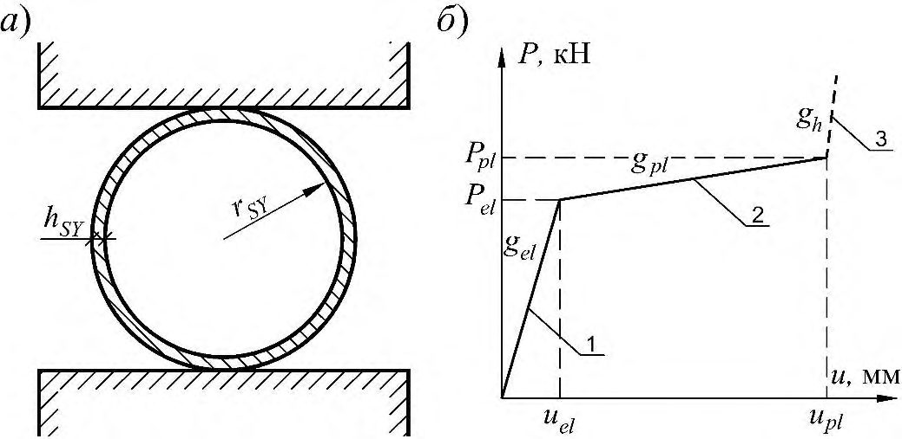
Рисунок 5.1 - Податливые опоры в виде сминаемых вставок кольцевого сечения
Допускается проектировать податливые опоры в виде сминаемых вставок кольцевого сечения с переходом в стадию отвердения при соответствующем теоретическом обосновании.
Рисунок 5.2 - Схема расстановки податливых опор в основании вертикальных несущих стен убежищ
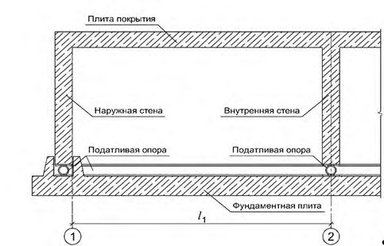
Расчет вертикальных наружных конструкций на особое сочетание нагрузок производится без учета влияния податливости опор в соответствии с требованиями разделов 9 и 10.
СП 88.13330.2022
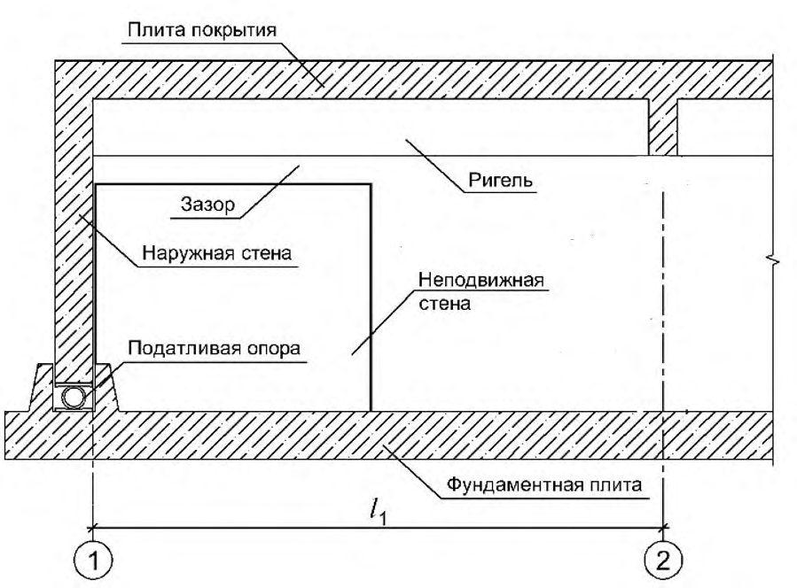
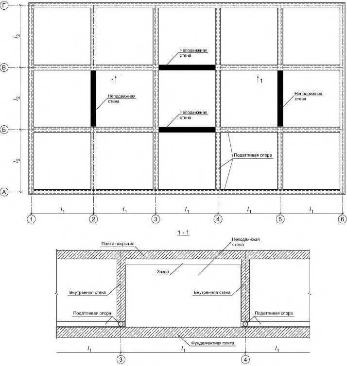
а - у наружной стены; б - в середине убежища
Рисунок 5.3 - Схема расстановки податливых опор и неподвижных стен для восприятия горизонтальной динамической нагрузки
Высота внутренних дверных проемов убежищ с податливыми опорами должна быть увеличена на величину наружного диаметра податливой опоры 𝐷ПО относительно требований использования их в мирное время.
Сети и коммуникации для функционирования убежищ следует прокладывать через неподвижные конструкции. Допускается также прокладывать коммуникации и сети в теле фундаментной плиты.
На вводах коммуникаций, обеспечивающих внешние связи помещения, приспосабливаемого под убежище, с другими помещениями, а также для функционирования систем внутреннего оборудования после воздействия расчетной нагрузки, следует предусматривать компенсационные устройства.
Проектировать компенсационные устройства и дверные проемы следует с учетом возможной осадки сооружения, определяемой расчетом.
Рисунок 5.4 - Принципиальная схема устройства узла с податливой опорой
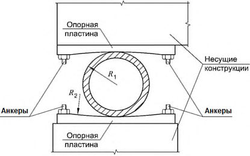
5.6Гидроизоляция и герметизация
СП 88.13330.2022
Для гидроизоляционных покрытий в зависимости от назначения и вида следует выбирать материалы с высокой адгезией, прочностью, отсутствием усадки, значительной сопротивляемостью разрыву, водои паронепроницаемостью, наибольшим относительным удлинением, а при наличии агрессивных грунтовых вод - стойкие к их воздействию.
В северной строительно-климатической зоне, независимо от принципов использования многолетнемерзлых грунтов (I и II), гидроизоляция заглубленных в грунт конструкций должны быть стойкой к замораживанию и пригодной к условиям работы при отрицательных температурах.
Во всех случаях гидроизоляция должна быть совмещена с антикоррозийной защитой и защитой фундаментов и других подземных частей зданий и сооружений от вспучивания.
При проектировании таких убежищ необходимо определять зоны возможного появления трещин в ограждающих конструкциях и ширину их раскрытия при неблагоприятных расчетных случаях воздействия. Конструкцию гидроизоляционного покрытия следует определять с учетом возможного деформирования его без разрыва и потери изоляционных свойств.
где Km - коэффициент, зависящий от соотношения физико-механических свойств гидроизоляционных материалов и мастики, принимаемый по таблице 5.6;
Таблица 5.6
| Отношение показателей физико-механических свойств материалов t R S / R G | 1 | 1-2 | 2 |
|---|---|---|---|
| Коэффициент K m | 0,67 | 1 | 1,4 |
Еm - модуль деформации гидроизоляционного материала, кгс/см² , принимаемый по таблице 5.7; ε m - относительное удлинение гидроизоляционного материала, принимаемое по таблице 5.7;
RS - расчетное сопротивление гидроизоляционного материала растяжению, кгс/см² , принимаемое по таблице 5.7; t - толщина гидроизоляционного материала, см;
RG - расчетное сопротивление мастики сдвигу, принимаемое по таблице 5.8, кгс/см² ;
F α - расчетная нагрузка на гидроизоляцию, кгс/см² ; μ - коэффициент трения песка по гидроизоляционному покрытию, принимаемый по таблице 5.8.
Таблица 5.7
| Гидроизоляционный материал | Расчетное сопротивление R S , кгс/см² (над чертой), модуль деформации Е m , кгс/см² (под чертой), при времени нарастания нагрузки, м с | Расчетное сопротивление R S , кгс/см² (над чертой), модуль деформации Е m , кгс/см² (под чертой), при времени нарастания нагрузки, м с | Расчетное сопротивление R S , кгс/см² (над чертой), модуль деформации Е m , кгс/см² (под чертой), при времени нарастания нагрузки, м с | Расчетное сопротивление R S , кгс/см² (над чертой), модуль деформации Е m , кгс/см² (под чертой), при времени нарастания нагрузки, м с | Расчетное сопротивление R S , кгс/см² (над чертой), модуль деформации Е m , кгс/см² (под чертой), при времени нарастания нагрузки, м с | Расчетное сопротивление R S , кгс/см² (над чертой), модуль деформации Е m , кгс/см² (под чертой), при времени нарастания нагрузки, м с | Расчетное сопротивление R S , кгс/см² (над чертой), модуль деформации Е m , кгс/см² (под чертой), при времени нарастания нагрузки, м с | Расчетное сопротивление R S , кгс/см² (над чертой), модуль деформации Е m , кгс/см² (под чертой), при времени нарастания нагрузки, м с |
|---|---|---|---|---|---|---|---|---|
| до 6 | 8 | 10 | 20 | 40 | 60 | 100 | 150 | |
| Поливинилхлоридный пластикат при: | ||||||||
| ε m = 0,2 | 240 1400 | 230 1200 | 220 1140 | 180 920 | 150 720 | 140 700 | 130 650 | 120 600 |
| ε m = 0,1 | 300 300 | 285 295 | 275 290 | 255 270 | 240 220 | 230 215 | 220 210 | 215 205 |
| Листовой полиэтилен при ε m = 0,3 | 155 790 | 143 740 | 137 710 | 122 630 | 115 595 | 112 560 | 108 550 | 107 540 |
| Изол в три слоя при ε m = 0,1 | 54 560 | 50 520 | 46 500 | 40 430 | 36 340 | 32 320 | 29 300 | 24 280 |
| Изол в четыре слоя при ε m = 0,08 | 72 880 | 67 820 | 62 780 | 54 680 | 46 550 | 42 510 | 39 490 | 36 450 |
| Изол в пять слоев при ε m =0,08 | 89 1200 | 83 1040 | 78 980 | 70 830 | 60 780 | 54 650 | 48 580 | 45 540 |
| Бризол в три слоя при ε m = 0,08 | 61 630 | 56 580 | 53 560 | 45 480 | 37 380 | 35 360 | 33 340 | 31 320 |
| Бризол в пять слоев при ε m = 0,08 | 99 1260 | 93 1170 | 89 1100 | 79 935 | 67 880 | 61 730 | 64 650 | 51 610 |
| Бризол в четыре слоя при ε m = 0,08 | 81 990 | 75 920 | 70 880 | 61 765 | 52 620 | 47 575 | 44 550 | 41 510 |
| Мастика бутилкаучуковая строительная нетвердеющая, R G | 17,5 | 17,5 | 17,5 | 13 | 9,8 | 8,0 | 6,2 | 5,2 |
Примечания
1 При применении других гидроизоляционных материалов значение расчетного сопротивления и модуля деформации принимают по данным предприятия-изготовителя.
2 При промежуточных значениях времени нарастания нагрузки значения RS , RG и Еm допускается принимать по интерполяции.
Таблица 5.8
| Материал гидроизоляционного покрытия | Коэффициент трения μ песка при его зерновом составе и влажности,% | Коэффициент трения μ песка при его зерновом составе и влажности,% | Коэффициент трения μ песка при его зерновом составе и влажности,% | Коэффициент трения μ песка при его зерновом составе и влажности,% |
|---|---|---|---|---|
| Материал гидроизоляционного покрытия | среднезернистого | среднезернистого | крупнозернистого | крупнозернистого |
| Материал гидроизоляционного покрытия | G = 0 | G 0,5 | G = 0 | G 0,5 |
| Поливинилхлоридный пластикат | 0,5 | 0,4 | 0,55 | 0,43 |
| Листовой полиэтилен | 0,42 | 0,36 | 0,45 | 0,38 |
| Изол и бризол | 0,52 | 0,4 | 0,6 | 0,45 |
Максимальная ширина раскрытия трещин в местах сопряжения железобетонных конструкций должна быть не более 0,5 см.
СП 88.13330.2022
Для случаев, когда значения ат меньше значений максимальной ширины трещины в конструкции сооружения, необходимо предусматривать применение гидроизоляционных материалов с более высокими прочностными характеристиками, увеличивать число слоев гидроизоляционного покрытия или предусматривать местные усиления гидроизоляции в зоне образования трещин.
где RG; F α и μ - см. формулу (5.3).
Закладные части для ввода кабелей, воздуховодов, труб водопровода и теплоснабжения и для выпусков канализации следует устраивать в виде стальных патрубков с наваренными в их средней части фланцами. Установку закладных частей в ограждающие конструкции следует предусматривать до бетонирования.
В закладных (трубчатых) частях после прокладки кабелей электроснабжения и связи должна быть предусмотрена заливка свободного пространства кабельной мастикой. В других вводах свободное пространство внутри закладных частей следует заполнять уплотнительными прокладками.
Для многоэтажных убежищ значение эксплуатационного подпора Р при фильтровентиляции определяют по формуле
где а - расстояние от оси воздухозаборного отверстия оголовка до пола нижнего этажа убежища, м; h - высота верхнего этажа убежища, м; ρн, ρс - объемная масса наружного воздуха и воздуха в сооружении при зимних расчетных температурах.
В проекте на плане сооружения указывают все линии герметизации убежища и средства, обеспечивающие герметизацию входов и мест прохода коммуникаций.
6Объемно-планировочные и конструктивные решения противорадиационных укрытий
6.1Объемно-планировочные решения
В неканализованных противорадиационных укрытиях допускается предусматривать помещение для выносной тары.
Для противорадиационных укрытий, оборудуемых в существующих зданиях и сооружениях, следует принимать:
- трехъярусное расположение нар при высоте помещений 2,9 м и более;
- двухъярусное расположение нар при высоте помещений от 2,15 до 2,9 м.
При размещении противорадиационных укрытий в подвалах, подпольях, погребах и других заглубленных помещениях высотой 1,7 -1,9 м следует предусматривать одноярусное расположение нар, при этом нормативное значение площади пола основных помещений на одного укрываемого должно составлять 0,6 м² .
Основные помещения укрытий оборудуют местами для лежания и сидения.
Места для лежания должны составлять не менее 15 % при одноярусном, 20 % при двухъярусном и 30 % при трехъярусном расположении нар от общего числа мест в укрытии. Места для лежания следует принимать размерами 0,55×1,8 м.
В противорадиационных укрытиях допускается проектировать санитарный узел из расчета обеспечения 50 % укрываемых. Для остальных укрываемых пользование санитарными приборами следует предусматривать в соседних с укрытием помещениях.
При ручном приводе вентилятора противопыльные фильтры должны быть отделены от вентиляционных помещений и помещений для укрываемых защитным экраном или стеной, исключающей возможность прямого облучения обслуживающего персонала. Толщину защитных экранов и стен принимают по таблице 5.2.
СП 88.13330.2022
В укрытиях вместимостью до 50 чел. вместо помещения для загрязненной одежды допускается предусматривать устройство при входах вешалок, размещаемых за занавесями. 6.1.8 Число входов в противорадиационное укрытие должно быть не менее двух. При вместимости укрытия до 50 чел. допускается устройство одного входа, при этом вторым аварийным (эвакуационным) выходом должен быть люк размерами 0,6×0,9 м с вертикальной лестницей или окно размерами 0,75×1,5 м с приспособлением для выхода.
Общую ширину входов для мирного времени в помещениях, приспосабливаемых под противорадиационные укрытия, следует принимать из расчета не менее 0,6 м на 100 чел., работающих в помещениях, но ширина каждого из входов должна быть не менее 0,8 м.
6.2Конструктивные решения
Ослабление радиации внешнего облучения при радиоактивном заражении местности следует определять расчетом в соответствии с указанной в задании на проектирование степенью ослабления радиации внешнего облучения.
Масса 1 м² заделки должна соответствовать аналогичной массе ограждающих конструкций или быть не менее значений, определяемых расчетом по ослаблению излучения с учетом степени ослабления радиации.
- устройства пристенных экранов из камня или кирпича;
- укладки мешков с грунтом и т. п. у наружных стен надземных помещений на высоту 1,7 м от отметки пола;
- обвалования выступающих частей стен подвалов (подполий) на полную высоту;
- укладки дополнительного слоя грунта на перекрытии и установки в связи с этим поддерживающих прогонов (балок) и стоек;
- заделки лишних проемов в ограждающих конструкциях и устройства стенокэкранов во входах (въездах).
Все перечисленные мероприятия должны быть проведены в период перевода помещений на режим ПРУ.
Устройство вентиляционного помещения и установку в нем оборудования проводят заблаговременно.
Место установки стенки-экрана определяют условиями эксплуатации, а расстояние от входного проема до экрана должно быть на 0,6 м больше ширины полотна двери (ворот). Размеры стенки-экрана в плане следует назначать из условия ослабления и минимального попадания излучения в помещения для укрываемых через входы.
Высота стенки-экрана должна быть не менее 1,7 м от отметки пола.
7Объемно-планировочные и конструктивные решения укрытий, заглубленных помещений, а также сооружений подземного пространства, включая сооружения метрополитена, предназначенных для защиты населения
7.1Объемно-планировочные решения
СП 88.13330.2022 санитарный пост (пункт) площадью 8 м² , но не менее одного поста на сооружение. При вместимости 900 -1200 чел., кроме санитарных постов (пунктов), следует предусматривать медицинский пункт площадью 18 м² , при этом на каждые 100 укрываемых сверх 1200 чел. площадь медпункта увеличивают на 1 м² .
- помещение (место) для размещения санитарного поста (пункта) площадью не менее 8 м² . Санитарные посты предусматривают в виде выгороженного пространства ширмами или быстровозводимыми перегородками вблизи входов в сооружение. Оснащение санитарного поста (пункта) не нормируют;
- помещение (место) для размещения выносной тары. Помещения для выносной тары (вспомогательные) предусматривают в виде выгороженного пространства ширмами или быстровозводимыми перегородками. Виды и типы выносной тары не нормируют.
7.2Конструктивные решения
8Объемно-планировочные и конструктивные решения быстровозводимых
защитных сооружений блок-модульного типа, размещаемых на поверхности земли
8.1Общие положения
- убежища ГО блок-модульного типа (У ГО БМТ);
- противорадиационные укрытия ГО блок-модульного типа (ПРУ ГО БМТ);
- укрытия ГО блок-модульного типа (Укр ГО БМТ).
Монтаж и наладку инженерного оборудования технических систем и систем жизнеобеспечения ЗС ГО БМТ осуществляют в заводских условиях в соответствии с требованиями ГОСТ Р 42.4.08.
8.2Объемно-планировочные решения
Высота скамей первого яруса должна быть 0,45 м, нар второго яруса - 1,4 м и третьего яруса - 2,0 м от пола. Расстояние от верхнего яруса нар до выступающих конструкций покрытия должно быть не менее 0,7 м.
8.3Конструктивные решения
СП 88.13330.2022
целом, а также отдельных его элементов на всех стадиях возведения и эксплуатации. Рекомендуется применять коробчатую конструктивную схему с жесткими узлами.
8.3.6. Пространство между блок-модулями для обеспечения равномерной передачи нагрузки следует принимать не менее 100 мм и засыпать песком повышенной и средней крупности.
9Нагрузки и воздействия
9.1Нагрузки и их сочетания
Конструкции, кроме того, должны быть проверены расчетом на основное сочетание нагрузок и воздействий, а также на возникающие усилия и сохранность герметичности защитных сооружений при возможной осадке отдельных нагруженных опор (колонн) от эксплуатационной нагрузки надземной части здания.
Конструкцию междуэтажного перекрытия должны рассчитывать на вертикальную нагрузку от инерционных сил, возникающих в процессе движения сооружения. Направление нагрузки следует принимать симметричным, т.е. нагрузка может действовать снизу вверх и сверху вниз.
Ограждающие и несущие конструкции убежищ, укрытий, заглубленных помещений, а также сооружений подземного пространства, включая метрополитены должны быть рассчитаны на фугасное и осколочное действия обычных средств поражения, в соответствии с приложением А.
Несущие конструкции встроенных убежищ должны быть проверены расчетом на частичное обрушение наземного здания, при условии, что нагрузка от 0,5 массы обрушаемых конструкций с площади, равной площади убежища, с учетом коэффициента динамичности, равного 1,2, превышает нагрузку от действия избыточного давления воздушной ударной волны, согласно требованиям СП 63.13330, СП 385.1325800, разделов 9 и 10 и приложения А.
Несущие конструкции встроенных укрытий, заглубленных помещений, а также сооружений подземного пространства, включая метрополитены мелкого заложения, должны быть проверены расчетом на падение части вышерасположенной конструкции весом 1,2 т и размерами 0,4 × 0,4 × 3 м с высоты 5 м при частичном обрушении наземного здания, выполненного из сборных железобетонных конструкций.
При выполнении наземного здания из монолитного железобетона проверку несущих конструкций встроенных укрытий, заглубленных помещений, а также сооружений подземного пространства, включая метрополитены мелкого заложения, на падение вышерасположенных конструкций допускается не выполнять.
СП 88.13330.2022
равными единице. Защитные сооружения рассчитывают на однократное воздействие нагрузки.
9.2Динамические нагрузки от воздействия ударной волны
Принимается одновременное загружение всех конструкций. При этом динамическую нагрузку Рn , кПа, принимают равномерно распределенной по площади и приложенной нормально к поверхности конструкции. а , б - при полном заглублении встроенного убежища ( а ) и с примыканием ( б ) к помещению подвала, не защищенного от ударной волны; в , г - при неполном заглублении убежищ, обвалованных грунтом, с выносом бровки откоса на расстояние, соответственно больше ( в ) и меньше ( г ) отношения ( h 1 + h 2) n 0 -1 ; д - при неполном заглублении убежища с открытыми участками стен ( h ≤ 1,5 м); е - при полном заглублении убежища и при уровне грунтовых вод выше отметки пола убежища; ж , з - при расположении убежища в многолетнемерзлых грунтах, при использовании основания по принципу 1 ( ж ) и по принципу 2 ( з ); и , к , л - для убежищ, встроенных в первые этажи зданий при совмещении стен убежища и здания ( к ), с примыканием стен к внутренним помещениям здания ( к ), при расположении убежищ внутри этажа ( л ); м - при расположении убежищ под подвальными помещениями (техническими подпольями)
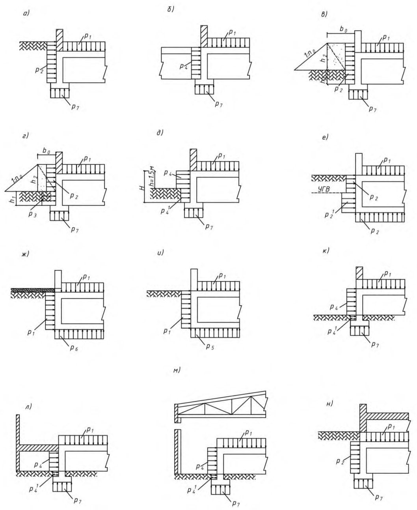
Рисунок 9.1 - Схемы приложения динамических нагрузок на конструкции убежищ
СП 88.13330.2022
Таблица 9.1
| Схема приложения динамических | Вертикальная динамическая нагрузка на покрытия убежищ, встроенных в здания (сооружения) с площадью проемов,% | Вертикальная динамическая нагрузка на покрытия убежищ, встроенных в здания (сооружения) с площадью проемов,% |
|---|---|---|
| нагрузок на конструкции | Менее 10 | Более 10 или с легко разрушаемыми конструкциями |
| Рисунок 9.1, а-м | P 1 = 0,9 ∙∆P ф | P 1 =∆P ф |
| Рисунок 9.1, н | P 1 = 0,7 ∙∆P ф | P 1 = 0,8 ∙∆P ф |
| Отдельно стоящие убежища | P 1 =∆P ф | P 1 =∆P ф |
| Тоннели аварийных выходов | P 1 =∆P ф | P 1 =∆P ф |
| Примечание - Здесь и далее под легко разрушаемыми конструкциями следует понимать наружные ограждающие конструкции, масса 1 м² которых не превышает 1000 Н (100 кгс). | Примечание - Здесь и далее под легко разрушаемыми конструкциями следует понимать наружные ограждающие конструкции, масса 1 м² которых не превышает 1000 Н (100 кгс). | Примечание - Здесь и далее под легко разрушаемыми конструкциями следует понимать наружные ограждающие конструкции, масса 1 м² которых не превышает 1000 Н (100 кгс). |
Таблица 9.2
| Схема приложения динамических нагрузок на конструкции | Горизонтальные динамические нагрузки на элементы наружных стен убежищ, кПа |
|---|---|
| Рисунок 9.1, а , в , г , н | P 2 = K б ∙∆P ф |
| Рисунок 9.1, б (при расположении над подпольями или подвалами помещений с площадью проемов в ограждающих конструкциях менее 10 %) | P 2 = 0,7 ∙∆P ф |
| Рисунок 9.1, б (при площади проемов 10% и более или при расположении над подвалом (подпольем) помещений с легко разрушаемыми конструкциями) | P 2 = 0,8 ∙∆P ф |
| Рисунок 9.1, г | P 3 = K б ∙K отр ∙∆Р ф |
| Рисунок 9.1, е (на элементы наружных стен, расположенные выше уровня горизонта грунтовых вод) | P 2 = 0,6∙∆ P ф |
| Рисунок 9.1, е (на элементы наружных стен, расположенные ниже уровня горизонта грунтовых вод) | P ′ 2 = ∆P ф |
| Рисунок 9.1, д (для отдельно стоящих убежищ и встроенных убежищ в здания, стены которых имеют площадь проемов в ограждающих конструкциях 10 %иболее) | 2 ф 4 ф ф 2,5 720 P P P P = + + |
| Рисунок 9.1, д (для встроенных убежищ в здания, стены которых имеют площадь проемов в ограждающих конструкциях менее 10 %) | 2 ф 4 ф ф 6 2 720 P P P P = + + |
| Рисунок 9.1, к | 2 ф 4 ф ф 6 2 720 P P P P = + + |
|---|---|
| Рисунок 9.1, л,м (при площади проемов стен здания от 10 % до 50 %) | 2 ф 4 ф ф 2,5 720 P P P P = + + |
| Рисунок 9.1, л,м (при площади проемов более 50 %, а также для стен убежищ, находящихся за легко разрушаемыми конструкциями) | 2 ф 4 ф ф 6 2 720 P P P P = + + |
| Рисунок 9.1, л,м (при площади проемов стен здания менее 10 %) | 2 ф 4 ф ф 2,03 0,9 0,9 720 P P P P = + + |
| Рисунок 9.1, д , к , л,м | P' 4 = K б ∙P 4 |
| Рисунок 9.1, ж , и (при расположении над ними помещений с площадью проемов в ограждающих конструкциях 10 % и более или с легко разрушаемыми конструкциями) | P 2 = ∆P ф |
| Рисунок 9.1, ж , и (для встроенных в кирпичные и панельные здания, при расположении над ними помещений с площадью проемов в ограждающих конструкциях менее 10 %) | P 2 = 0,9∙∆ P ф |
| Для встроенных в первые этажи убежищ, находящихся за кирпичными, блочными и панельными ограждениями конструкций | 2 ф 4 ф ф 2,5 720 P P P P = + + |
| Для встроенных в первые этажи убежищ, находящихся за легко разрушаемыми конструкциями | 2 ф 4 ф ф 6 2 720 P P P P = + + |
| Заглубленные отдельно стоящие убежища (на элементы наружных стен, расположенные выше уровня горизонта грунтовых вод) | P 2 = 0,6 ∙∆P ф |
| Заглубленные отдельно стоящие убежища (на элементы наружных стен, расположенные ниже уровня горизонта грунтовых вод) | P ′ 2 = ∆P ф |
1 K б - коэффициент бокового давления, принимаемый по таблице 9.3 или СП 22.13330. При наличии данных инженерных изысканий следует принимать K б = 0,4 для песков с коэффициентом водонасыщения Sr < 0,5 и K б = 0,6 для глины с показателем текучести 0,75 < IL < 1.
- 2 K отр - коэффициент, учитывающий отражение ударной волны и принимаемый по таблице 9.4.
Таблица 9.3
| Характеристика грунтов в соответствии с СП 22.13330 | Коэффициент K б |
|---|---|
| Песчаные с коэффициентом водонасыщения S r < 0,8; супеси с показателем текучести I L < 1; суглинки и глины с показателем текучести I L < 0,75 | 0,5 |
| Водонасыщенные грунты (ниже уровня грунтовых вод); пески с коэффициентом водонасыщения S r > 0,8; супеси, суглинки и глины с показателем текучести I L > 1 | 1 |
СП 88.13330.2022
Таблица 9.4
| Уклон откосов обвалования | 1:5 | 1:4 | 1:3 | 1:2 |
|---|---|---|---|---|
| Коэффициент K отр | 1,0 | 1,1 | 1,2 | 1,3 |
Таблица 9.5
| Схема приложения динамических нагрузок на конструкции | Вертикальные динамические нагрузки на фундаменты убежищ, кПа |
|---|---|
| Рисунок 9.1, е (при условии, что толщина слоя грунта под фундаментной плитой до скалы равна или больше значения заглубления сооружения в грунт) | P 5 = ∆P ф |
| Рисунок 9.1, е (при толщине слоя нескального грунта от низа фундаментной плиты до скалы меньше значения заглубления сооружения) | P 5 = 1,2 ∙∆P ф |
| Рисунок 9.1, и (при использовании сплошной фундаментной плиты на многолетнемерзлых грунтах по принципу II) | P 5 = ∆P ф |
| Рисунок 9.1, ж (при использовании сплошной фундаментной плиты на многолетнемерзлых грунтах по принципу I) | P 6 = 1,2 ∙∆P ф |
| На ленточные и отдельно стоящие фундаменты. На сплошную фундаментную плиту при уровне грунтовых вод ниже плиты не менее 1,0 м | P 7 определяют в зависимости от динамической вертикальной нагрузки на стены, колонны и площади фундаментов с учетом схемы нагружения |
Таблица 9.6
| Наименование нагружаемых элементов | Горизонтальные динамические нагрузки на элементы входов и аварийных выходов убежищ, кПа |
|---|---|
| На участки наружных стен убежищ в местах расположения входов и на первые (наружные) защитно-герметические двери (ворота), на стены, покрытие и пол аварийного (эвакуационного) выхода, запроектированного в виде наклонного спуска и тоннеля | P = K в ∙∆P ф |
| На защитно-герметические двери (ворота), расположенные в стенах встроенных в первые этажи убежищ (площадь проемов в ограждающих конструкциях здания 10 %иболее) | 2 ф ф ф 2,5 720 P P P P = + + |
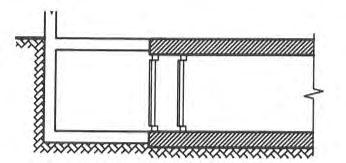
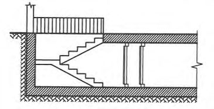
СП 88.13330.2022
| Наименование нагружаемых элементов | Горизонтальные динамические нагрузки на элементы входов и аварийных выходов убежищ, кПа |
|---|---|
| На защитно-герметические двери (ворота), расположенные в стенах встроенных в первые этажи убежищ (площадь проемов в ограждающих конструкциях здания менее 10 %) | 2 ф ф ф 6 2 720 P P P P = + + |
| На внутренние стены тамбур-шлюзов | P = 0,8 ∙P ст |
| На внутренние стены тамбуров входов (при давлении 300 и 200 кПа) | P = 25 |
| На внутренние стены тамбуров входов (при давлении 100 кПа) | P = 15 |
| От ударной волны затекания на конструкции аварийного выхода, запроектированного в виде защищенного оголовка с шахтой и тоннелем, а также на участок стены в месте примыкания выхода | P = 1,6∙∆ P ф |
| От ударной волны затекания на конструкции аварийного выхода (воздухозаборного канала), запроектированного в виде защищенного оголовка с шахтой, а также на участок стены в месте примыкания шахты (при давлении 300 и 200 кПа) | P = 1,65 ∙∆P ф |
| От ударной волны затекания на конструкции аварийного выхода (воздухозаборного канала), запроектированного в виде защищенного оголовка с шахтой, а также на участок стены в месте примыкания шахты (при давлении 100 кПа) | P = 1,8 ∙∆P ф |
Примечания
1 K в - коэффициент, принимаемый по таблице 9.7.
2 Р ст -нагрузка, равная динамической нагрузке на наружные стены убежищ в месте расположения входа, определяемая по 9.2.3.
Таблица 9.7
| Вход | Схема входа | Коэффициент K в при давлении, кПа | Коэффициент K в при давлении, кПа | Коэффициент K в при давлении, кПа | Коэффициент K в при давлении, кПа |
|---|---|---|---|---|---|
| Схема входа | 300 | 200 | 100 | 20 | |
| 1 Из подвалов, не защищенных от ударной волны | 0,8 | 0,8 | 0,8 | 0,8 | |
| 2 Сквозняковый с перекрытым участком против входного проема | 1,0 | 1,0 | 1,0 | 1,0 | |
| 3 Из помещений первого этажа в убежища, расположенные: - в подвальном или цокольном этаже K Д | 1,0 2,7 | 1,0 2,5 | 1,0 2,2 | 1,0 2,0 |
СП 88.13330.2022
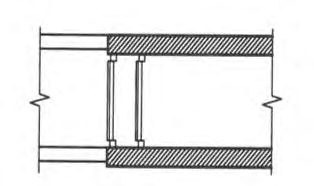
Примечания
- 1 Над чертой приведены значения для входов из помещений первого этажа и лестничных клеток с площадью проемов от 10 % до 50 %, под чертой - с площадью проемов более 50 %, а также для входов из помещений с легко разрушаемыми конструкциями.
- 2 Для входов из помещений с площадью проемов в ограждающих конструкциях менее 10 % коэффициент K в следует принимать равным 90 % коэффициентов K в из помещений с площадью проемов от 10 % до 50 %.
- 3 При отсутствии в задании на проектирование данных о площади проемов в ограждающих конструкциях здания, их значение следует принимать 50 %.
9.3Динамические нагрузки для расчета быстровозводимых убежищ, размещаемых на поверхности земли
Рисунок 9.2 - Схема приложения динамической нагрузки на конструкции быстровозводимых убежищ
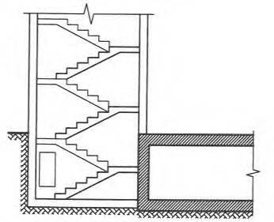
9.4Эквивалентные статические нагрузки
Таблица 9.8
| Наименование нагрузки | Эквивалентная статическая нагрузка |
|---|---|
| Эквивалентная статическая нагрузка на покрытия убежищ при расчете на изгибающий момент | q экв = K Д Р 1 |
| Эквивалентная статическая нагрузка на покрытия убежищ при расчете на поперечную силу | q экв = K Д Р 1 |
| Эквивалентная статическая нагрузка при определении величины продольной силы для внецентренно сжатых элементов покрытия | q экв = K Д ( Р 2 ; Р 3 ; Р 4 ) |
Примечания
1 K Д - коэффициент динамичности, принимаемый по таблице 9.9.
2 При расчете покрытий отдельно стоящих убежищ на поперечную силу эквивалентностатическую нагрузку принимают с учетом K Д, увеличенным на 10 %.
- 3 При определении эквивалентной статической нагрузки для внецентренно сжатых элементов покрытия K Д принимают равным 1,0.
СП 88.13330.2022
Таблица 9.9
| Коэффициент K Д для покрытий убежищ | Коэффициент K Д для покрытий убежищ | Коэффициент K Д для покрытий убежищ | Коэффициент K Д для покрытий убежищ | Коэффициент K Д для покрытий убежищ | ||
|---|---|---|---|---|---|---|
| Расчетные условия | Класс арматурной стали | отдельно стоящих | встроенных в помещения с площадью проемов,% | встроенных в помещения с площадью проемов,% | встроенных в помещения с площадью проемов,% | расположенных под техническими |
| менее 10 | 10-50 | более 50 | подпольями | |||
| Предельное состояние 1а | A240, A300, A400, A500, В500 | 1,8 | 1,2 | 1,4 | 1,8 | 1,2 |
| Предельное состояние 1б | A240, A300, A400, A500, В500 | 1,2 | 1,0 | 1,1 | 1,2 | 1,0 |
- 3 При проектировании встроенных убежищ площадь проемов в ограждающих конструкциях зданий принимают более 50 %.
Расчет каменных наружных стен по предельному состоянию 1б, к которым примыкают (а не опираются) покрытия, проводят на продольную силу от нагрузки, приходящейся непосредственно на горизонтальное сечение стены, и от нагрузки с примыкающего покрытия шириной 1 м, приложенной на расстоянии 4 см от внутренней поверхности стены.
При расчете наружных стен следует учитывать, что продольные силы действуют одновременно с горизонтальной эквивалентной статической нагрузкой.
Таблица 9.10
| Схема приложения динамических нагрузок на конструкции | Горизонтальная эквивалентная статическая нагрузка на элементы наружных стен убежищ (при ξ d ≥ ξ Rd ), кПа | Горизонтальная эквивалентная статическая нагрузка на элементы наружных стен убежищ (при ξ d < ξ Rd ), кПа |
|---|---|---|
| Рисунок 9.1, а , в , г , н | q экв = Р 2 ∙K Д ∙K 0 | q экв = Р 2 ∙K Д ∙K 0 |
| Рисунок 9.1, б (при расположении над подпольями или подвалами помещений с площадью проемов в ограждающих конструкциях здания менее 10 %) | q экв = Р 4 ∙K Д ∙K 0 | q экв = Р 4 ∙K Д ∙K 0 |
| Рисунок 9.1, б (при площади проемов 10 %иболее или при расположении над подвалом (подпольем) | q экв = Р 4 ∙K Д ∙K 0 | q экв = Р 4 ∙K Д ∙K 0 |
| помещений с легко разрушаемыми конструкциями) | ||
|---|---|---|
| Рисунок 9.1, г | q экв = Р 3 ∙K Д ∙K 0 | q экв = Р 3 ∙K Д ∙K 0 |
| Рисунок 9.1, е (на элементы наружных стен, расположенные выше уровня горизонта грунтовых вод) | q экв = Р 2 ∙K Д ∙K 0 | q экв = Р 2 ∙K Д ∙K 0 |
| Рисунок 9.1, е (на элементы наружных стен, расположенные ниже уровня горизонта грунтовых вод) | q экв = 1,7 ∙ Р' 2 ∙K 0 | q экв = Р' 2 ∙K Д ∙K 0 |
| Рисунок 9.1, д (для отдельно стоящих убежищ и встроенных убежищ в здания, стены которых имеют площадь проемов 10 %иболее) | q экв = 1,7∙ Р 4 ∙K 0 | q экв = Р 4 ∙K Д ∙K 0 |
| Рисунок 9.1, д (для встроенных убежищ в здания, стены которых имеют площадь проемов менее 10 %,) | q экв = 1,7 ∙ Р 4 ∙K 0 | q экв = Р 4 ∙K Д ∙K 0 |
| Рисунок 9.1, к | q экв = 1,7∙ Р 4 ∙K 0 | q экв = Р 4 ∙K Д ∙K 0 |
| Рисунок 9.1, л,м (при площади проемов стен здания от 10 %до 50 %) | q экв = 1,7∙ Р 4 ∙K 0 | q экв = Р 4 ∙K Д ∙K 0 |
| Рисунок 9.1, л,м (при площади проемов более 50 %, а также для стен убежищ, находящихся за легко разрушаемыми конструкциями) | q экв = 1,7∙ Р 4 ∙K 0 | q экв = Р 4 ∙K Д ∙K 0 |
| Рисунок 9.1, л,м (при площади проемов стен здания менее 10 %) | q экв =1,7∙ Р 4 ∙K 0 | q экв = Р 4 ∙K Д ∙K 0 |
| Рисунок 9.1, д , и , л,м | q экв = 1,7∙ Р' 4 ∙K 0 | q экв = Р' 4 ∙K Д ∙K 0 |
| Рисунок 9.1, ж , и (при расположении над ними помещений с площадью проемов в ограждающих конструкциях 10 %иболее или с легко разрушаемыми конструкциями) | q эKв = Р 2 ∙K Д ∙K 0 | q эKв = Р 2 ∙K Д ∙K 0 |
| Рисунок 9.1, ж , и (для встроенных в кирпичные и панельные здания, при расположении над ними помещений с площадью проемов в ограждающих конструкциях менее 10 %) | q экв = Р 2 ∙K Д ∙K 0 | q экв = Р 2 ∙K Д ∙K 0 |
| Для встроенных в первые этажи убежищ, находящихся за кирпичными, блочными и панельными ограждениями конструкций | q экв = Р 4 ∙K Д ∙K 0 | q экв = Р 4 ∙K Д ∙K 0 |
| Для встроенных в первые этажи убежищ, находящихся за легко разрушаемыми конструкциями | q экв = Р 4 ∙K Д ∙K 0 | q экв = Р 4 ∙K Д ∙K 0 |
| Заглубленные отдельно стоящие убежища (на элементы наружных стен, расположенные выше уровня горизонта грунтовых вод) | q экв = Р 2 ∙K Д ∙K 0 | q экв = Р 2 ∙K Д ∙K 0 |
| Заглубленные отдельно стоящие убежища (на элементы наружных стен, расположенные ниже уровня горизонта грунтовых вод) | q экв = 1,7 ∙ Р' 2 ∙K 0 | q экв = Р' 2 ∙K Д ∙K 0 |
Примечания
- 1 K Д -коэффициент динамичности, принимаемый при расчете на изгибающий момент по таблице 9.11, а при расчете на поперечную силу - по таблице 9.11, но с увеличением на 10 %.
- 2 Для стен убежищ, встроенных в здания (сооружения) с легко разрушаемыми конструкциями, динамический коэффициент K Д принимают как для отдельно стоящих убежищ.
- 3 При проектировании встроенных убежищ площадь проемов в зданиях принимают более 50 %.
- 4 K 0 - коэффициент, учитывающий увеличение давления на стены за счет горизонтальной составляющей массовой скорости частиц грунта, затухание волны сжатия с глубиной и снижение давления за счет движения сооружения и деформации стен. Для заглубленных и обвалованных стен значение коэффициента K 0 принимают равным единице при расчете по предельному состоянию 1а
СП 88.13330.2022
и 0,8 по предельному состоянию 1б. Для не обвалованных стен и стен, расположенных в водонасыщенных грунтах, коэффициент K 0 принимают равным единице.
Таблица 9.11
| Коэффициент K д для стен | Коэффициент K д для стен | Коэффициент K д для стен | Коэффициент K д для стен | Коэффициент K д для стен | ||
|---|---|---|---|---|---|---|
| Расчетное условие | Класс арматурной стали | заглубленных, обвалованных и примыкающих к помещениям подвалов (рисунок 9.1, а , б , в , г , е , ж , и , н ) | совмещенных с наружными стенами первого или цокольного этажей (рисунок 9.1, схемы д , к ) | находящихся внутри помещений с площадью проемов,% (рисунок 9.1, л,м ) | находящихся внутри помещений с площадью проемов,% (рисунок 9.1, л,м ) | находящихся внутри помещений с площадью проемов,% (рисунок 9.1, л,м ) |
| менее 10 | 10-50 | более 50 | ||||
| Предельное состояние Iа | A240, A300, A400, A500, В500 | 1,2 | 1,7 | 1,2 | 1,4 | 1,7 |
| Предельное состояние Iб | A240, A300, A400, A500, В500 | 1,0 | 1,3 | 1,0 | 1,1 | 1,3 |
Таблица 9.12
| Схема приложения динамических нагрузок на конструкции | Вертикальная эквивалентная статическая нагрузка на фундаменты убежищ, кПа |
|---|---|
| Рисунок 9.1, е (при условии, что толщина слоя грунта под фундаментной плитой до скалы равна или больше значения заглубления сооружения в грунт) | q экв = Р 5 ∙K Д |
| Рисунок 9.1, е (при толщине слоя нескального грунта от низа фундаментной плиты до скалы меньше значения заглубления сооружения) | q экв = Р 5 ∙K Д |
| Рисунок 9.1, г (при использовании сплошной фундаментной плиты на многолетнемерзлых грунтах по принципу II) | q экв = Р 5 ∙K Д |
| Рисунок 9.1, ж (при использовании сплошной фундаментной плиты на многолетнемерзлых грунтах по принципу I) | q экв = Р 6 ∙K Д |
| На ленточные и отдельно стоящие фундаменты | q экв = Р 7 ∙K Д |
| Примечание - K Д - коэффициент динамичности, принимаемый по таблице 9.13. | Примечание - K Д - коэффициент динамичности, принимаемый по таблице 9.13. |
Таблица 9.13
| Коэффициент K д для убежищ | Коэффициент K д для убежищ | |
|---|---|---|
| Условие расположения убежищ | встроенных | отдельно стоящих |
| Убежища на ленточных и отдельно стоящих фундаментах | Убежища на ленточных и отдельно стоящих фундаментах | Убежища на ленточных и отдельно стоящих фундаментах |
| 1 На основаниях из нескальных грунтов при расположении фундамента выше уровня грунтовых вод 2 На основаниях из нескальных грунтов при расположении фундамента ниже уровня грунтовых вод, а также на многолетнемерзлых грунтах при | 1,0 | 1,3 |
| использовании основания по принципу II | 1,2 | 1,4 |
| 3 На скальных основаниях или многолетнемерзлых грунтах при использовании основания по принципу I | 1,4 | 1,8 |
| Убежища на сплошных фундаментных плитах | Убежища на сплошных фундаментных плитах | Убежища на сплошных фундаментных плитах |
| 1 Не нескальных грунтах при расчете по предельному состоянию Iб | 1,0 | |
| 2 На водонасыщенных грунтах при расчете по предельному состоянию Iа | 1,2 | |
| 3 На скальных или многолетнемерзлых грунтах при использовании основания по принципу I | 1,0 | |
| 4 На многолетнемерзлых грунтах при использовании основания по принципу II | 1,2 | 1,4 |
При расчете оголовков на сдвиг и опрокидывание динамическую нагрузку следует принимать равной:
- на тыльную стену - 1,3Δ Р ф;
- на покрытие и боковые стены - 1,25Δ Р ф;
- на стену, обращенную к взрыву - определяют по формуле
Для ограждающих конструкций аварийных выходов сквозникового и тупикового типов коэффициент динамичности следует принимать K д = 1,3.
СП 88.13330.2022
Таблица 9.14
| Коэффициент динамичности K д для элементов входа | Коэффициент динамичности K д для элементов входа | Коэффициент динамичности K д для элементов входа | Коэффициент динамичности K д для элементов входа | |
|---|---|---|---|---|
| Вид входа | стен в местах примыкания входов | стен тамбур- шлюзов | стен тамбуров | защитно- герметических дверей |
| 1 Из подвалов, не защищенных от ударной волны, и из помещений первого этажа с площадью проемов в стенах здания менее 10% | 1,2 | 1,2 | 1,0 | 1,3 |
| 2 Сквозниковый с перекрытым участком против входного проема | 1,7 | 1,3 | 1,0 | 1,8 |
| 3 Из помещений первого этажа в убежища, расположенные: - в подвальном (цокольном) этаже | 1,2 1,6 | 1,2 1,3 | 1,0 1,0 | 1,3 1,7 |
| - на первом этаже 4 Из лестничных клеток при входе в клетку с улицы для убежищ, | 1,4 1,6 | 1,2 1,3 | 1,0 1,0 | 1,5 1,7 |
| лестничную расположенных: - в подвальном (цокольном) этаже - на первом этаже | 1,4 1,7 1,5 | 1,2 1,3 1,2 | 1,0 1,1 1,0 | 1,5 1,8 1,6 |
| 5 Из лестничных клеток с площадью проемов стен здания менее 10% при входе в лестничную клетку с улицы | 1,4 | 1,2 | 1,0 | 1,5 |
| 6 Тупиковый бег оголовка или с легким (разрушаемым) павильоном | 1,7 | 1,3 | 1,1 | 1,8 |
| 7 В возвышающихся над поверхностью открытых наружных стенах, а также вход с аппарелью | 1,6 | 1,3 | 1,0 | 1,7 |
| 8 Аварийный выход с вертикальной шахтой | 1,7 | - | 1,1 | 1,8 |
Примечание - Над чертой приведены значения для элементов входов из помещений первого этажа и лестничных клеток с площадью проемов в стенах здания от 10 % до 50 %, под чертой - с площадью проемов - более 50 %, а также для элементов входов из помещений с легко разрушаемыми конструкциями.
Внутренние стены расширительных камер, расположенных за противовзрывными устройствами, должны рассчитывать на эквивалентную статическую нагрузку, равную 20 кПа, независимо от давления во фронте воздушной ударной волны.
Устраиваемые во входах сквознякового типа перекрытия следует рассчитывать на нагрузку, приложенную снизу и равную значению давления во фронте ударной волны, умноженному на коэффициент 0,2.
- загружение только снаружи;
- загружение снаружи и изнутри - результирующее.
Значения эквивалентных статических нагрузок снаружи определяют по 9.4.1-9.4.4, а изнутри - по 9.4.7. При этом для тоннелей, расположенных в грунте, необходимо учитывать пассивный отпор грунта.
9.5Расчетные нагрузки
где ст q -статическая нагрузка из условия эксплуатации сооружения в мирное время.
где 𝑞экв покр -эквивалентная статическая нагрузка на покрытие убежища, определяемая по 9.4.1; покр ст q -статическая нагрузка на покрытие из условий эксплуатации убежища в мирное время.
где 𝑞экв ст -эквивалентная статическая нагрузка на стены убежища, определяемая по 9.4.4; ст ст q -статическая нагрузка на стены из условий эксплуатации убежища в мирное время.
где сб F -площадь сбора нагрузки на наружные стены убежища, которую определяют по формуле
где b -расчетная ширина стены убежища, м; l
- пролет, м.
Площадь сбора нагрузки на самонесущие стены убежища определяют по формуле
где 𝑞экв кол -вертикальная эквивалентная статическая нагрузка на покрытие убежища, определяемая по 9.4.2; кол сб F -площадь сбора нагрузки на колонны убежища; кол ст N -сила от статической нагрузки на колонны убежища.
где 𝑞экв фунд - вертикальная эквивалентная статическая нагрузка на фундаменты убежища, определяемая по 9.4.5; фунд сб F - площадь сбора нагрузки на фундаменты убежища; фунд ст N - сила от статической нагрузки на фундаменты убежища.
10Расчет и конструирование убежищ
10.1Расчет железобетонных конструкций
Расчетное предельное состояние 1а характеризуется работой конструкций в условноупругой стадии деформирования при напряжениях в растянутой арматуре, меньших или равных расчетному динамическому сопротивлению арматуры растяжению. При этом напряжения в бетоне сжатой зоны меньше или равны расчетному динамическому сопротивлению бетона сжатию.
По расчетному предельному состоянию 1а следует рассчитывать конструкции защитных сооружений, к деформациям элементов которых предъявляют повышенные требования (например, расположенные в водонасыщенном грунте, при III режиме вентиляции).
Расчетное предельное состояние 1б характеризуют работой конструкций в упругопластической стадии с достижением предельных деформаций укорочения бетона сжатой зоны и развитием пластических деформаций в растянутой арматуре в наиболее напряженных сечениях. Допускается возникновение остаточных перемещений и наличие в бетоне растянутой зоны раскрытых трещин.
По расчетному предельному состоянию 1б рассчитывают конструкции защитных сооружений, расположенные в сухих грунтах.
Динамический расчет конструкций по состоянию 1а проводят с применением методов динамики упругих систем. При расчете по состоянию 1б исходят из условия, что значения пластических углов раскрытия в шарнирах пластичности, получаемые из решения уравнений динамики в упругой и пластической стадиях, не превышают соответствующих предельных значений угла раскрытия.
Примечание -Под пластическим углом раскрытия понимают угол взаимного поворота концевых сечений условной пластической зоны элементов (т.е. зоны, в пределах которой развиваются пластические деформации арматуры и бетона).
10.2Бетон и его расчетные характеристики
Бетонные блоки для стен следует проектировать из бетона класса не ниже В7,5. Бетон для замоноличивания стыков сборных элементов железобетонных конструкций следует применять не ниже класса В7,5.
Расчетные динамические сопротивления бетона Rbd и Rbt , d определяют делением соответствующих нормативных значений сопротивлений бетона по СП 63.13330 на коэффициент надежности по бетону и умножением результатов деления на коэффициент динамического упрочнения бетона.
Значения коэффициентов надежности по бетону принимают равными: γ b , d = 1,15 -при сжатии; γ bt , d = 1,25 -при растяжении.
Значения коэффициентов динамического упрочнения бетона γ bv принимают равными:
- 1,3 -при расчете по предельному состоянию 1а;
1,2 -при расчете по предельному состоянию 1б.
Значения расчетных динамических сопротивлений бетона Rbd и Rbt , d для состояний 1а и 1б приведены в таблице 10.1.
Таблица 10.1
| Предельное состояние | Вид сопротивления | Расчетное динамическое сопротивление бетона при классе бетона по прочности на сжатие | Расчетное динамическое сопротивление бетона при классе бетона по прочности на сжатие | Расчетное динамическое сопротивление бетона при классе бетона по прочности на сжатие | Расчетное динамическое сопротивление бетона при классе бетона по прочности на сжатие | Расчетное динамическое сопротивление бетона при классе бетона по прочности на сжатие | Расчетное динамическое сопротивление бетона при классе бетона по прочности на сжатие | Расчетное динамическое сопротивление бетона при классе бетона по прочности на сжатие | Расчетное динамическое сопротивление бетона при классе бетона по прочности на сжатие | Расчетное динамическое сопротивление бетона при классе бетона по прочности на сжатие | Расчетное динамическое сопротивление бетона при классе бетона по прочности на сжатие |
|---|---|---|---|---|---|---|---|---|---|---|---|
| Предельное состояние | Вид сопротивления | В7,5 | В10 | В12,5 | В15 | В20 | В25 | В30 | В35 | В40 | В45 |
| Сжатие осевое R bd | 6,5 66,3 | 8,5 86,7 | 10,5 107 | 13,0 132 | 17,0 173 | 21,0 214 | 24,5 250 | 28,5 291 | 32,5 331 | 36,6 372 | |
| Растяжение осевое R bt , d | 0,7 7,1 | 0,9 9,2 | 1,0 10,2 | 1,2 12,2 | 1,4 14,3 | 1,7 17,3 | 1,9 19,4 | 2,0 20,4 | 2,2 22,4 | 2,3 23,4 | |
| Сжатие осевое R bd | 6,0 61,2 | 8,0 81,6 | 9,9 101 | 12,0 122 | 15,5 158 | 19,0 194 | 23,0 235 | 26,5 270 | 30,0 306 | 33,5 341 | |
| Растяжение осевое R bt , d | 0,65 6,6 | 0,85 8,7 | 0,95 9,7 | 1,1 11,2 | 1,3 13,3 | 1,6 16,3 | 1,7 17,3 | 1,85 18,7 | 2,0 20,4 | 2,1 21,4 |
Примечание - Над чертой указаны значения в МПа, под чертой - в кгс/см² .
СП 88.13330.2022
Таблица 10.2
| Фактор, обусловливающий введение коэффициентов условий работы бетона | Значение коэффициента условий работы бетона, γ b |
|---|---|
| 1 Попеременное замораживание и оттаивание при эксплуатации конструкций в водонасыщенном состоянии и расчетной зимней температуре наружного воздуха: | |
| - ниже минус 40 °С - от минус 20 °С до минус 40 °С включ. | 0,7 0,85 |
| - от минус 5 °С до минус 20 °С | |
| включ. | 0,9 |
| - от минус 5 С и выше | 0,95 |
| 2 Попеременное замораживание и оттаивание в условиях эксплуатации конструкций при эпизодическом водонасыщении при расчетной зимней температуре наружного воздуха: | |
| - ниже минус 40 °С | 0,9 |
| - минус 40 С и выше | 1,0 |
| 3 Нарастание прочности бетона по времени, кроме бетонов марки В60 и выше и конструкций заводского изготовления | 1,25 |
| 4 Железобетонные элементы заводского изготовления | 1,15 |
| 5 Бетонирование в вертикальном положении (высота слоя бетонирования свыше 1,5 м) | 0,85 |
| 6 Бетон для замоноличивания стыков сборных элементов при толщине шва менее 1/5 наименьшего размера сечения элемента и менее 10 см | 1,15 |
| Примечание - Коэффициенты условий работы по пунктам 1-3 настоящей таблицы учитывать при определении значений динамических расчетных сопротивлений R bd и R остальным позициям - только при определении R bd . | должны bt , d , а по |
Таблица 10.3
| Бетон | Начальные динамические модули упругости бетона при сжатии и растяжении при классе бетона по прочности на сжатие Е bd 10 -3 | Начальные динамические модули упругости бетона при сжатии и растяжении при классе бетона по прочности на сжатие Е bd 10 -3 | Начальные динамические модули упругости бетона при сжатии и растяжении при классе бетона по прочности на сжатие Е bd 10 -3 | Начальные динамические модули упругости бетона при сжатии и растяжении при классе бетона по прочности на сжатие Е bd 10 -3 | Начальные динамические модули упругости бетона при сжатии и растяжении при классе бетона по прочности на сжатие Е bd 10 -3 | Начальные динамические модули упругости бетона при сжатии и растяжении при классе бетона по прочности на сжатие Е bd 10 -3 | Начальные динамические модули упругости бетона при сжатии и растяжении при классе бетона по прочности на сжатие Е bd 10 -3 | Начальные динамические модули упругости бетона при сжатии и растяжении при классе бетона по прочности на сжатие Е bd 10 -3 | Начальные динамические модули упругости бетона при сжатии и растяжении при классе бетона по прочности на сжатие Е bd 10 -3 | Начальные динамические модули упругости бетона при сжатии и растяжении при классе бетона по прочности на сжатие Е bd 10 -3 | Начальные динамические модули упругости бетона при сжатии и растяжении при классе бетона по прочности на сжатие Е bd 10 -3 | Начальные динамические модули упругости бетона при сжатии и растяжении при классе бетона по прочности на сжатие Е bd 10 -3 | Начальные динамические модули упругости бетона при сжатии и растяжении при классе бетона по прочности на сжатие Е bd 10 -3 |
|---|---|---|---|---|---|---|---|---|---|---|---|---|---|
| В7,5 | В10 | В12,5 | В15 | В20 | В25 | В30 | В35 | В40 | В45 | В50 | В55 | В60 | |
| Тяжелый | 18,0 187 | 21,5 222 | 24,5 252 | 27,5 281 | 31,5 322 | 34,5 351 | 37,0 381 | 39,5 | 41,0 422 | 42,5 433 | 43,5 445 | 44,5 457 | 45,0 463 |
| Мелкозернистый | 15,5 158 | 17,5 | 20,0 | 22,0 | 25,0 | 27,5 | 29,5 | 404 31,5 | 32,5 | 33,5 | 34,5 | 35,5 | 36,5 |
| естественного твердения | 181 | 205 | 228 | 257 | 281 | 304 | 322 | 334 | 341 | 351 | 361 | 372 | |
| Мелкозернистый | 13,5 | 15,0 | 18,0 | 18,5 | 20,5 | 22,0 | 22,0 | 25,0 | 26,0 | 27,0 | 27,5 | 28,0 | 28,5 |
| автоклавной обработки | 138 | 152 | 184 | 193 | 211 | 228 | 246 | 257 | 269 | 275 | 281 | 287 | 293 |
10.3Арматура и ее расчетные характеристики
Для закладных деталей и соединительных накладок применяют прокатную углеродистую сталь по СП 16.13330.
Таблица 10.4
| арматуры | Класс арматуры | Класс арматуры |
|---|---|---|
| Назначение | Рекомендуется | Допускается |
| 1 Ненапрягаемая, устанавливаемая по расчету: - продольная растянутая - сжатая | А400, А500, А600 | А300 |
| А300, А500, А600 | А300 | |
| - поперечная | А240, А300 | А400 |
| 2 Конструктивная арматура | А240, В500 | А300 |
| Примечание - Обозначения классов стержневой арматуры соответствуют горячекатаной арматурной стали. | Примечание - Обозначения классов стержневой арматуры соответствуют горячекатаной арматурной стали. | Примечание - Обозначения классов стержневой арматуры соответствуют горячекатаной арматурной стали. |
- 1,0 - для арматуры классов А240, А300, А400;
- 1,1 - для арматуры классов А500, А600, В500.
Расчетные динамические сопротивления арматуры сжатию Rsc , d принимают равными расчетным сопротивлениям арматуры растяжению, умноженным на отношение коэффициентов динамического упрочнения арматуры γ sc , v /γ st , v (см. таблицу 10.5), но не более 440 МПа. Значения Rsd и Rsc , d для основных видов стержневой и проволочной арматуры, применяемой в конструкциях защитных сооружений, приведены в таблице 10.6.
Таблица 10.5
| Условия применения арматурной стали | Условные обозначения коэффициентов | Коэффициент динамического упрочнения арматуры | Коэффициент динамического упрочнения арматуры | Коэффициент динамического упрочнения арматуры | Коэффициент динамического упрочнения арматуры | Коэффициент динамического упрочнения арматуры | Коэффициент динамического упрочнения арматуры |
|---|---|---|---|---|---|---|---|
| А240 | A300 | А400 | A500 | A600 | В500 | ||
| 1 В растянутой зоне | γ st , v | 1,35 | 1,30 | 1,25 | 1,15 | 1,05 | 1,0 |
| 2 В сжатой зоне | γ sc , v | 1,1 | 1,1 | 1,1 | 1,05 | 1,0 | 1,0 |
СП 88.13330.2022
Таблица 10.6
| Вид и класс арматуры | Расчетное динамическое сопротивление арматуры | Расчетное динамическое сопротивление арматуры | Расчетное динамическое сопротивление арматуры |
|---|---|---|---|
| растяжению | растяжению | сжатию R sc , d | |
| продольной R sd | поперечной R sw , d | сжатию R sc , d | |
| 1 Горячекатаная гладкая стержневая класса A240 | 320 3250 | 255 2600 | 260 2650 |
| 2 Горячекатаная периодического профиля стержневая класса: | |||
| А300 | 385 3930 | 310 3160* | 325 3300 |
| A400 | 490 5000 | 390 4000 | 430 4250 |
| A500 | 540 5505 | 410 4180 | 440 4400 |
| A600 | 590 6000 | 470 4800 | 440 4400 |
| A800 | 765 7800 | - | 440 4400 |
| A1000 | 915 9330 | - | 440 4400 |
| 3 Проволочная арматура класса В500 | 435 4435 | 300 3060** | 415 4230 |
10.4Расчет железобетонных элементов по прочности при действии динамических нагрузок
Убежища следует рассматривать в виде пространственной системы, состоящей из рам и горизонтальных дисков (элементов покрытия), а также диафрагм (поперечных и продольных стен).
Допускается проводить расчет путем расчленения сооружения на отдельные элементы (колонны, ригели, плиты покрытия и т. п.) с учетом влияния их закрепления на опорах.
- на 20 % при ξ d ≤ 0,2;
- на 15 % при 0,2 < ξ d ≤ 0,3;
- на 10 % при 0,3 < ξ d ≤ 0,4.
При ξ d > 0,4 влияние распора не учитывают.
Расчет по прочности сечений , нормальных к продольной оси элемента
Граничное значение относительной высоты сжатой зоны ξ Rd , когда напряжения в растянутой арматуре и сжатом бетоне одновременно достигают расчетных динамических сопротивлений Rsd и Rbd , определяют по формуле
где ε sd , el - относительная деформация растянутой арматуры при напряжениях, равных Rsd, определяемая по формуле
где Rsd - определяют без учета коэффициента условий работы арматуры γ sd , определяемого по 10.4.7; ε bd , ult - относительная деформация сжатого бетона при напряжениях, равных Rbd , принимаемая равной 0,0035.
СП 88.13330.2022
где η - коэффициент, принимаемый равным для арматуры классов:
А600 -1,20;
А800 -1,15;
А1000 -1,10.
Изгибаемые элементы прямоугольного сечения
Расчет сечений изгибаемых элементов, указанных в 10.4.5, при ξ d ≤ ξ Rd должны проводить из условия
при этом высоту сжатой зоны хd определяют по формуле
Внецентренно сжатые элементы прямоугольного сечения
- 1/600 длины элемента или расстояния между его сечениями, закрепленными от смещения;
- 1/30 высоты сечения или 1 см.
при этом высота сжатой зоны определяется из формулы
В условии (10.6) значение эксцентриситета е определяют по формуле
- где е - расстояние от точки приложения продольной силы Nd до центра тяжести сечения растянутой или наименее сжатой арматуры;
- η - коэффициент, учитывающий влияние продольного изгиба (прогиба) элемента на его несущую способность, определяют по СП 63.13330.
Если полученное из расчета по формуле (10.7) значение хd > ξ Rd h 0, высоту сжатой зоны определяют по формуле
Значение Rbd , red определяется по формуле
где Rsd , xy -расчетное динамическое сопротивление арматуры сеток, МПа;
где nу , Аsу , l у -соответственно число стержней, площадь поперечного сечения и длина стержня сетки (считая в осях крайних стержней) в одном направлении; n х , Аsx , l х -соответственно число стержней, площадь поперечного сечения и длина стержня сетки (считая в осях крайних стержней) в другом направлении;
S
- расстояние между сетками; φ d -коэффициент эффективности косвенного армирования, определяемый по формуле
где Ncr , d -условная критическая сила, определяемая по формулам СП 63.13330 при подставлении в них Ebd и Rbd вместо Eb и Rb и φ e= 1.
Расчет по прочности сечений, наклонных к продольной оси элемента
где Qd - поперечная динамическая сила в нормальном сечении элемента.
Расчет железобетонных элементов прямоугольного сечения с поперечной арматурой на действие поперечной силы для обеспечения прочности по наклонной трещине должен быть проведен по наиболее опасному наклонному сечению из условия
где Qd -поперечная сила, равная сумме проекций всех сил, расположенных по одну сторону от рассматриваемого наклонного сечения;
Qbd -поперечное усилие, воспринимаемое бетоном и определяемое по формуле
где с -длина проекции наиболее опасного наклонного сечения на продольную ось элемента; φ bd 2 -коэффициент, принимаемый равным 1,5.
Значение Qbd принимают не более 2,5 Rbt , dbh 0 и не менее 0,5 Rbt , dbh 0 .
Поперечное усилие Qsw , d , воспринимаемое хомутами, нормальными к продольной оси элемента, определяют по формуле
где qsw , d усилие в поперечной арматуре на единицу длины элемента, вычисляемое по формуле
где Sw - шаг поперечных хомутов.
При этом для хомутов, устанавливаемых по расчету, должно удовлетворяться условие
где Md -момент от внешней нагрузки, расположенной по одну сторону от рассматриваемого наклонного сечения, относительно оси, перпендикулярной к плоскости действия элемента и проходящей через точку приложения равнодействующей усилий Nbd в сжатой зоне; z s , zsw -соответственно расстояния от плоскостей расположения продольной арматуры и хомутов до упомянутой выше оси.
Высоту сжатой зоны наклонного сечения определяют из условия равновесия проекций усилий в бетоне сжатой зоны и в арматуре, пересекающей растянутую зону наклонного сечения, на нормаль к продольной оси элемента.
Расчет железобетонных элементов на местное действие нагрузок
где Fd -продавливающая сила; u - периметр контура расчетного поперечного сечения;
- h 0 - приведенная рабочая высота сечения ( h 0 = 0,5 ( h 0 x+h 0 y ), h 0 x и h 0 y рабочая высота сечения для продольной арматуры, расположенной в направлении осей X и Y.
где Fbd = Rbt , d u h 0;
Fsw , d - усилие, воспринимаемое поперечной арматурой, нормальной к продольной оси элемента и расположенной равномерно вдоль контура расчетного поперечного сечения, определяемое по формуле
где qsw , d -усилие в поперечной арматуре на единицу длины контура расчетного поперечного сечения, расположенной в пределах расстояния 0,5 h 0 по обе стороны от контура расчетного сечения, определяемое по формуле
где Asw - площадь сечения поперечной арматуры с шагом sw , расположенной в пределах расстояния 0,5 h 0 по обе стороны от контура расчетного поперечного сечения по периметру контура расчетного поперечного сечения.
При учете поперечной арматуры значение Fsw , d должно быть не менее 0,25 Fb .
При расположении хомутов на ограниченном участке вблизи сосредоточенного груза проводят дополнительный расчет на продавливание пирамиды с верхним основанием, расположенным по контуру участка с поперечной арматурой, из условия (10.23).
Указанные требования распространяются на плиты толщиной не менее 200 мм.
Поперечная арматура, устанавливаемая в плитных элементах в зоне продавливания, должна иметь надежную анкеровку по концам путем приварки или охвата продольной арматуры для обеспечения передачи поперечного усилия с продольной арматурой на хомуты.
Ширина зоны постановки хомутов должна быть не менее 1,5 h (где h - толщина плиты).
σ br , u - предельное значение скалывающих напряжений, кН/м² , определяемое по формуле
Qd -поперечная сила в рассматриваемом сечении элемента, кН/м² ; β sur -коэффициент, учитывающий степень шероховатости поверхности сборного элемента приведен в таблице 10.7.
Таблица 10.7
| Характеристика шероховатости поверхности бетона | β sur |
|---|---|
| 1 Гладкая (заглаженная) поверхность | 0,45 |
| 2 Поверхность с естественной шероховатостью | 0,60 |
| 3 Поверхность с наличием местных углублений (1,5×1,5×1,0 см) с шагом 10×10 см | 0,65 |
СП 88.13330.2022
| Характеристика шероховатости поверхности бетона | β sur |
|---|---|
| 4 Поверхность со втопленной щебенкой размером 20 - 40 мм через 50 - 70 мм в свежеуложенный и уплотненный бетон | 0,80 |
| 5 Поверхность свежеуложенного бетона сборного элемента, обработанная 15 %-ным раствором сульфитно-спиртовой барды с последующим удалением несхватившегося слоя бетона пескоструйным аппаратом | 1,0 |
Если σ br > σ br , u , то следует предусматривать выпуски поперечной арматуры из сборного элемента в слой монолитного бетона нормально к поверхности и в количестве, определяемом расчетом на поперечную силу.
10.5Расчет убежищ из каменных и других материалов
- 10 МПа (100 кгс/см² ) -кирпич;
- 15 МПа (150 кгс/см² ) -бутовый камень;
- 5 МПа (50 кгс/см² ) -раствор кладки.
При расчете сварных соединений стальных конструкций коэффициент динамического упрочнения γ sv следует принимать равным единице.
Расчет стен из каменных материалов при е 0 ≤ 0,7 у проводят без проверки растянутой зоны на раскрытие трещин. При этом наибольшее значение эксцентриситета е 0 при расчете по несущей способности должно удовлетворять условиям: по предельному состоянию 1а - е 0 ≤ 0,8 у ; по предельному состоянию 1б - е 0 ≤ 0,95 у , где у - расстояние от центра тяжести сечения элемента до края сечения в сторону эксцентриситета.
10.6Расчет оснований и фундаментов
Расчет оснований убежищ, сложенных скальными грунтами, а также водонасыщенными глинистыми и заторфованными грунтами, проводят по несущей способности на основное и особое сочетание нагрузок. При этом расчетное сопротивление оснований из скальных грунтов следует принимать равным временным сопротивлениям образцов скального грунта на одноосное сжатие в водонасыщенном состоянии, умноженным на коэффициент динамического упрочнения γ cv = 1,3.
Расчет оснований, сложенных нескальными грунтами, проводят по деформации на основное сочетание нагрузок. При этом отношение площади подошв фундаментов в плане под стенами и колоннами к площади покрытия (площадь сбора нагрузки) следует принимать не менее:
0,15 -при Δ Р ф = 0,3 МПа;
0,1 -при Δ Р ф = 0,2 МПа;
0,05 -при Δ Р ф = 0,1 МПа и менее.
Расчет конструкции фундамента на прочность должен быть проведен на особое сочетание нагрузок, при этом эквивалентную статическую нагрузку следует принимать по 9.4.5.
Отдельно стоящие заглубленные сооружения допускается проектировать с выбором принципа использования многолетнемерзлых грунтов в качестве основания независимо от принципа, принятого для окружающих зданий, если эти сооружения расположены на расстоянии, исключающем взаимное тепловое влияние.
При этом, при использовании многолетнемерзлых грунтов в качестве основания, следует учитывать, что: принцип I - грунты основания сохраняются в мерзлом состоянии в течение всего периода строительства и эксплуатации здания или сооружения; принцип II - допускается оттаивание грунтов основания.
Тип охлаждающих устройств выбирают в зависимости от особенностей местных условий (температуры воздуха, количества ветреных дней и направления ветра) и теплотехнического расчета.
Поверхность сооружения, соприкасающаяся с грунтом в пределах сезонного промерзания - оттаивания, должна быть покрыта обмазками или пленками, снижающими силы морозного пучения.
6 - для грунтов в твердомерзлом состоянии;
4 - для грунтов в пластично-мерзлом состоянии.
Несущую способность свай следует определять, как наименьшее из значений, полученных при расчетах на особое сочетание нагрузок (с учетом действия ударной волны) по сопротивлению:
- грунта основания сваи;
- материала сваи, определяемому в соответствии с нормами проектирования бетонных и железобетонных конструкций.
где А п - площадь покрытия, м² , с которой собирается нагрузка от ударной волны на рассчитываемую часть фундамента;
K д - коэффициент динамичности, принимаемый по условию сопротивления:
- грунта оснований свай K д = 1,0;
- материала висячих свай K д = 1,0 и свай-стоек K д =1,8;
Δ Р ф - давление во фронте ударной волны, Па;
F св - несущая способность сваи, Н.
10.7Расчет быстровозводимых защитных сооружений, размещаемых на поверхности земли
- все внешние нагрузки на встраиваемый каркас передают через ограждающие конструкции или защитно-герметические двери. В расчетах допускается не учитывать снижение нагрузок на встраиваемый каркас за счет его совместной работы с ограждающими конструкциями блок-модуля. Такое допущение идет в запас несущей способности рассчитываемого каркаса;
- при расчетах несущих элементов каркаса ЗС ГО БМТ прочностные характеристики элементов герметизации (наружных металлических листов) не учитывают, что идет в запас несущей способности каркаса. При этом учитывают способность наружных металлических листов к равномерной передаче внешних нагрузок на несущие элементы;
- все горизонтальные нагрузки на каркас ЗС ГО БМТ воспринимают металлические контрфорсы, которые закрепляют с основанием шарнирно (ограничены перемещения, свободны углы поворота). Опирание блок-модуля на основание допускает скольжение по горизонтальной плоскости (основанию). Такое допущение идет в запас несущей способности металлических контрфорсов и каркаса;
- динамические нагрузки от воздействия воздушной ударной волны с избыточным давлением для убежищ Δ Р ф = 100 кПа (1 кгс/см² ) допускается заменять эквивалентными статическими нагрузками с коэффициентом динамичности 0,9;
- подбор поперечного сечения несущих конструкций каркаса допускается выполнять без учета пластических деформаций.Такое допущение идет в запас несущей способности рассчитываемого каркаса;
- совместную работу конструкций двух и более блоков-модулей осуществляют через шарнирные вставки, которые моделируют соединение «дверной петли».
Расчетное обоснование несущих конструктивных элементов осуществляют методом итерационных приближений к целевому решению - поиску минимального поперечного сечения и максимальной унификации (минимальное количество типоразмеров).
11Расчет противорадиационной защиты
Степень ослабления проникающей радиации выступающими над поверхностью земли стенами и покрытиями убежищ следует определять в соответствии с ГОСТ Р 55200, по формуле
где А -требуемая степень ослабления, принимаемая равной 1000 (для объектов использования атомной энергии - 5000);
K γ - коэффициент ослабления дозы гамма-излучения преградой из материала, принимаемый по таблице 11.1;
Kn - коэффициент ослабления дозы нейтронов преградой из материала, принимаемый по таблице 11.1;
K p - коэффициент условий расположения убежищ, принимаемый по формуле
где K зас - коэффициент, учитывающий снижение дозы проникающей радиации в застройке и принимаемый по таблице 11.2;
K зд - коэффициент, учитывающий ослабление радиации в жилых и производственных зданиях при расположении в них убежищ и принимаемый по таблице 11.3.
В случае, если ограждающая конструкция состоит из нескольких слоев, то степень ослабления проникающей радиации определяют для каждого слоя по формуле (11.1), а результирующую степень ослабления для ограждающей конструкции определяют сложением степеней ослабления всех слоев.
СП 88.13330.2022
Таблица 11.1
| Коэффициент ослабления дозы гамма-излучения и нейтронов проникающей радиации | Коэффициент ослабления дозы гамма-излучения и нейтронов проникающей радиации | Коэффициент ослабления дозы гамма-излучения и нейтронов проникающей радиации | Коэффициент ослабления дозы гамма-излучения и нейтронов проникающей радиации | Коэффициент ослабления дозы гамма-излучения и нейтронов проникающей радиации | Коэффициент ослабления дозы гамма-излучения и нейтронов проникающей радиации | Коэффициент ослабления дозы гамма-излучения и нейтронов проникающей радиации | Коэффициент ослабления дозы гамма-излучения и нейтронов проникающей радиации | Коэффициент ослабления дозы гамма-излучения и нейтронов проникающей радиации | Коэффициент ослабления дозы гамма-излучения и нейтронов проникающей радиации | Коэффициент ослабления дозы гамма-излучения и нейтронов проникающей радиации | Коэффициент ослабления дозы гамма-излучения и нейтронов проникающей радиации | |
|---|---|---|---|---|---|---|---|---|---|---|---|---|
| Толщина слоя материала, см | бетон =2400 кг/м³ , влажность 10% | бетон =2400 кг/м³ , влажность 10% | кирпич =1840 кг/м влажность5% | кирпич =1840 кг/м влажность5% | грунт =1950 кг/м³ , влажность 19% | грунт =1950 кг/м³ , влажность 19% | дерево =700 кг/м³ , влажность 30% | дерево =700 кг/м³ , влажность 30% | полиэтилен = 940 кг/м³ | полиэтилен = 940 кг/м³ | сталь = 7800 кг/м³ | сталь = 7800 кг/м³ |
| Толщина слоя материала, см | K п | K | K п | K | K п | K | K п | K | K п | K | K п | K |
| 10 | 6,2 | 2,0 | 3,7 | 1,7 | 6,5 | 1,7 | 12 | 1,0 | 22 | 1,0 | 4,7 | 17 |
| 15 | 12 | 3,5 | 5,5 | 2,5 | 13 | 2,5 | 30 | 1,2 | 53 | 1,3 | 6,5 | 56 |
| 20 | 23 | 5,3 | 8,2 | 3,7 | 26 | 3,8 | 59 | 1,3 | 130 | 1,7 | 8,8 | 150 |
| 25 | 43 | 8,3 | 12 | 5,2 | 51 | 5,7 | 120 | 1,5 | 240 | 2,0 | 11 | 280 |
| 30 | 74 | 13 | 17 | 7,2 | 100 | 8,2 | 200 | 1,8 | 460 | 2,5 | 14 | 430 |
| 35 | 130 | 20 | 24 | 10 | 170 | 12 | 340 | 2,2 | 860 | 3,0 | 17 | 640 |
| 40 | 230 | 30 | 34 | 14 | 280 | 17 | 550 | 2,5 | 1600 | 3,8 | 21 | 900 |
| 45 | 390 | 44 | 47 | 18 | 470 | 25 | 910 | 3,0 | 3100 | 4,5 | 26 | 1200 |
| 50 | 680 | 66 | 66 | 24 | 780 | 35 | 1500 | 3,5 | 5800 | 5,5 | 33 | 1700 |
| 55 | 1200 | 96 | 92 | 32 | 1300 | 48 | 2500 | 4,2 | 11000 | 6,7 | - | - |
| 60 | 2100 | 140 | 130 | 41 | 2200 | 68 | 4100 | 4,8 | 20000 | 8,2 | - | - |
| 65 | 3600 | 200 | 180 | 62 | 3600 | 95 | 6700 | 5,7 | 38000 | 10 | - | - |
| 70 | 6300 | 280 | 250 | 66 | 6000 | 130 | 11000 | 6,7 | 72000 | 12 | - | - |
| 75 | 11000 | 390 | 350 | 83 | 10000 | 180 | 18000 | 7,7 | 14 10 4 | 15 | - | - |
| 80 | 18000 | 560 | 490 | 100 | 17000 | 240 | 30000 | 9,0 | 26 10 4 | 18 | - | - |
| 85 | 31000 | 780 | 680 | 120 | 28000 | 320 | 50000 | 10,0 | 48 10 4 | 21 | - | - |
| 90 | 53000 | 1100 | 960 | 160 | 48000 | 430 | 82000 | 12 | 91 10 4 | 25 | - | - |
| 95 | 91000 | 1500 | 1400 | 200 | 77000 | 580 | 14 10 4 | 14 | 1,7 10 6 | 30 | - | - |
| 100 | 15 10 4 | 2200 | 1900 | 260 | 12 10 4 | 770 | 22 10 4 | 16 | 3,2 10 6 | 35 | - | - |
| 105 | 26 10 4 | 3000 | 2700 | 330 | 20 10 4 | 1000 | 37 10 4 | 19 | 6,1 10 6 | 42 | - | - |
| 110 | 45 10 4 | 4300 | 3800 | 420 | 32 10 4 | 1300 | 61 10 4 | 21 | 1,1 10 7 | 50 | - | - |
| 115 | 76 10 4 | 6000 | 5400 | 540 | 51 10 4 | 1800 | 1,0 10 6 | 25 | 2,2 10 7 | 59 | - | - |
| 120 | 1,3 10 6 | 8400 | 7700 | 690 | 83 10 4 | 2300 | 1,7 10 6 | 28 | 4,1 10 7 | 69 | - | - |
| 125 | 2.2 10 6 | 12000 | 11000 | 890 | 1,3 10 6 | 3100 | 2,7 10 6 | 32 | 7,6 10 7 | 82 | - | - |
| 130 | 3,8 10 6 | 17000 | 15000 | 1100 | 2,1 10 6 | 4100 | 4,5 10 6 | 37 | 1,4 10 8 | 97 | - | - |
| 135 | 6,4 10 6 | 23000 | 22000 | 1400 | 3,4 10 6 | 5400 | 7,4 10 6 | 42 | 2,7 10 8 | 110 | - | - |
| 140 | 11 10 6 | 32000 | 31000 | 1800 | 6,4 10 6 | 7100 | 1,2 10 7 | 48 | 5,1 10 8 | 130 | - | - |
| 145 | 19 10 6 | 45000 | 44000 | 2300 | 8,7 10 6 | 9400 | 2,0 10 7 | 54 | 9,6 10 8 | 160 | - | - |
| 150 | 32 10 6 | 64000 | 62000 | 3000 | 14 106 | 12000 | 3,3 10 | 62 | 1,8 10 9 | 180 | - | - |
Таблица 11.2
| Характер застройки | Число зданий | Высота зданий, м | Плотность застройки,% | Коэффициент K зас |
|---|---|---|---|---|
| Промышленная | 4 - 6 | 10 - 20 | 40 30 20 10 | 1,8 1,5 1,2 1,0 |
| Промышленная | 1 - 2 | 8 - 12 | 40 30 20 10 | 1,5 1,3 1,2 1,0 |
| Жилая и административная | 9 | 30 - 32 | 50 30 20 10 | 2,5 2,0 1,5 1,0 |
| Жилая и административная | 5 | 12 - 20 | 50 30 20 10 | 2,0 1,8 1,3 1,0 |
| Жилая и административная | 2 | 8 - 10 | 50 30 20 10 | 1,6 1,4 1,2 1,0 |
Примечание -При плотности застройки менее 10 % коэффициент K зас принимают равным единице.
Таблица 11.3
| Коэффициент K зд для зданий | Коэффициент K зд для зданий | Коэффициент K зд для зданий | Коэффициент K зд для зданий | Коэффициент K зд для зданий | Коэффициент K зд для зданий | Коэффициент K зд для зданий | Коэффициент K зд для зданий | Коэффициент K зд для зданий | Коэффициент K зд для зданий | ||
|---|---|---|---|---|---|---|---|---|---|---|---|
| Материал стены | Толщина стены, см | производственных | производственных | производственных | производственных | производственных | жилых | жилых | жилых | жилых | жилых |
| Площадь проемов в ограждающих конструкциях зданий,% | Площадь проемов в ограждающих конструкциях зданий,% | Площадь проемов в ограждающих конструкциях зданий,% | Площадь проемов в ограждающих конструкциях зданий,% | Площадь проемов в ограждающих конструкциях зданий,% | Площадь проемов в ограждающих конструкциях зданий,% | Площадь проемов в ограждающих конструкциях зданий,% | Площадь проемов в ограждающих конструкциях зданий,% | Площадь проемов в ограждающих конструкциях зданий,% | Площадь проемов в ограждающих конструкциях зданий,% | ||
| 10 | 20 | 30 | 40 | 50 | 10 | 20 | 30 | 40 | 50 | ||
| Кирпичная кладка | 38 | 0,16 | 0,27 | 0,38 | 0,50 | 0,52 | 0,18 | 0,26 | 0,28 | 0,32 | 0,41 0,38 |
| 51 | 0,125 | 0,26 | 0,37 | 0,47 | 0,50 | 0,13 | 0,20 | 0,23 | 0,27 | ||
| 64 | 0,10 | 0,25 | 0,36 | 0,45 | 0,47 | 0,10 | 0,18 | 0,21 | 0,25 | 0,35 | |
| 20 | 0,20 | 0,28 | 0,38 | 0,47 | 0,58 | 0,50 | 0,55 | 0,62 | 0,71 | 0,83 | |
| Легкий бетон | 30 | 0,15 | 0,27 | 0,37 | 0,45 | 0,58 | 0,38 | 0,41 | 0,45 | 0,50 | 0,55 |
| Легкий бетон | 40 | 0,13 | 0,26 | 0,36 | 0,43 | 0,52 | 0,28 | 0,32 | 0,36 | 0,38 | 0,43 |
где ρ - плотность вещества с известными значениями K γ и Kn ;
Х - толщина слоя вещества плотностью ρ x , для которого определяют приведенную толщину X прρ.
Для материалов, близких по химическому составу, но отличающихся влажностью при одинаковой плотности материала и не вошедших в таблицу 11.1, приведенную толщину X пр n при расчете ослабления нейтронов следует определять по формуле
где X прρ - приведенная к одной плотности по формуле (11.3) толщина нового материала; W - влажность нового неисследованного материала;
W изв - влажность материала с известными значениями Kn .
По найденному значению X пр n по таблице 11.1 определяем значения K γ и Kn -коэффициенты ослабления дозы для нового материала толщиной X .
Примечание -Принимают, что выпавшие радиоактивные осадки равномерно распределены на горизонтальных поверхностях и горизонтальных проекциях наклонных и криволинейных поверхностей. Заражение вертикальных поверхностей (стен) не учитывают.
где K 1 - коэффициент, учитывающий долю радиации, проникающей через наружные и внутренние стены и рассчитываемый по формуле
α i - плоский угол с вершиной в центре помещений, против которого расположена i -я стена укрытия, град. При этом учитывают наружные и внутренние стены зданий, суммарная масса 1 м² которых в одном направлении менее 1000 кгс;
K ст - кратность ослабления стенами первичного излучения в зависимости от суммарной массы ограждающих конструкций G с, определяемая по таблице 11.4.
Суммарную массу ограждающих конструкций определяют по формуле
Приведенную массу стен определяют по формуле
Проемность стен определяют по формуле
где пр.ст i S - площадь оконных и дверных проемов в стене, м² ; ст i S - площадь стены, м² ;
K пер - кратность ослабления первичного излучения перекрытием, определяемая по таблице 11.4;
- V 1 - коэффициент, зависящий от высоты и ширины помещения и принимаемый по таблице 11.5;
- K о - коэффициент, учитывающий проникание в помещение вторичного излучения и определяемый по 11.5;
- K м - коэффициент, учитывающий снижение дозы радиации в зданиях, расположенных в районе застройки, от экранирующего действия соседних строений, принимаемый по таблице 11.6;
- K ш - коэффициент, зависящий от ширины здания и принимаемый по таблице 11.5, как для высоты помещения, равной 2 м.
Таблица 11.4
| Кратность ослабления -излучения радиоактивно зараженной местности | Кратность ослабления -излучения радиоактивно зараженной местности | Кратность ослабления -излучения радиоактивно зараженной местности | |
|---|---|---|---|
| Масса 1 м² ограждающих конструкций, Н (кгс) | стеной K ст (первичного излучения) | перекрытием K пер (первичного излучения) | перекрытием подвала K п (вторичного излучения) |
| 1500 (150) | 2 | 2 | 7 |
| 2000 (200) | 4 | 3,4 | 10 |
| 2500 (250) | 5,5 | 4,5 | 15 |
| 3000 (300) | 8 | 6 | 30 |
| 3500 (350) | 12 | 8,5 | 48 |
| 4000 (400) | 16 | 10 | 70 |
| 4500 (450) | 22 | 15 | 100 |
| 5000 (500) | 32 | 20 | 160 |
| 5500 (550) | 45 | 26 | 220 |
| 6000 (600) | 65 | 38 | 350 |
| 6500 (650) | 90 | 50 | 500 |
| 7000 (700) | 120 | 70 | 800 |
| 8000 (800) | 250 | 120 | 2000 |
| 9000 (900) | 500 | 220 | 4500 |
| 10000 (1000) | 1000 | 400 | 10000 |
| 11000 (1100) | 2000 | 700 | 10 4 |
| 12000 (1200) | 4000 | 1100 | 10 4 |
| 13000 (1300) | 8000 | 2800 | 10 4 |
| 15000 (1500) | 10 4 | 4500 | 10 4 |
Примечание -Для промежуточных значений массу 1 м² ограждающих конструкций коэффициенты K ст , K пер и K п следует принимать по интерполяции.
Таблица 11.5
| Высота помещения, | Коэффициент V 1 при ширине помещения (здания), м | Коэффициент V 1 при ширине помещения (здания), м | Коэффициент V 1 при ширине помещения (здания), м | Коэффициент V 1 при ширине помещения (здания), м | Коэффициент V 1 при ширине помещения (здания), м | Коэффициент V 1 при ширине помещения (здания), м |
|---|---|---|---|---|---|---|
| м | 3 | 6 | 12 | 18 | 24 | 48 |
| 2 | 0,06 | 0,16 | 0,24 | 0,38 | 0,38 | 0,5 |
| 3 | 0,04 | 0,09 | 0,19 | 0,27 | 0,32 | 0,47 |
| 6 | 0,02 | 0,03 | 0,09 | 0,16 | 0,2 | 0,34 |
| 12 | 0,01 | 0,02 | 0,05 | 0,06 | 0,09 | 0,15 |
СП 88.13330.2022
| Высота помещения, | Коэффициент V 1 при ширине помещения (здания), м | Коэффициент V 1 при ширине помещения (здания), м | Коэффициент V 1 при ширине помещения (здания), м | Коэффициент V 1 при ширине помещения (здания), м | Коэффициент V 1 при ширине помещения (здания), м | Коэффициент V 1 при ширине помещения (здания), м |
|---|---|---|---|---|---|---|
| м | 3 | 6 | 12 | 18 | 24 | 48 |
Примечания
- 1 Для промежуточных значений ширины и высоты помещений коэффициент V 1 принимают по интерполяции.
- 2 Для заглубленных в грунт или обсыпных сооружений высоту помещений следует принимать до верхней отметки обсыпки.
Таблица 11.6
| Место расположения укрытия | Коэффициент K м при ширине зараженного участка, примыкающего к зданию, м | Коэффициент K м при ширине зараженного участка, примыкающего к зданию, м | Коэффициент K м при ширине зараженного участка, примыкающего к зданию, м | Коэффициент K м при ширине зараженного участка, примыкающего к зданию, м | Коэффициент K м при ширине зараженного участка, примыкающего к зданию, м | Коэффициент K м при ширине зараженного участка, примыкающего к зданию, м | Коэффициент K м при ширине зараженного участка, примыкающего к зданию, м | Коэффициент K м при ширине зараженного участка, примыкающего к зданию, м |
|---|---|---|---|---|---|---|---|---|
| 5 | 10 | 20 | 30 | 40 | 60 | 100 | 300 | |
| На первом или подвальном | 0,45 | 0,55 | 0,65 | 0,75 | 0,8 | 0,85 | 0,9 | 0,98 |
| На высоте второго этажа | 0,2 | 0,25 | 0,35 | 0,4 | 0,46 | 0,5 | 0,55 | 0,6 |
Коэффициент а определяют по формуле
где S о - площадь оконных и дверных проемов (площадь незаложенных проемов и отверстий);
S п - площадь пола укрытия.
- 0,5 - для производственных и вспомогательных зданий внутри промышленного комплекса;
- 0,7 - для производственных и вспомогательных зданий, расположенных вдоль магистральных улиц или в городской застройке жилыми каменными зданиями;
- 1,0 - для отдельно стоящих зданий и зданий в сельских населенных пунктах.
где K 1, K ст , K ш, K о, K м - обозначения те же, что и в формуле (11.5).
где K ст , K ш, K о, K м - определяют для внутренней стены помещения.
где K 1, K ст , K ш, K о, K м - определяют для возвышающихся частей стен укрытия;
K п - кратность ослабления перекрытием подвала (цокольного этажа) вторичного излучения, рассеянного в помещении первого этажа, определяемая в зависимости от массы 1 м² перекрытия по таблице 11.4;
К ´ о - коэффициент, принимаемый при расположении низа оконного и дверного проемов (светового отверстия) в стенах на высоте от пола первого этажа 0,5 м и ниже равен 0,15 а , а 1 м и более - 0,09 а , где а имеет такое же значение, что и в формуле (11.10).
Указанный вес оборудования должен быть равномерно распределен по перекрытию.
- В вес 1 м² перекрытия над цокольным или подвальным этажами жилых и общественных зданий, расположенных в зоне действия ударной волны, следует включать вес 750 Н/м² от внутренних перегородок и несущих стен.
где K пер, V 1 - см. формулу (11.5);
- часть суммарной дозы радиации, проникающей в помещении через входы, определяют по формуле
П90 - коэффициент, учитывающий тип и характеристику входа, принимаемый по таблице 11.7;
СП 88.13330.2022
K вх - коэффициент, характеризующий конструктивные особенности входа и его защитные свойства, принимаемый по таблице 11.8.
Таблица 11.7
| Вход | Коэффициент П 90 |
|---|---|
| Прямой тупиковый с поверхности земли по лестничному спуску или аппарели | 1 |
| Тупиковый с поворотом на 90° | 0,5 |
| Тупиковый с поворотом на 90 и последующим вторым поворотом на 90 | 0,2 |
| Вертикальный (паз) с люком | 0,5 |
| Вертикальный с горизонтальным тоннелем | 0,2 |
Таблица 11.8
| Коэффициент K вх при высоте входного проема h , м | Коэффициент K вх при высоте входного проема h , м | Коэффициент K вх при высоте входного проема h , м | Коэффициент K вх при высоте входного проема h , м | Коэффициент K вх при высоте входного проема h , м | Коэффициент K вх при высоте входного проема h , м | |
|---|---|---|---|---|---|---|
| Расстояние от входа | 2 | 2 | 2 | 4 | 4 | 4 |
| до центра помещения | ширине, м | ширине, м | ширине, м | ширине, м | ширине, м | ширине, м |
| 1 | 2 | 4 | 1 | 2 | 4 | |
| 1,5 | 0,1 | 0,17 | 0,22 | 0,2 | 0,22 | 0,3 |
| 3 | 0,045 | 0,08 | 0,12 | 0,07 | 0,1 | 0,17 |
| 6 | 0,015 | 0,03 | 0,045 | 0,018 | 0,05 | 0,065 |
| 12 | 0,007 | 0,015 | 0,018 | 0,004 | 0,015 | 0,02 |
| 24 | 0,004 | 0,005 | 0,007 | 0,001 | 0,004 | 0,015 |
В сооружениях арочного типа при определении K пер толщину грунтовой обсыпки принимают для самой высокой точки покрытия.
где K пер, V 1, - см. формулы (11.13) и (11.14).
где K вх, П90 - см. формулу (9.14); n
- число входов;
K cт.э - кратность ослабления излучения стенкой-экраном (дверью), определяемая по таблице 11.4, как для K ст .
12Санитарно-технические системы
12.1Общие положения
Элементы санитарно-технических систем следует проектировать с учетом их максимального применения при эксплуатации помещений в мирное время. При этом фильтры (кроме фильтров, применение которых предусмотрено СП 60.13330.2020 (подраздел 7.9), фильтры-поглотители и средства регенерации в мирное время применять не следует.
Резервирование оборудования не требуется.
Расстояние между элементами оборудования, а также между конструкциями и оборудованием следует выбирать по таблице 12.1.
Таблица 12.1
| Расстояние между элементами оборудования | Значение, м |
|---|---|
| Между двумя электроручными вентиляторами (между осями рукояток) | 1,8 |
| Между осью рукоятки вентилятора и ограждением | 0,9 |
| Между агрегатами оборудования и стеной при наличии прохода с другой стороны агрегата | 0,2 |
| Ширина проходов для обслуживания оборудования | 0,7 |
| Ширина проходов от регенеративных патрон до стен: - со стороны обслуживания | 1,0 |
| - с нерабочей стороны | 0,8 |
| Между баллонами со сжатым воздухом (кислородом) и отопительными приборами | 1,0 |
| То же, при наличии экрана | 0,2 |
Примечание -Расстояние между стенами и необслуживаемой стороной крупногабаритного оборудования принимают по СП 60.13330.2020 (разделы 6, 7).
Санитарно-технические системы защитных сооружений для районов северной строительно-климатической зоны следует проектировать с учетом требований нормативных документов для этих районов.
12.2Вентиляция и отопление убежищ
Систему вентиляции убежищ следует проектировать на два режима:
I -чистой вентиляции;
II -фильтровентиляции.
При режиме I требуемый газовый состав и температурно-влажностные параметры воздуха внутри убежища следует обеспечивать путем подачи наружного воздуха, очищенного от пыли.
При режиме II подаваемый в убежище наружный воздух, должен быть очищен от отравляющих веществ, радиоактивной пыли, бактериальных аэрозолей, находящихся в воздухе в газовом или аэрозольном агрегатном состоянии.
Таблица 12.2
| Расчетные параметры наружного воздуха | Расчетные параметры наружного воздуха | Количество подаваемого воздуха, м³ /ч на одного человека |
|---|---|---|
| Температура воздуха °С, обеспеченностью 0,95, определяемая по СП 131.13330.2020 (таблица 4.1) | Удельная энтальпия I н , кДж/кг, определяемая по СП 131.13330.2020 (рисунок А.4) | Количество подаваемого воздуха, м³ /ч на одного человека |
| t ≤20 | I н ≤44 | 8 |
| 20 < t ≤ 25 | 44< I н ≤ 52,3 | 10 |
| 25 < t ≤ 30 | 52,3< I н ≤ 58,6 | 11 |
| t ˃ 30 | I н ˃ 58,6 | 13 |
Примечание - Если количество воздуха, подаваемого на одного человека по значениям температуры и удельной энтальпии наружного воздуха не соответствует приведенному в настоящей таблице, необходимо принимать большее значение.
При разработке индивидуальных проектов и проектов для повторного применения количество наружного воздуха в режиме I, L I м³ /ч, следует определять для всех климатических зон по формуле
где Qт -количество выделяющейся в убежище теплоты (от людей, приборов электрического освещения, электросилового оборудования), Вт;
- I н - энтальпия (теплосодержание) наружного воздуха, соответствующая средней максимальной температуре и средней месячной относительной влажности воздуха наиболее теплого месяца, определяемым по СП 131.13330, кДж/кг;
- I в -энтальпия (теплосодержание) внутреннего воздуха, соответствующая допустимым сочетаниям температуры и влажности воздуха, кДж/кг -определяют по графикам приложения Д в зависимости от расчетных значений энтальпии (теплосодержания) I н, кДж/кг, влагосодержания d н, г/кг, наружного воздуха (по I -d -диаграмме) и от климатической зоны.
При этом количество наружного воздуха на одного укрываемого должно быть в пределах значений, указанных в таблице 12.2.
- от 2 до 10 м³ /ч - на одного укрываемого в зависимости от климатической зоны (для климатической зоны I - 2 м³ /ч; II - 4 м³ /ч; III - 6 м³ /ч; IV - 10 м³ /ч);
- 5 м³ /ч -на одного работающего в помещениях пункта управления;
- 10 м³ /ч -на одного работающего в фильтровентиляционном помещении с электроручными вентиляторами, одного укрываемого в противорадиационных укрытиях и одного работающего в медицинском пункте.
При разработке индивидуальных проектов и проектов для повторного применения количество наружного воздуха в режиме II L II , м³ /ч, следует определять для всех климатических зон по формуле
где q огр - количество теплоты, Вт/м² , поглощаемой 1 м² ограждающих конструкций, принимаемое по таблице 12.3;
- А в - площадь внутренней поверхности ограждающих конструкций, контактирующих с грунтом, м² ;
- I в - энтальпия (теплосодержание) внутреннего воздуха, принимают для 1-й и 2-й климатических зон -94,2 кДж/кг; для 3-й и 4-й климатических зон -98,4 кДж/кг;
Qт , Iн - см. формулу (12.1).
При этом количество наружного воздуха на одного человека должно быть в пределах от 2 до 10 м³ /ч в зависимости от климатической зоны.
Теплопоглощение q огр ограждающими конструкциями при расчете по формуле (10.2) должны учитывать для режимов II и III. Теплопоглощение ограждающими конструкциями возвышающихся убежищ учитывают только при наличии обсыпки. Теплопоглощение перекрытием встроенного убежища учитывают только при наличии подсыпки грунта и отсутствии над ним теплоотдающего оборудования.
СП 88.13330.2022
Таблица 12.3
| Начальная температура ограждающих | Среднечасовое количество тепла, поглощаемое ограждающими конструкциями, Вт/м² | Среднечасовое количество тепла, поглощаемое ограждающими конструкциями, Вт/м² | Среднечасовое количество тепла, поглощаемое ограждающими конструкциями, Вт/м² | Среднечасовое количество тепла, поглощаемое ограждающими конструкциями, Вт/м² | Среднечасовое количество тепла, поглощаемое ограждающими конструкциями, Вт/м² | Среднечасовое количество тепла, поглощаемое ограждающими конструкциями, Вт/м² |
|---|---|---|---|---|---|---|
| Начальная температура ограждающих | железобетонными и бетонными | железобетонными и бетонными | железобетонными и бетонными | кирпичной кладкой | кирпичной кладкой | кирпичной кладкой |
| Начальная температура ограждающих | при режиме II | при режиме III и температуре в помещении, °С | при режиме III и температуре в помещении, °С | при режиме II | при режиме III и температуре в помещении, °С | при режиме III и температуре в помещении, °С |
| С | при режиме II | 32 | 31 | при режиме II | 32 | 31 |
| 15 | 107 | 161 | 150 | 65 | 99 | 93 |
| 16 | 99 | 150 | 139 | 60 | 93 | 86 |
| 17 | 91 | 139 | 128 | 56 | 86 | 79 |
| 18 | 84 | 128 | 117 | 51 | 79 | 72 |
| 19 | 75 | 117 | 106 | 45 | 72 | 65 |
| 20 | 67 | 106 | 94 | 41 | 65 | 58 |
| 21 | 58 | 94 | 84 | 36 | 58 | 51 |
| 22 | 50 | 84 | 72 | 31 | 51 | 44 |
| 23 | 42 | 72 | 62 | 26 | 44 | 37 |
| 24 | 35 | 62 | 50 | 21 | 37 | 31 |
| 25 | 28 | 50 | 40 | 16 | 31 | 25 |
| 26 | 19 | 40 | 28 | 12 | 25 | 18 |
| ≥27 | 11 | 28 | 16 | 2,2 | 18 |
Примечание - Начальную температуру поверхности ограждающих конструкций принимают равной средней максимальной температуре воздуха наиболее теплого месяца в соответствии с СП 131.13330, но не ниже 15 °С.
При превышении тепловых избытков в режиме III над теплопоглощением ограждающими конструкциями в соответствии с 12.2.4 следует обеспечить их ассимиляцию охлажденным воздухом.
В случае применения в режиме II или III устройств для тепловлажностной обработки воздуха их применение в режиме I следует предусматривать при условии возможности сохранения запаса воды (источника водоснабжения), предназначенного для тепловлажностной обработки воздуха и дизель-электрического агрегата в режимах II и III, в противном случае - не следует.
При отведении тепловых избытков с помощью средств охлаждения воздуха (воздухоохладителей, кондиционеров и т. п.) в качестве расчетных следует использовать следующие параметры наружного воздуха:
- температуру воздуха, °С, обеспеченностью 0,95, определяемую по СП 131.13330.2020 (таблица 4.1);
- удельную энтальпию I н, кДж/кг, определяемую по СП 131.13330.2020 (рисунок А.4).
При тепловлажностном расчете следует учитывать тепловыделения от укрываемых, приборов электрического освещения, электросилового оборудования и оборудования связи.
Поглощение теплоты ограждающими конструкциями при расчете средств охлаждения воздуха не учитывают.
Количество теплоты и влаги, выделяемых укрываемыми, следует выбирать по таблице 12.4.
Таблица 12.4
| Наименование контингента укрываемых | Тепловыделение (полное) от одного человека, Вт | Влаговыделение от одного человека, г/ч |
|---|---|---|
| 1 Укрываемые в укрытиях, расположенных на предприятиях | 116 | 110 |
| 2 Работающие в фильтровентиляционной камере (ФВК) с электроручными вентиляторами | 291 | 355 |
Тепловыделения от приборов электрического освещения Q осв, кВт, следует определять по формуле
где Р осв - суммарная мощность источников освещения, кВт.
Тепловыделения от электросилового оборудования Q э, кВт, следует определять по формуле
где Р y - установленная мощность электродвигателя, кВт; η - коэффициент полезного действия электродвигателя при номинальной нагрузке.
Устройство водозаборных скважин допускается при соответствующем техникоэкономическом обосновании.
Воздухозабор режима I допускается совмещать с аварийным выходом из убежища. При этом высоту и расположение воздухозабора следует принимать в соответствии с требованиями СП 60.13330.2020 (подраздел 7.5), а также 5.4.10.
Воздухозаборы режимов I и II внутри убежища должны быть соединены между собой воздуховодом (перемычкой) сечением, рассчитанным из условий подачи воздуха по режиму II, с установкой в нем герметического клапана.
Перемычку присоединяют к воздухозабору режима I перед герметическим клапаном и к воздухозабору режима II после герметического клапана. Для воздухозаборов отдельно стоящих убежищ перемычку предусматривать не следует.
СП 88.13330.2022
Воздухозаборы режимов I и II следует располагать на расстоянии не менее 10 м от выбросов вытяжных систем вентиляции убежища и ДЭС и не менее 15 м от газовыхлопа дизеля с учетом преобладающего направления ветра.
Разрешается, при обосновании, в общих шахтах с разделительными перегородками, не допускающими перетекания воздуха из канала в канал объединение:
- воздухозаборов режимов I, II, вентиляции ДЭС, воздухозаборов на горение топлива и воздухозаборов на охлаждение технической воды в устройствах тепловлажностной обработки воздуха, при этом устройство соединительного воздуховода (перемычки) между воздухозаборами режимов I и II предусматривать не следует;
- вытяжных каналов из отдельных помещений убежищ, выхлопной трубы от дизеля и выбросного воздуховода от устройств тепловлажностной обработки воздуха.
В районах северной строительно-климатической зоны с объемом снегопереноса за зиму 400 м³ /м и более для защиты воздухозаборов и вытяжных устройств от заноса снегом должны быть предусмотрены снегозащитные устройства.
МЗС -0,5 м³ ; УЗС-1, УЗС-8 -2 м³ ; УЗС-25 -6 м³ .
Противовзрывные устройства следует размещать в пределах защитных сооружений с обеспечением доступа к ним для осмотра и ремонта.
На воздуховодах, предназначенных для транспортирования воздуха в режиме III (до и после фильтров для очистки от окиси углерода, после регенеративных патронов и установок, перед воздухоохладителями), следует устанавливать герметические клапаны в термостойком исполнении.
Герметические клапаны следует устанавливать так, чтобы прижим тарелей осуществлялся со стороны защищаемых помещений.
В воздуховодах, проходящих через линию герметизации, для осмотра и очистки герметических клапанов изнутри после них (со стороны защищаемых помещений) следует предусматривать люк-вставку, если отсутствует доступ к тарели герметических клапанов из камер обслуживания фильтров.
В системах вентиляции перед фильтрами и после них следует предусматривать штуцеры с лабораторными кранами для отбора проб воздуха и измерения перепада давления.
Вентиляторы с электроручным приводом следует применять для вентиляции убежищ вместимостью не более 600 чел., расположенных в 1-й и 2-й климатических зонах, а также убежищ (без воздухоохлаждающих установок) при вместимости не более 450 и 300 чел., расположенных соответственно в 3-й и 4-й климатических зонах.
В режиме I следует предусматривать применение электрических ручных вентиляторов, входящих в систему фильтровентиляции (режим II).
На каждом электрическом ручном вентиляторе следует предусматривать установку клапана-отсекателя расходомера.
Сдвоенные фильтры выполняют на основе двух расположенных последовательно по ходу воздуха ячеек фильтра со следующим набором фильтрующих сеток в каждой ячейке:
№ 2,5 - 3 шт; № 1,2 - 4 шт; № 0,63 - 5 шт. Первые по ходу воздуха ячейки сдвоенных фильтров должны быть оборудованы механизмом с дистанционным ручным управлением, позволяющим переводить их в нерабочее положение при достижении фильтром аэродинамического сопротивления свыше 160 Па (16 кгс/м² ).
В случае применения в режимах I и II предварительных фильтров перед ними следует предусматривать установку ФЯР или других фильтров с коэффициентом очистки не менее 0,8.
Если в период мирного времени очистка наружного воздуха от пыли не требуется, следует предусматривать возможность демонтажа ячеек ФЯР или кассет предварительных фильтров. Хранение демонтированных ячеек ФЯР или кассет предварительных фильтров следует предусматривать в пределах убежища - на стеллажах или в специальной таре.
Регенерацию ФЯР, при наличии доступа к ним через тамбур, с обязательной последующей санитарной обработкой работающих, или их использовании в мирный период времени, следует проводить при достижении аэродинамического сопротивления сети в 160 Па, заменяя загрязненные фильтры на период их обработки резервными. Для этого в резерве должно быть не менее 30 % фильтров.
Очищать наружный воздух от газообразных и аэрозольных средств массового поражения, в том числе отравляющих веществ, радиоактивных веществ и бактериальных средств, следует в фильтрах-поглотителях при применении:
- промышленных вентиляторов с электроприводом;
- электрических ручных вентиляторов.
Очистку от окиси углерода наружного воздуха, подаваемого в убежище по режиму III для создания подпора, следует предусматривать в фильтрах для очистки от окиси углерода. При этом регенерацию внутреннего воздуха убежищ следует предусматривать в регенеративных патронах для очистки от углекислого газа.
После фильтров для очистки от окиси углерода и регенеративных патронов следует учитывать нагрев воздуха в фильтрах или охлаждение в зависимости от применяемого типа фильтров и их характеристик в соответствии с паспортными данными.
Для дополнительной очистки охлажденного после фильтров для очистки от окиси углерода воздуха следует предусматривать установку фильтров-поглотителей (допускается использовать фильтры-поглотители режима II).
Регенеративные патроны и фильтры для очистки от окиси углерода следует устанавливать в отдельных помещениях, ограждающие конструкции которых, граничащие с внутренними помещениями убежищ, должны быть теплоизолированы. Вентиляцию этих помещений предусматривать не следует: при расчете теплоизоляции внутреннюю температуру ограждающих конструкций следует принимать равной 60 °С.
При применении электрических ручных вентиляторов калориферы должны быть оборудованы обводной линией с запорно-регулирующим устройством.
СП 88.13330.2022
При режимах II и III в убежищах следует предусматривать рециркуляцию внутреннего воздуха. При этом в убежище с электрическими ручными вентиляторами должно быть обеспечено сохранение в системе не менее 70 %, а в убежищах с электрическими вентиляторами 100 % объема воздуха, подаваемого при режиме I. Подача воздуха в помещения для укрываемых методом перетекания не допускается.
При размещении укрываемых в двух и более помещениях вытяжную вентиляцию и забор воздуха для рециркуляции следует предусматривать из каждого помещения, для чего при технической возможности следует применять неработающие в режиме II воздуховоды вытяжной системы.
В помещениях электрощитовой, баллонной и медицинского пункта (далее -медпункт) следует предусматривать приточно-вытяжную вентиляцию из расчета двухкратного обмена в 1 ч.
Приток воздуха в помещения баллонной, электрощитовой, медпункта и пункта управления следует предусматривать от приточной системы вентиляции убежища, вытяжку из помещений баллонной, электрощитовой и пункта управления - перетеканием в помещение для укрываемых; вытяжку из помещения медпункта - вентиляционной системой, обслуживающей санитарные узлы.
Помещения для хранения продовольствия вентилируют естественным способом путем устройства двух отверстий размерами 150×200 мм под потолком по диагонали помещений с установкой в них сеток из стальной проволоки диаметром 1,5-2,5 мм с ячейками размерами не более 12×12 мм.
Удаление воздуха из убежища следует предусматривать из санитарных узлов и непосредственно из помещений для укрываемых путем устройства вытяжных механических систем вентиляции или за счет подпора. Если удаление тепловых избытков из встроенной ДЭС предусматривают путем перетекания воздуха из основных помещений в помещения ДЭС за счет подпора, то этот расход воздуха следует учитывать при составлении воздушного баланса всего сооружения.
При удалении воздуха из убежищ следует предусматривать применение рекуперативных теплоутилизаторов для утилизации тепла (холода) удаляемого воздуха.
В режиме I общее количество удаляемого воздуха должно составлять 0,9 объема приточного воздуха.
При вентиляции санитарных узлов объем удаляемого воздуха следует принимать в режиме I вентиляции 50 м³ /ч от каждого унитаза и 25 м³ /ч от каждого писсуара или 0,6 м³ /ч от лоткового писсуара. Для режима II вентиляции допускается снижать указанное нормативное значение расхода воздуха, удаляемого от унитаза, до 25 м³ /ч.
Вытяжные воздуховоды из отдельных помещений убежища, если это не противоречит требованиям СП 60.13330.2020 (раздел 7) следует объединять.
Продувку тамбура должны проводить перетеканием за счет подпора в убежище через клапаны избыточного давления (КИД), предусматриваемые на внутренней и наружной стенах тамбура, с установкой на наружном КИД противовзрывной защитной секции (малогабаритной) - МЗС, или непосредственно от системы режима II с установкой герметических клапанов на притоке и вытяжке. При этом производительность системы режима II, при обоих вариантах продувки тамбура, увеличивать не следует.
Для сохранения величины эксплуатационного подпора на период продувки тамбура следует предусматривать отключение вытяжных систем вентиляции.
где q II - удельная утечка воздуха через 1 м² ограждений по линии герметизации, принимаемая для убежищ обычной герметичности равной 0,53 м³ /ч∙м² , а для убежищ повышенной герметичности - 0,22 м³ /ч∙м² ;
А г - площадь внутренней поверхности ограждающих конструкций убежища по линии герметизации, м² ;
L су - количество воздуха, удаляемого из санузла, м³ /ч;
L д - количество воздуха, поступающего в помещение ДЭС из помещений для укрываемых при режиме II, м³ /ч.
Для обеспечения нормируемого эксплуатационного подпора при режиме III (не менее 20 Па (2 кгс/м² ) количество приточного воздуха L III, м³ /ч, следует определять по формуле
где q III - удельная утечка воздуха через 1 м² ограждений по линии герметизации убежища, принимаемая равной 0,097 м³ /ч∙м² для сооружений, выполненных из сборных железобетонных строительных конструкций. Для сооружений, выполненных из сборно-монолитных или монолитных железобетонных конструкций, величину удельной утечки q III следует принимать в зависимости от толщины конструкции в соответствии с таблицей 12.5;
A г - см. формулу (12.5).
Таблица 12.5
| Толщина конструкции, м | 0,2 | 0,4 | 0,6 | 0,8 |
|---|---|---|---|---|
| Удельная утечка воздуха через 1 м² при перепаде давления 20 Па, м³ /ч·м² | 5,0·10 -3 | 3,6·10 -3 | 2,8·10 -3 | 2,6·10 -3 |
Расчеты по определению запасов сжатого воздуха в случае применения его в убежищах для поддержания подпора и обеспечения дыхания следует проводить по приложению Г.
Заполнять баллоны сжатым воздухом и периодически восполнять его утечки следует от передвижной компрессорной станции или от стационарной, расположенной за пределами убежища.
СП 88.13330.2022
Контроль за подпором воздуха в убежище (разрежением в помещениях ДЭС) следует осуществлять с помощью тягонапоромера, соединенного с атмосферой (для ДЭС - с помещением для укрываемых) водогазопроводной оцинкованной трубой диаметром 15 мм с запорным устройством. Выводить трубу от тягонапоромера в атмосферу следует в зону, в которой отсутствует влияние потоков воздуха при работе систем вентиляции убежища. 12.2.18 Удаление воздуха следует предусматривать за счет подпора воздуха в помещении убежища или с помощью вытяжных вентиляторов, установка которых допускается в одном помещении с приточными вентиляторами. Аэродинамическое сопротивление вытяжного тракта при удалении воздуха за счет подпора должно быть не более 50 Па (5 кгс/м² ), при этом допускается предусматривать увеличение числа противовзрывных устройств, размещение вытяжных шахт следует предусматривать вне завалов. При удалении воздуха вытяжными системами с механическим побуждением и размещении вытяжных шахт на территории завалов следует учитывать сопротивление завала, равное 50 Па (5 кгс/м² ). 12.2.19 Воздуховоды приточных и вытяжных систем, прокладываемых снаружи, выполняют из строительных конструкций, рассчитанных на воздействие ударной волны, или монтируют из стальных электросварных труб и должны прокладывать с уклоном i ≥ 0,003 в сторону защитного сооружения, при этом в случае установки противовзрывных устройств в коробках следует предусматривать отвод конденсата от них. Из стальных труб следует изготовлять воздуховоды, прокладываемые внутри помещений до герметических клапанов, соединительные воздуховоды между воздухозаборами чистой вентиляции и фильтровентиляции, а также патрубки для установки герметических клапанов в стенах. Магистральные воздуховоды от герметических клапанов до фильтров поглотителей и фильтров для очистки от окиси углерода и после фильтров для очистки от окиси углерода следует изготовлять из листовой стали толщиной не менее 2 мм или стальных труб с помощью сварки. Воздуховоды обвязки фильтров поглотителей и фильтров для очистки от окиси углерода выполняют из фасонных деталей, заказываемых комплектно к фильтрам. Остальные воздуховоды внутри помещений следует изготовлять из листовой стали в соответствии с требованиями СП 60.13330. Воздуховоды, по которым транспортируют воздух с высокой температурой, должны быть теплоизолированы. 12.2.20 Систему отопления помещений убежищ (в том числе помещения ДЭС) следует проектировать в виде самостоятельного ответвления от теплового пункта здания, в котором расположено убежище, отключаемого при заполнении убежища укрываемыми. Для отдельно стоящих убежищ следует предусматривать самостоятельный ввод от теплосети. Вводы подающего и обратного трубопроводов следует предусматривать с учетом требований раздела 5. При расчете системы отопления температуру этих помещений в холодное время года следует принимать 10 °С, если по условиям эксплуатации их в мирное время не требуется более высокая температура. В летний период года температуру следует принимать на 2 °С выше температуры точки росы наружного воздуха по его летним среднемесячным параметрам в наиболее теплый месяц. условий
Вид теплоносителя и тип нагревательных приборов выбирают из эксплуатации помещений в мирное время.
12.3Вентиляция дизельных электрических станций
- воздухообмен, требующийся для отведения тепловых избытков и вредных газообразных веществ, поступающих в помещение от дизель-генераторов и выхлопного тракта;
- подачу воздуха в дизель на горение топлива;
- подачу воздуха в узел водовоздушного охлаждения дизеля;
- продувку тамбура входа в помещение ДЭС.
- водовоздушного (радиаторного);
- водяного (одноконтурного или двухконтурного);
- комбинированного (радиаторного с переводом на водяной) с вынесенным или невынесенным узлом охлаждения.
где Q д - количество выделяемой теплоты в помещении ДЭС от дизеля, генератора, электродвигателей, поверхности выхлопных труб дизеля, Вт; v - объемная масса воздуха, принимаемая равной 1,2 кг/м³ ;
С - теплоемкость воздуха, равная 1,2 Кдж/кг∙°С; t в - температура воздуха в помещении ДЭС, принимаемая равной 40 °С; t
- н - расчетная средняя максимальная температура воздуха наиболее теплого месяца (в соответствии с СП 131.13330) при вентиляции помещения ДЭС наружным воздухом или температура воздуха в основных помещениях убежища при вентиляции перетекающим воздухом.
где K т - коэффициент, учитывающий количество выделяемой дизелем теплоты, принимают при водовоздушной (радиаторной) системе охлаждения равным 0,36 для дизелей мощностью до 95 кВт и 0,32 для дизелей мощностью до 200 кВт; при водо-водяной системе охлаждения 0,08 для дизелей мощностью до 95 кВт и 0,03 для дизелей мощностью до 200 кВт;
Р э - эффективная мощность дизеля, кВт;
В - теплотворная способность топлива, 42738 кДж/кг; q т - удельный расход топлива, 0,26 кг/кВт∙ч.
Количество теплоты, поступающей в помещение ДЭС от генератора, следует определять по формуле (12.4).
где q вт - теплоотдача 1 м² поверхности изолированного выхлопного трубопровода, равная 197 Вт/м;
L - длина выхлопного трубопровода, м.
СП 88.13330.2022
В качестве расчетного используют большее из значений - по условию отведения тепловых избытков L д или вредных газообразных веществ L г .
- при режиме I -воздухом, перетекающим из помещений убежища через герметические клапаны за счет разрежения, создаваемого вытяжным вентилятором, установленным в ДЭС, или, при его недостатке, - наружным воздухом;
- при режиме II - воздухом из внутреннего объема машинного зала ДЭС в сочетании с охлаждением воздуха в рециркуляционных воздухоохлаждающих установках или только наружным воздухом, что определяют на основании технико-экономического расчета;
- при режиме III - с помощью рециркуляционной воздухоохлаждающей установки.
При проектировании ДЭС с применением дизель-генераторов, оборудованных комбинированной или радиаторной системой охлаждения и выносным (смонтированным на отдельной раме) узлом охлаждения, который целесообразно размещать за пределами линии герметизации сооружения (в изолированном помещении с герметичными стенами, отделяющими его от ДЭС и помещений убежища). Вход из этого помещения в машинный зал ДЭС оборудуют двумя герметическими дверями. Отведение теплоизбытков из помещения узла охлаждения следует предусматривать с помощью вентиляционной установки, во всех режимах наружным воздухом, при этом необходимо предусмотреть подогрев поступающего наружного воздуха клапанами воздушными утепленными, монтируемыми на воздухозаборных и выпускных отверстиях внутри помещения.
- при вентиляции помещения ДЭС наружным воздухом - по принципу, указанному в пункте 12.2.15, при этом установка противовзрывной малогабаритной защитной секции на клапане КИД со стороны ДЭС не требуется;
- при вентиляции помещения ДЭС воздухом, поступающим из помещения для укрываемых, - через клапаны избыточного давления диаметром 150 мм, устанавливаемые по одному на внутренней и наружной стенах тамбура.
Приточный и вытяжной тракты (при вентиляции помещения ДЭС воздухом, поступающим из помещений убежища, только вытяжной тракт) следует оборудовать противовзрывными устройствами и расширительными камерами.
В зависимости от принятой системы вентиляции в помещении ДЭС следует поддерживать следующие уровни давления (разрежения):
- при вентиляции машинного зала ДЭС наружным воздухом при установке приточного и вытяжного вентиляторов - давление не выше атмосферного; только вытяжного вентилятора - разрежение, равное сопротивлению тракта приточной системы, но не более 300 Па (30 кгс/м² );
- при вентиляции машинного зала ДЭС воздухом, поступающим из помещения убежища, для: режима I - давление, равное атмосферному; режима II - разрежение, равное 20 -30 Па (2 -3 кгс/м² ) по отношению к помещениям убежища.
В помещении выносного узла охлаждения в убежищах при режимах I и II следует предусматривать разрежение в пределах 10 -300 Па (1 -30 кгс/м² ).
Расположение воздухозаборных и вытяжных шахт систем вентиляции ДЭС принимают в соответствии с 12.2.8 и 12.2.17. Оголовок выхлопного трубопровода от дизеля допускается располагать на заваливаемой территории.
Очистку от пыли наружного воздуха, поступающего в помещение машинного зала ДЭС, следует предусматривать в сдвоенных ФЯР согласно 12.2.13, а в помещение узла охлаждения - ФЯР с коэффициентом очистки не менее 0,8.
Приток воздуха в помещение ГСМ следует предусматривать перетеканием из машинного зала ДЭС с установкой со стороны машинного зала огнезадерживающего клапана; вытяжку - присоединением к вытяжной системе вентиляции ДЭС (1/3 - из верхней зоны, 2/3 - из нижней зоны) с установкой огнезадерживающего клапана (со стороны машинного зала).
- при вентиляции машинного зала воздухом, перетекающим из помещений убежища;
- наличии режима III.
- при запуске дизелей, до включения приточной и вытяжной систем вентиляции убежища и ДЭС - снаружи, из расширительной камеры вытяжной системы вентиляции ДЭС;
- в режиме III - снаружи, через гравийный охладитель, или, при наличии в убежище охлажденной воды, через охладительную калориферную установку;
- в режимах I и II - из машинного зала.
Воздух, поступающий к дизелям на горение топлива, должен быть очищен от пыли.
Высоту слоя гравия (щебня) в охладителе h г, м, следует определять по формулам:
- для воздухоохладителей, охлаждающих воздух от 150 °С до 30 °С (наружный воздух на горение топлива в дизелях и воздух после регенеративных патронов)
- для воздухоохладителей, охлаждающих воздух от 300 °С до 30 °С (воздух после фильтров для очистки от окиси углерода)
СП 88.13330.2022
где L - расчетное количество охлаждаемого воздуха, м³ /ч;
- А - площадь сечения в свету короба охладителя (перпендикулярно к направлению потока воздуха), м² .
При этом скорость потока воздуха должна быть:
L / А ≤ 400 м/ч - в воздухоохладителях для дизелей и регенеративных патронов;
L / А ≤ 200 м/ч - для фильтров очистки от окиси углерода.
Аэродинамическое сопротивление охладителей при этих условиях и высоте засыпки не более 2 м следует принимать равным 50-70 Па.
Для обслуживания надгравийного и подгравийного пространств в ограждающих конструкциях гравийного охладителя, граничащих с убежищем, следует предусматривать установку герметических ставней. Герметические ставни, устанавливаемые со стороны горячего воздуха, следует предусматривать в термостойком исполнении.
В подгравийном пространстве гравийного охладителя, предназначенного для охлаждения наружного воздуха, поступающего на горение к дизелю, установку герметических ставней предусматривать не следует.
Для защиты вытяжного воздуховода от атмосферных осадков воздуховод следует заканчивать полуотводом. Установка противовзрывного устройства и расширительной камеры на воздуховоде не требуется.
Хранение заряженных аккумуляторных батарей в шкафу в мирное время допускается только при открытом вытяжном воздуховоде. Зарядка аккумуляторных батарей в пределах убежища в мирное время и в период его эксплуатации не допускается.
12.4Вентиляция и отопление противорадиационных укрытий
При разработке индивидуальных проектов и проектов для повторного применения количество наружного воздуха на одного укрываемого, подаваемого в режиме I, следует определять в соответствии с требованиями 12.2. При этом количество наружного воздуха на одного укрываемого должно быть в пределах значений, указанных в таблице 12.2.
При распределении приточного воздуха по помещениям ПРУ следует учитывать 12.2.14.
Общее количество воздуха, удаляемого из ПРУ системами вентиляции с механическим побуждением, должно составлять 0,9 объема приточного воздуха.
Резервная вентиляция в этом случае должна быть с применением электрических ручных вентиляторов.
При устройстве в ПРУ вентиляции с механическим побуждением с применением электрических ручных вентиляторов резервную вентиляцию предусматривать не следует.
Очистку от пыли воздуха, подаваемого в помещения противорадиационных укрытий механической системой вентиляции, следует предусматривать в ФЯР и других фильтрах с коэффициентом очистки не менее 0,8. Если в период мирного времени очистка наружного воздуха от пыли не требуется, следует предусматривать возможность демонтажа ячеек фильтров.
Хранение демонтированных ячеек фильтров следует предусматривать в пределах ПРУ - на стеллажах или в таре.
При расчете системы отопления температуру помещений в холодное время года следует принимать равной 10 °С, если по условиям эксплуатации в мирное время не требуется более высокой температуры.
В летний и переходный периоды года температуру следует принимать на 2 °С выше температуры точки росы наружного воздуха по его летним среднемесячным параметрам в наиболее теплый месяц.
Вид теплоносителя и тип нагревательных приборов выбирают из условий эксплуатации помещений в мирное время.
Подогрев воздуха, подаваемого в помещения ПРУ в мирное время, следует предусматривать в соответствии с требованиями СП 60.13330.2020 (раздел 5).
При применении электрических ручных вентиляторов калориферы должны быть с обводной линией.
В помещениях, не отапливаемых по условиям мирного времени, следует предусматривать места для установки временных подогревающих устройств.
12.5Вентиляция и отопление укрытий, заглубленных помещений, а также сооружений подземного пространства , предназначенных для защиты населения
Допускается использование приточно-вытяжной вентиляции с механическим побуждением, запроектированной для нужд заглубленных помещений и сооружений подземного пространства для мирного времени, с учетом обеспечения требуемого воздухообмена.
Вентиляцию с механическим побуждением в укрытиях проектируют из условий подачи очищенного от пыли наружного воздуха в количестве 10 м³ /ч на одного укрываемого.
Удаление воздуха из санитарных узлов укрытий следует предусматривать по 12.2.15.
СП 88.13330.2022
Таблица 12.6
| Высота вытяжного канала, м | Площадь сечения воздуховода, м² , на каждые 1000 м³ /ч воздуха при расчетной температуре наружного воздуха, °С, по параметру А | Площадь сечения воздуховода, м² , на каждые 1000 м³ /ч воздуха при расчетной температуре наружного воздуха, °С, по параметру А | Площадь сечения воздуховода, м² , на каждые 1000 м³ /ч воздуха при расчетной температуре наружного воздуха, °С, по параметру А | Площадь сечения воздуховода, м² , на каждые 1000 м³ /ч воздуха при расчетной температуре наружного воздуха, °С, по параметру А |
|---|---|---|---|---|
| До 20 | От 20 до 25 | От 25 до 30 | Св. 30 | |
| 2 | 0,45 | 0,55 | 0,75 | 1,2 |
| 4 | 0,3 | 0,4 | 0,55 | 0,85 |
| 6 | 0,25 | 0,3 | 0,45 | 0,7 |
| 10 и более | 0,2 | 0,25 | 0,35 | 0,55 |
Вентиляционные проемы следует предусматривать с противоположных сторон, обеспечивая проветривание, и оборудовать устройствами для отключения и регулирования воздухоподачи, в том числе при пожарах и защите от пыли.
Общую площадь сечения проемов следует принимать: 2 % - 3 % площади пола укрытия для 1-й и 2-й климатических зон и 5 % - 7 % для 3-й и 4-й климатических зон.
Площадь сечений проемов, располагаемых с противоположной стороны и применяемых для вытяжки, следует принимать равной площади сечений проемов, применяемых для притока.
В случае, если проемы расположены с одной стороны здания, их следует применять для притока, а для вытяжки предусматривать устройство вытяжного воздуховода.
12.6Водоснабжение и канализация убежищ и дизельных электростанций
Качество воды на хозяйственно-питьевые нужды должно удовлетворять требованиям [4].
В убежищах следует предусматривать запас питьевой воды в емкостях из расчета 2 л в сутки на каждого укрываемого.
Запас воды для технических нужд, хранимый в резервуарах, определяют по расчету.
Подающий трубопровод к резервуарам должен быть поднят не менее, чем на 0,1 м выше верха резервуара.
Помещения медпунктов в убежищах следует оборудовать умывальниками, работающими от водопроводной сети. На случай прекращения подачи воды следует предусматривать переносной рукомойник и запас воды к нему из расчета 10 л/сут. Для сбора стоков от рукомойника следует предусматривать переносную емкость.
Для исключения возможности конденсации влаги в емкостях запаса воды и трубах, по которым циркулирует водопроводная вода, рекомендовано устройство тепловой изоляции труб и емкостей хранения питьевой воды
При транспортировании и хранении питьевой воды должны применять материалы для сооружений, устройств и установок, труб, разрешенные соответствующими органами для применения в практике хозяйственно-питьевого водоснабжения. Емкости запаса воды следует предусматривать металлическими с антикоррозийным покрытием внутренних поверхностей.
Подачу воды к смывным бачкам и умывальникам следует предусматривать только в период поступления воды из наружной сети.
Нормы водопотребления и водоотведения при действующей наружной водопроводной сети должны принимать в соответствии с СП 30.13330, принимая при этом часовой расход воды 2 л/ч и суточный 25 л/сут на одного укрываемого и q 0, равным 0,1 л/с для водопотребления и 0,85 л/с для водоотведения.
При применении для водоснабжения (группы убежищ) защищенной водозаборной скважины (с учетом 12.2.7) следует предусматривать подачу воды от нее для хозяйственно-питьевых и технических нужд убежищ с установкой промежуточного резервуара объемом не менее одночасового максимального водопотребления и насосной установки для подачи воды потребителям.
В мирное время водозаборные скважины следует использовать в качестве источника хозяйственно-питьевого водоснабжения предприятия.
Производственные воды от дизеля и охлаждающих установок должны отводить в бытовую или ливневую канализацию.
СП 88.13330.2022
При наличии в убежище станции перекачки дренажных вод воду от охлаждающих установок убежища и дизельной и внутренние дренажные воды допускается сбрасывать в резервуар станции перекачки дренажных вод.
Санитарный узел следует оборудовать санитарными приборами. При необходимости применения в мирное время не более двух унитазов следует пользоваться санитарными узлами, расположенными вне убежищ.
В качестве санитарных приборов наряду с унитазами допускается использовать напольные чаши.
Для пользования санитарными узлами после отключения системы водоснабжения и выхода из строя наружной сети канализации под помещением санитарных узлов следует предусматривать аварийный резервуар для сбора стоков и отверстия с крышками в его перекрытии, которые используют вместо унитазов. Число отверстий для унитазов должно соответствовать числу унитазов, указанному в разделе 5.
Объем аварийного резервуара следует принимать из расчета 2 л/сут на 1 укрываемого.
Удаление стоков из аварийного резервуара осуществляют самотеком или путем перекачки после выхода укрываемых из убежищ.
При применении санитарных узлов в мирное время станции перекачки и приемный резервуар следует размещать за пределами убежища, при этом защита их не требуется. При размещении насосов в незащищенных подвальных помещениях, прилегающих к убежищу, следует учитывать требования СП 30.13330.
При применении санитарных узлов только в период пребывания укрываемых и совмещении аварийного и приемного резервуаров для сбора стоков совмещенный резервуар и станцию перекачки следует размещать в пределах убежища.
Смыв стоков из аварийного резервуара следует предусматривать в приемный резервуар станции перекачки, для чего в санитарных узлах необходимо устанавливать поливочный кран, используемый для разжижения накопленных стоков и смыва их из аварийного резервуара. При наличии защищенных источников водоснабжения и электроснабжения и обеспечения аварийного сброса сточных вод на поверхность, по согласованию с санитарно-эпидемиологической службой, устройство аварийных резервуаров допускается не предусматривать.
При проектировании санитарных приборов, борта которых расположены ниже уровня люка ближайшего смотрового колодца, следует предусматривать мероприятия, приведенные в СП 30.13330, исключающие затопление убежищ сточными водами.
12.7Водоснабжение и канализация противорадиационных укрытий
Нормы водопотребления и водоотведения в режиме ПРУ при действующей наружной водопроводной сети должны соответствовать 12.5.4.
При отсутствии водопровода в противорадиационных укрытиях необходимо предусматривать места для размещения переносных баков с питьевой водой из расчета 2 л/сут на одного укрываемого.
12.8Водоснабжение и канализация укрытий, заглубленных помещений, а также сооружений подземного пространства, предназначенных для защиты населения
В помещениях, приспосабливаемых под укрытия, заглубленных помещениях, а также сооружениях подземного пространства, предназначенных для защиты населения, разрешается предусматривать места или отдельные помещения для размещения емкостей с запасом питьевой воды и канализации, в виде выносной герметичной тары, из расчета
2 л/сут. на одного человека, обеспечивающие необходимые условия пребывания в них укрываемых до 12 ч.
13Электротехнические системы
13.1Электроснабжение и электрооборудование
Электропитание систем противопожарной защиты необходимо проектировать в соответствии с требованиями СП 6.13130.
По надежности электроснабжения электроприемники убежищ следует относить ко второй категории.
По надежности электроснабжения электроприемники систем противопожарной защиты убежищ следует относить к первой категории.
Электроснабжение отдельно стоящих убежищ следует предусматривать от сети города (предприятия), встроенных убежищ -от сети зданий, в которых они размещены.
Электропроводка, не относящаяся к системе противопожарной защиты сооружения должна быть выполнена изолированным проводом или кабелями с медными жилами, не распространяющими горения при групповой прокладке с пониженным дымои газовыделением (исполнение нг(…)-LS) для убежищ вместимостью до 50 чел. и не распространяющими горения при групповой прокладке и не выделяющие коррозионноактивных газообразных продуктов при горении и тлении (исполнение нг(…)-HF) для убежищ вместимостью более 50 чел., согласно ГОСТ 31565.
При невозможности применения электрических ручных вентиляторов в соответствии с 12.2.11 в убежищах следует предусматривать защищенный источник электроснабжения ДЭС.
В убежищах, при режиме III с применением фильтров для очистки от окиси углерода или воздухоохлаждающих установок, следует предусматривать защищенный источник электроснабжения ДЭС независимо от вместимости убежищ. В убежищах, при режиме III с обеспечением подпора за счет сжатого воздуха, допускается при отсутствии воздухоохлаждающих установок применять электрические ручные вентиляторы в соответствии с 12.2.11.
Для размещения вводных устройств, распределительных щитов и щитов управления дизель-генераторами в пределах линии герметизации убежища, имеющего ДЭС, следует предусматривать помещение электрощитовой, изолированное от ДЭС и имеющее вход из помещения для укрываемых.
Электроснабжение ПРУ и укрытий следует предусматривать от внешней сети города (предприятия), поселка или от сети зданий, в которых они размещены.
Электроснабжение заглубленных помещений, а также сооружений подземного пространства, предназначенных для защиты населения , следует предусматривать от сети зданий, в которых они размещены.
Присоединение кабеля электроснабжения от питающей сети здания во встроенных убежищах следует предусматривать до вводного коммутационного аппарата. Закладные части для ввода кабелей в убежище следует предусматривать с учетом требований 5.6.5 и 5.6.6.
Прокладку кабельных линий от ДЭС, питающей группу убежищ, следует предусматривать в траншее глубиной не менее 0,7 м.
Установку аппарата защиты следует предусматривать на вводе питающей линии в убежище, а также на каждой линии, отходящей от распределительного и осветительного щитов.
Переключение электропитания от внешних вводов на ДЭС должны осуществлять вручную либо совмещенно с помощью средств телемеханики с дублированием ручным управлением.
Питание силовых электроприемников и рабочего освещения следует осуществлять по самостоятельным линиям.
Вся электропроводка в сооружении должна быть выполнена изолированным проводом или кабелями с медными жилами, не распространяющими горения с низким дымо- и газовыделением, в соответствии с ГОСТ 31565.
Расчетную нагрузку линии, к которой подключен один электроприемник, следует определять с коэффициентом спроса 1.
Коэффициенты спроса для расчета линий, питающих вентиляторы, насосы и кондиционеры следует принимать: при трех и менее присоединяемых электроприемниках - 1, при четырех и более - 0,8.
Коэффициенты спроса для расчета групповой сети освещения помещений убежища следует принимать равными единице.
Управление электродвигателями вентиляторов и насосов убежища должны предусматривать местное и только в обоснованных случаях -дистанционное и сблокированное.
При определении категории помещения по условиям среды временное, до двух суток, повышение влажности в помещении до 75 % и более, возможное в режиме убежища, допускается не учитывать.
СП 88.13330.2022
13.2Электроосвещение
Требования к осветительной сети и нормы освещения помещений, защитных сооружений, используемых в мирное время для нужд предприятия, приведены в СП 52.13330.
Осветительные приборы для систем освещения защитных сооружений, расположенных в зоне воздействия ударной волны, должны выполнять во взрывозащищенном исполнении.
При переходе на режим убежища, ПРУ, укрытия следует предусматривать отключение части светильников, запроектированных для мирного времени.
Таблица 13.1
| Потребность в установке штепсельных розеток | Потребность в установке штепсельных розеток | Освещенность, лк, при электроснабжении от внешней | Поверхность, к которой относятся нормы | |
|---|---|---|---|---|
| Тип помещения | трехфазных технологических | однофазных осветительных | электросети | освещенности |
| 1 Пункт управления (рабочая комната, комната связи) | - | + | 100 | На уровне 0,8 м от пола |
| 2 Помещение для хранения продовольствия, разогрева пищи | - | + | 30 | То же |
| 3 Для укрываемых и обслуживающего персонала, ФВП, ДЭС, станция перекачки, электрощитовая | - | + | 30 | На уровне 0,8 м от пола |
Примечание - При электроснабжении от ДЭС допускается снижение норм освещенности в три раза, кроме помещений по пункту 1 настоящей таблицы.
В пунктах управления, помещениях связи следует предусматривать розетки для питания однофазных электроприемников мощностью до 1 кВт, а в помещении разогрева пищи - более 1 кВт с заземляющим контактом.
Применение стартерной аккумуляторной батареи дизель-генератора для питания светильников аварийного освещения не допускается.
В помещениях защитных сооружений конструктивное исполнение светильников должно соответствовать условиям среды этих помещений в зависимости от использования их в мирное время.
- установку световых указателей «тамбур-шлюз-вход», «тамбур-шлюз-выход»;
- звуковые сигналы (звонки, зуммеры и т. п.), включаемые при заполнении шлюзов укрываемыми.
Во входе с вентилируемым тамбуром следует предусматривать звонок для обеспечения отдельных входов и выходов.
Питание электроприборов, находящихся за линией защиты сооружения (указатели «Вход», светильники входных лестниц, тоннелей и тамбур-шлюзов, звонки и т. п.), следует выделять в отдельную группу. Питание светильников тамбуров и указатели «Выход» допускается объединять с группой общего освещения при наличии в них блока аварийного питания.
Групповые линии общего освещения и розеток, а также электроприемников мощностью до 2 кВт должны быть рассчитаны на длительную токовую нагрузку аппарата защиты с установкой не более 25 А.
Электрические осветительные сети в убежищах должны быть защищены от перегрузок независимо от способа их прокладки.
Коэффициент запаса при расчетах следует принимать равным 1,3.
13.3Защищенные дизельные электростанции
К каждому убежищу от распределительного щита ДЭС должен быть предусмотрен отдельный фидер с коммутационным аппаратом и защитой от перегрузок и коротких замыканий.
Кабельные линии от ДЭС должны быть проверены на потерю напряжения.
- мощность дизель-генератора должна соответствовать расчетной мощности электроприемников без резерва;
СП 88.13330.2022
- частота и напряжение генераторов должны соответствовать напряжению и частоте сетевого ввода. При различных напряжениях внешней сети и генератора следует предусматривать соответствующий сухой трансформатор (понижающий или повышающий);
- выводы статора генератора должны быть выполнены по четырехпроводной схеме «три фазы и нуль»;
- при проектировании ДЭС с одним дизель-генератором его следует выбирать неавтоматизированным или степени I автоматизации, при двух и более дизельгенераторах следует предусматривать устройство для синхронизации параллельной работы;
- генератор должен быть защищен от коротких замыканий и перегрузок.
Минимальная мощность загрузки дизеля при эксплуатации должна быть не менее 40 % его номинальной мощности.
При общей потребности мощности более 100 кВт следует предусматривать установку не менее двух электроагрегатов, работающих по параллельной схеме.
Мощность электроагрегата ДЭС следует проверять по условиям обеспечения пуска электродвигателя наибольшей мощности при полной нагрузке от остальных потребителей с учетом коэффициента спроса (одновременности).
Таблица 13.2
| Нормируемый параметр | Расстояние между оборудованием и конструкциями, м |
|---|---|
| 1 Расстояние между машинами и щитами или пультами управления | 2 |
| 2 Ширина проходов для обслуживания между фундаментами или корпусами машин, между машинами и частями зданий или оборудования | 1 |
| 3 Ширина проходов для обслуживаний между шкафами и стеной, а также между щитами распределительных устройств | 0,8 |
| 4 Расстояние между машиной и стеной или между корпусами параллельно установленных машин | 0,6 |
| 5 Расстояние между машиной и стеной или между корпусами параллельно установленных машин при наличии прохода с другой стороны машины | 0,3 |
При необходимости в ограждающих конструкциях следует предусматривать монтажный проем, который после установки оборудования должен быть закрыт равнопрочными конструкциями и герметично заделан с засыпкой грунтом.
Все оборудование ДЭС, в том числе баки, аккумуляторный шкаф, насосы и т. д., а также трубопроводы должны быть прикреплены к ограждающим конструкциям с учетом 12.3.
Для электрических сетей ДЭС следует применять кабели с оболочками или защитными покрытиями, не распространяющими горение.
Кабели следует прокладывать в каналах на лотках или в трубах. Нейтраль генератора должна быть соединена с контуром заземления, размещенным в сооружении.
Емкости для хранения топлива и масла, а также трубопроводы для их транспортирования должны быть защищены от статического электричества.
В ДЭС применяют дизельное топливо по ГОСТ 305 марки Л для тепловозных и судовых дизелей с температурой вспышки выше 61 °С.
В помещении машинного зала ДЭС допускается размещать ГСМ объемом до 1,5 м³ , а при расположении ДЭС под жилыми и общественными зданиями - объемом до 1 м³ .
При объеме более 1,5 м³ ГСМ следует размещать в отдельном помещении, а в случае расположения ДЭС под жилыми и общественными зданиями и при объеме ГСМ от 1 м³ до 10 м³ защищенные топливные баки следует выносить за периметр здания, в которое встроена ДЭС, на расстояние не менее 10 м.
При объеме запаса горюче-смазочных материалов для ДЭС до 1,5 м³ приемные колодцы не предусматривают и заправляют дизель из переносных емкостей. Отметка порога входных дверей помещения для запаса ГСМ должна быть определена расчетом (но не более 0,3 м и не менее 0,15 м) из условия предупреждения их растекания из указанного помещения.
Для хранения расчетного запаса топлива и масла следует применять герметические стальные баки, устанавливаемые на высоте, обеспечивающей поступление топлива и масла к дизелям самотеком. Расходные баки должны быть оборудованы поддонами, рассчитанными на аварийный слив, смотровыми люками, указателями уровня, приемными фильтрующими сетками, огневыми предохранителями и запорной арматурой. Для хранения масла в количестве до 60 л допускается применение переносных емкостей (по 10-20 л), устанавливаемых в ДЭС. Аварийный слив из емкостей топлива и масла допускается не предусматривать.
Дыхательные трубопроводы расходных топливных и масляных емкостей должны быть выведены в расширительную камеру вытяжной системы вентиляции ДЭС.
Выхлопной трубопровод прокладывают с уклоном в сторону дизеля и он должен быть оснащен устройством для спуска конденсата.
СП 88.13330.2022
При установке в ДЭС нескольких дизель-генераторов выхлопные трубопроводы предусматривают раздельными для каждого дизеля.
Значение диаметра выхлопного трубопровода должно соответствовать документации предприятия-изготовителя. Если длина общей трассы газового выхлопа составляет более 15 м, то требуемый (увеличенный) диаметр следует определять расчетом с учетом допустимого значения противодавления выхлопу, указанного в документации предприятия-изготовителя.
Для компенсации температурного расширения на выхлопных трубопроводах следует устанавливать линзовые, волнистые или сильфонные компенсаторы. Допускается применение металлических рукавов. На выхлопных трубопроводах диаметром менее 90 мм гашение вибрации и температурного расширения допускается предусматривать путем самокомпенсации за счет изгибов трубопроводов. Возможность самокомпенсации определяют расчетом.
Выхлопной трубопровод в пределах сооружения должен быть теплоизолирован. Температура поверхности изоляции должна быть не более 60 °С. При работе дизеля не должно быть выделения вредностей от теплоизоляции в помещение ДЭС.
Пропуск выхлопного трубопровода через ограждающие конструкции по линии герметизации должен быть осуществлен в закладных частях, конструкцией которых должна быть обеспечена герметичность помещения и защита от воздействия расчетной нагрузки, исключена передача тепла от горячего трубопровода ( Т = 450 °С) к ограждающим конструкциям.
Для обеспечения возможности температурного расширения и защиты от деформации при осадке убежища выхлопной трубопровод, проходящий в грунте, следует прокладывать в футляре из стальной трубы большего диаметра.
14Связь
- управление средствами оповещения гражданской обороны объекта;
- телефонную связь руководства и оперативного персонала с подразделениями гражданской обороны объекта и руководством органа, уполномоченного на решение задач в области гражданской обороны, общественными учреждениями города, района, области (по принадлежности);
- телефонную связь с защитными сооружениями гражданской обороны предприятия и с основными цехами, не прекращающими производство по сигналу, воздушная тревога;
- радиосвязь с пунктом управления города (района).
Пункт управления следует проектировать со средствами радиосвязи и оповещения по согласованию с местным органом, уполномоченным на решение задач в области гражданской обороны.
Для резервирования проводного вещания следует предусматривать радиоприемник.
Пункты управления в ПРУ не предусматриваются.
Расстояние и способы прокладки кабелей и проводов телефонных сетей и сетей проводного вещания при их сближениях и пересечениях с электросетями следует принимать в соответствии с требованиями нормативных документов.
Телефонные кабели должны быть проложены в трубах отдельно от радиотрансляционных кабелей.
- 0,1 м -при прокладке в трубах;
- 0,5 м -при прокладке в траншее.
Расстояние между розетками сети проводного вещания и электроснабжения должно быть не менее 1 м.
15Технические системы быстровозводимых защитных сооружений блокмодульного типа полной заводской готовности
СП 88.13330.2022
- функциональная группировка оборудования в соответствии с его назначением;
- частота использования - наиболее часто применяемые элементы оборудования должны размещать в самых доступных местах;
- оборудование должно быть укомплектовано ярким и понятным обозначением, указателями режимов, схемами их устройства и функционирования. Маркировке подлежит все инженерно-техническое и специальное оборудование, установленное в ЗС ГО БМТ;
- размещение узлов и агрегатов специального оборудования должно быть выполнено с учетом обеспечения свободного доступа к ним при эксплуатации, техническом обслуживании и ремонте.
Кроме этого, специальное оборудование блок-модулей должно быть унифицировано со специальным оборудованием существующих аналогов в части присоединительных разъемов, агрегатов электрической и других систем.
16Противопожарные требования
Запрещается применение горючих, легко воспламеняемых синтетических материалов для изготовления нар и другого оборудования.
При использовании в качестве убежищ гардеробных помещений, размещаемых в подвалах, хранение домашней и рабочей одежды должно быть на металлических вешалках или в металлических шкафчиках.
Объем удаляемого воздуха должен составлять не менее четырехкратного.
На вытяжной системе вентиляции должен быть установлен герметический клапан (или утепленная заслонка) с электроприводом, открывание которого должно быть предусмотрено одновременно с пуском вентилятора.
Пуск вентилятора должен быть:
- от пускового устройства в ФВП;
- от пускового устройства, устанавливаемого у основного входа в убежище, используемого в мирное время;
- от дымовых извещателей.
Одновременно с пуском вентилятора вытяжной системы вентиляции включают вентиляторы и закрывают герметические клапаны на приточных системах вентиляции.
Для дымоудаления из помещения ДЭС допускается применять вытяжной вентилятор ДЭС, изолированный от помещений, в которых находятся емкости с топливом и маслом.
17Убежища, размещаемые в зоне возможного затопления
Продолжительность затопления принимают:
- для гравитационных волн - кратковременную - не более 2 ч;
- для прорывных волн - длительную - более 2 ч.
СП 88.13330.2022
Убежище в зонах длительного затопления следует предусматривать для расчетной глубины воды до планировочной отметки грунта не более 10 м. При бóльших глубинах затопления следует применять другие способы защиты.
В зонах затопления устраивают встроенные и отдельно стоящие убежища. При размещении низа перекрытия отдельно стоящих убежищ выше уровня планировочной отметки земли следует проверять устойчивость сооружения на сдвиг и опрокидывание гидравлическим потоком или против всплытия с коэффициентом запаса 1,1.
Рекомендуемая вместимость убежищ в зоне длительного затопления -300-600 чел.
При проектировании ДЭС следует предусматривать инженерные решения, исключающие попадание воды в воздухозабор и выхлоп дизеля.
В зонах затопления от прорывных волн при глубине 5 м и более следует предусматривать убежища без ДЭС. Фильтровентиляцию и регенерацию воздуха при этом следует обеспечивать с применением электрических ручных вентиляторов. Охлаждать воздух следует с помощью труб, размещаемых в грунте за пределами убежищ.
Освещение помещений таких убежищ следует предусматривать от переносных и местных источников (аккумуляторных и электрических фонарей, батарей, велогенераторов и др.).
Степень допустимого увлажнения ограждающих конструкций убежищ, размещаемых в зонах затопления, должна приниматься в соответствии с ГОСТ 30494 и СП 50.13330.
- в виде вертикальной шахты с защищенным оголовком и в соответствии с 5.4.9 -в зонах кратковременного затопления.
По окончании затопления следует предусматривать выпуск воды из входа в убежище или откачку ее насосом:
- в виде вертикальной шахты -в зонах продолжительного затопления.
При глубине возможного затопления до 5 м выход должен осуществляться через шахту. При этом верх шахты должен быть на 1 м выше уровня возможного затопления.
При глубине затопления до 10 м следует устраивать шахту высотой до 5 м над поверхностью обсыпки отдельно стоящего заглубленного убежища и обеспечивать эвакуацию укрываемых с помощью спасательно-эвакуационных средств (комплект «Выход») через люк (по типу танкового), перекрывающий шахту убежища.
Объединение в общих шахтах воздухозаборов и вытяжных каналов следует выполнять по принципу, указанному в 12.2.8.
Гидростатическое давление от столба воды на сооружение, принимаемое в расчете, не должно превышать нагрузки, устанавливаемой классом защиты убежища.
Все выступающие элементы сооружения, оголовки аварийных выходов, воздуховодов, шахты и другие элементы должны быть проверены расчетом на устойчивость и прочность к раздельному воздействию ударной волны и гидравлического потока.
Бетон для убежищ, размещаемых в зонах затопления, должны применять: с показателями прочности на сжатие - не ниже В15, по морозостойкости -F150 и по водонепроницаемости - W6 в соответствии с требованиями СП 63.13330.
Конструкцию убежищ, размещаемых в зоне возможных затоплений, следует рассчитывать по предельному состоянию 1а.
В воздухозаборных и вытяжных шахтах следует предусматривать установку противовзрывных устройств и водопроводных задвижек с электрическим ручным управлением из убежища. Водопроводные задвижки должны быть рассчитаны на гидростатическое давление от расчетного столба воды.
Опорожнение затопленного водой участка шахты следует предусматривать путем слива воды в камеры перед масляными фильтрами или откачки ручным насосом за пределы сооружения.
18Обследование существующих защитных сооружений гражданской обороны
18.1Общие положения
- плановые осмотры сооружения в целом или его отдельных элементов и технических систем, проводимые специалистами инженерно-технических служб объектов и персоналом дежурных смен;
- регламентные работы, осуществляемые штатными или созданными регламентными группами инженерно-технических служб объектов;
- обследование сооружения в целом или его отдельных элементов и технических систем созданными комиссиями.
СП 88.13330.2022
технических систем, а также перечень контролируемых параметров определяют территориальные органы МЧС России в соответствии с [7].
Внеплановые регламентные работы проводят для устранения выявленных малозначительных и устранимых дефектов и повреждений строительных конструкций и технических систем.
Обследование сооружения 1) проводят для оценки фактического технического состояния, в том числе защищенности сооружения в целом или его отдельных элементов и технических систем, в соответствии с требованиями настоящего свода правил, ГОСТ 31937, ГОСТ Р 42.4.01, [7], для принятия решения по возможности выполнения возложенной на него задачи или проведению усиления, восстановления, реконструкции, перепрофилирования, ликвидации и т. п.
Оценка технического состояния сооружения включает в себя определение технического состояния отдельных элементов строительных конструкций и технических систем и определение технического состояния сооружения в целом.
Обратный путь, т.е. от определения технического состояния сооружения в целом к определению технического состояния отдельных элементов строительных конструкций и технических систем, не допускается.
Не допускается также проводить расчетно-аналитическую оценку технического состояния конкретного сооружения по результатам обследования объекта-представителя.
18.2Виды и этапы обследования
1) Здесь и далее под «обследованием сооружения» понимают обследование сооружения в целом или его отдельных элементов и технических систем.
- первое обследование технического состояния ЗС ГО - не позднее чем через два года после ввода в эксплуатацию. В дальнейшем обследование технического состояния ЗС ГО проводится не реже одного раза в пять лет;
- по истечении сроков, установленных на законченные строительством и монтажом строительные конструкции и технические системы;
- по истечении сроков, установленных предприятиями-изготовителями на отдельное оборудование технических систем или в целом на технические системы;
- периодически -по решениям или планам-графикам, утвержденным должностными лицами.
- при обнаружении значительных или критических повреждений и дефектов в процессе эксплуатации;
- после воздействия ядерных и обычных средств поражения;
- после стихийных бедствий и аварий техногенного характера;
- при изменении внешних и внутренних условий эксплуатации;
- при принятии решения о дальнейшем использовании сооружения в целом или его отдельных элементов и технических систем (при реконструкции, перепрофилировании, при введении в действие новых нормативных документов, ужесточающих требования нормативной базы).
В этом случае техническое задание может быть скорректировано в ходе выполнения детального обследования.
СП 88.13330.2022
Результаты паспортизации оформляют в виде формуляра сооружения или технического паспорта сооружений инфраструктуры объекта.
18.3Порядок организации и проведения обследований
- объект обследования;
- основание для проведения обследования;
- цели и задачи обследования;
- заказчик и исполнители работы;
- этапы и сроки выполнения работ;
- требования к выполнению работ по обследованию;
- требования к отчетным материалам;
- порядок приемки работ;
- требования по обеспечению скрытности и секретности;
- требования по метрологическому обеспечению;
- требования по обеспечению безопасности работ при обследовании.
- принадлежность и функциональное назначение сооружения;
- вид, конструктивное и объемно-планировочное решение сооружения;
- расчетные модели воздействия средств поражения;
- состав и назначение наземных сооружений объекта, обеспечивающих функционирование сооружения;
- состав и назначение технических систем;
- расчетные параметры внешних и внутренних условий эксплуатации;
- наличие, характер и причины дефектов и повреждений строительных конструкций и технических систем сооружения, а также сбоев и отказов в работе технических систем, зафиксированных на момент принятия решения о проведении обследования сооружения;
- вид и интенсивность воздействия на сооружения средств поражения, а также аварий природного и техногенного характера, если таковые были.
- ознакомление с формулярами или техническими паспортами сооружения, технических систем и сооружений из состава объекта, обеспечивающих функционирование сооружения;
- ознакомление с материалами инженерных изысканий, проектной, исполнительной, технологической и эксплуатационной документацией;
- визуальный осмотр и выявление видимых дефектов и повреждений строительных конструкций и технических систем;
- проведение обмерных работ по выявленным дефектам, повреждениям и отступлениям от проектов и нормативных параметров, в том числе эксплуатационных характеристик и параметров среды обитания сооружения;
- составление дефектных ведомостей по всем обследуемым элементам строительных конструкций и техническим системам;
- анализ характера выявленных дефектов и повреждений строительных конструкций, технических систем и причин их возникновения, в том числе всех ранее выявленных (за период с момента проведения предыдущего обследования) дефектов, повреждений, отказов и сбоев в работе технических систем, а также принятых мер по их устранению;
- оценку технического состояния строительных конструкций и технических систем с составлением актов обследования технического состояния раздельно по каждому элементу сооружения, по каждой строительной конструкции и каждой технической системе, которые подвергались обследованию;
- составление заключения по результатам предварительного обследования сооружения о возможности дальнейшей эксплуатации с необходимыми предложениями.
- ознакомление с результатами паспортизации, предыдущих обследований и осмотров, а также с результатами проведенного предварительного обследования;
- углубленное изучение, анализ и обобщение проектно-сметной, исполнительной, строительно-технологической и эксплуатационной документации;
- детальное изучение, анализ и обобщение основных сведений о сооружении, нагрузках и воздействиях на строительные конструкции и технические системы;
- визуально-инструментальное обследование элементов строительных конструкций, технических систем, узлов и агрегатов для выявления и детализации дефектов и повреждений;
- проведение геодезических измерений и обмерных работ, а также, при необходимости, инженерно-геологических, сейсмогеологических, гидрогеологических, геофизических и геоморфологических исследований;
- составление обмерных чертежей, эскизов и схем, а также фотографирование, при необходимости, отдельных строительных конструкций, узлов, агрегатов технических систем;
- составление дефектных ведомостей;
- отбор проб и лабораторные испытания физико-механических характеристик конструкционных материалов, грунта и грунтовых вод, а также компонентов среды обитания сооружения;
- проведение испытаний технических систем или их отдельных подсистем и агрегатов;
- проведение поверочных расчетов защищенности строительных конструкций и работоспособности технических систем;
- оценку соответствия конструктивных элементов, технических систем, среды обитания требованиям проекта и нормативных документов;
- анализ степени износа и оценку пригодности сооружения к дальнейшей эксплуатации;
- разработку заключения по результатам обследования с предложениями по дальнейшей эксплуатации сооружения.
- характеристике района расположения и зоны посадки сооружения;
- объемно-планировочному и конструктивно-компоновочному решению сооружения;
- составу основных и вспомогательных помещений;
- состоянию основных конструктивных элементов, их дефектам и повреждениям, а также физико-механическим свойствам конструкционных материалов;
- состоянию технических систем;
- внешней и внутренним границам герметизации;
- защитным устройствам входов и газовоздушных трактов;
- огнестойкости и пожарной опасности;
- другим вопросам, упомянутым в ТЗ или необходимым для оценки защищенности сооружения.
- соответствие сооружения требуемой защищенности;
- фактическое состояние элементов отдельных строительных конструкций, технических систем и сооружения в целом;
- пригодность и возможность применения сооружения по прямому назначению при его реконструкции, модернизации или возможность перепрофилирования его для другого использования;
- рекомендации по усилению иди восстановлению строительных конструкций и технических систем;
- рекомендации по обеспечению обитаемости сооружения;
- оценку других факторов, характеризующих сооружения, в соответствии с установленными в ТЗ задачами.
19Проектирование заглубленных помещений, а также сооружений подземного пространства для защиты населения
- 108 19.2 Для обследования заглубленных помещений существующих зданий, субъекты Российской Федерации, органы местного управления района, города и т.д. заключают договоры с организациями, имеющими допуск на право проведения обследований и проектирования зданий и сооружений, включая защитные сооружения гражданской обороны.
- идентификационные сведения об объекте обследования;
- основание для проведения обследования;
- цель и задачи обследования;
- заказчик и исполнители работ;
- требования к выполнению работ по обследованию;
- этапы и сроки выполнения работ;
- отчетная документация и требования к отчетным материалам;
- порядок приемки работ по договору.
В заглубленных, а также помещениях подземного пространства для укрытия населения транзит линий водопровода, канализации, отопления, электроснабжения, а также трубопроводов сжатого воздуха, газопроводов и трубопроводов с перегретой водой через помещения укрытий допускается при условии наличия отключающих устройств.
СП 88.13330.2022
- высота помещений менее 1,7 м;
- температурно-влажностные условия в заглубленных помещениях не позволяют разместить в нем укрываемых;
- невозможно выполнить, при необходимости, усиление несущих конструкций заглубленных помещений с соблюдением требований по высоте;
- непригодность подвала (цокольного этажа) по пожарной и взрывопожарной опасности - размещение вблизи объектов с опасным производством или хранением пожаровзрывоопасных материалов;
- невозможность предотвращения инженерными методами затоплений подвала водой и другими жидкостями при аварийном разрушении гидротехнических сооружений, магистральных водопроводов и других жидкостных трубопроводов.
При выполнении первого этапа обследования определяют пригодность подвала (цокольного этажа) по соответствию его основным требованиям:
- оценивают объемно-планировочное решение, в том числе общую площадь заглубленных помещений, их высоту в свету, места прокладки инженерных коммуникаций и сокращения из-за них полезных площадей. При установлении общей площади и высоты помещений определяют численность укрываемых с учетом нормативных требований площади пола основных помещений на одного укрываемого, и необходимой общей площади вспомогательных помещений;
- входы в заглубленные помещения и их количество, а также их соответствие их нормативным требованиям;
- возможность усиления несущих и ограждающих конструкций заглубленных помещений с обеспечением защиты от фугасного действия обычных средств поражения, действия обломков строительных конструкций при разрушении вышерасположенных этажей, а также возможность эксплуатации зданий с учетом выполнения работ по переоборудованию заглубленных помещений;
- данные по геологическим изысканиям (грунты в основании, уровень грунтовых вод в паводковый период, глубину промерзания грунтов);
- проектное назначение заглубленных помещений и помещений вышележащего этажа, наличие тяжелого оборудования в подвале и на вышележащем этаже, наличие и условия хранения химических и пожаровзрывоопасных веществ;
- инженерно-технические системы, оборудуемые в заглубленном помещении здания и возможность приспособления их для укрываемого населения;
- возможность обеспечения пожарной и взрывопожарной опасности приспосабливаемых заглубленных помещений для укрытия населения.
При наличии вариантного выбора заглубленных помещений отдают предпочтение наиболее безопасному варианту, удовлетворяющему заданным требованиям по защите укрываемых от поражающих факторов, или варианту с лучшими техникоэкономическими показателями.
Обследование проводят для уточнения объемно-планировочных и конструктивных решений заглубленных помещений, наличия и фактического расположения коммунальных сетей и элементов инженерно-технических систем и возможности их использования в системах жизнеобеспечения укрываемых, изучения объектов с опасным производством, хранением или транспортированием химической и пожаровзрывоопасной продукции, расположенных на прилегающей и окрестной территории с оценкой степени их опасности для укрываемых в случае аварий и разрушений на этих объектах.
При проведении обследований заглубленных помещений и потенциально опасных объектов на прилегающей и окрестной территории выполняют следующие работы:
- визуальный осмотр всех помещений, строительных конструкций и элементов инженерно-технических систем в заглубленных помещениях и на вышележащем этаже;
- составление обмерочных чертежей помещений и строительных конструкций заглубленных помещений и плана помещений с оборудованием на вышележащем этаже;
- детальное обследование несущих строительных конструкций заглубленных помещений с определением их геометрических параметров и прочностных характеристик материалов;
- составление чертежа генерального плана или схемы с обозначением на ней здания с заглубленным помещением, близлежащих зданий и сооружений, а также объектов с опасным производством и хранением химической и пожаровзрывоопасной продукции;
- оценку возможности воздействия поражающих факторов техногенных и природных потенциально опасных объектов, расположенных вблизи здания с заглубленным помещением или на окрестной территории.
В случае обнаружения изменений проектных решений или реконструкции помещений, устанавливают причины и влияние их на несущую способность основных конструкций. На чертеже плана указывают номера помещений и их функциональное назначение при эксплуатации в мирное время.
В экспликации указывают номер помещения, его назначение и площадь, категорию по взрывопожарной и пожарной опасности.
При составлении плана вышележащего этажа указывают все размеры помещений, оконных и дверных проемов, толщины стен, назначение помещений. В случае установки в помещениях тяжелого оборудования, указывают его габариты, привязку к осям и вес.
При детальном обследовании строительных конструкций необходимо установить тип конструкций (бетонные, каменные, металлические, деревянные) и их фактические размеры.
В железобетонных конструкциях определяется класс бетона, сечение рабочей арматуры, ее размеры и состояние (степень повреждения коррозией), процент армирования конструкции.
АПриложение А. Методика расчета защитных сооружений гражданской обороны на действие обычных средств поражения
В настоящей методике рассматривают два варианта расчета защитных сооружений ГО на действие обычных средств поражения:
- прямое попадание боеприпасов в ЗС;
- попадание боеприпасов в зону поражения ЗС.
Прямое попадание боеприпасов в ЗС
В зависимости от типа боеприпасов и особенностей ограждающих конструкций сооружений возможны следующие расчетные случаи воздействия:
- местное действие удара и взрыва боеприпасов;
- общее действие взрыва боеприпасов.
Местное действие боеприпасов в обычном снаряжении характеризуют разрушения и повреждения материала конструкции в месте воздействия. Общее действие характеризуют деформации конструкций при их колебаниях от удара и взрыва боеприпасов.
Глубину проникания (при местном действии удара) боеприпасов в конструкционные материалы и грунты h пр, м, вычисляют по формуле
где K пр - коэффициент податливости среды прониканию, принимаемый по таблице А.1;
P - вес боевой части (б.ч.) боеприпасов, кг; d - диаметр боеприпасов, м;
V 0 - скорость встречи боеприпасов с преградой, м/с;
- угол встречи боеприпасов с преградой, отсчитываемый от нормали к поверхности преграды.
Значения величин P, d, V 0, α принимают:
- для убежищ -по данным тактико-технических характеристик боеприпасов. В случае отсутствия данных по действию обычных средств поражения для ориентировочной оценки значения указанных величин рекомендуется принимать по наряду средств поражения, приведенных в таблице А.2, в зависимости от отнесения объекта к категории по ГО и территории расположения защитного сооружения к группе по ГО;
- для укрытий -заглубленных помещений, а также сооружений подземного пространства, включая метрополитены мелкого заложения -рекомендуется принимать наряд средств поражения с боевой частью весом равным 6,2 кг.
Таблица А.1
| Наименование материала | Значение K пр |
|---|---|
| 1 Песчаная насыпь (неслежавшаяся) | 90 10 -7 |
| 2 Глина плотная | 70 10 -7 |
| 3 Грунт обыкновенный | 65 10 -7 |
| 4 Суглинок | 60 10 -7 |
| 5 Супесь | 50 10 -7 |
| 6 Известняк | 25 10 -7 |
| 7 Гранит | 7 10 -7 |
|---|---|
| 8 Кирпичная кладка | 24 10 -7 |
| 9 Армокирпичная кладка | 22 10 -7 |
| 10 Бутобетон | 1610 -7 |
| 11 Цементно-песчаная стяжка | 19 10 -7 |
| 12 Тяжелый бетон классов В7,5-В15 на гранитном щебне | 11 10 -7 |
| 13 То же, класса В30 | 8,5 10 -7 |
| 14 » » В45 | 7,8 10 -7 |
| 15 Железобетон классов В15-В30 | 7,9 10 -7 |
| 16 Железобетон класса В45 | 6,9 10 -7 |
Взрыв фугасных боеприпасов при проникании в грунтовую толщу может происходить при встрече с преградой либо при срабатывании взрывателя, либо после проникания на глубину, вычисленную по формуле (А.1).
Толщина однослойной железобетонной или кирпичной конструкции Н к, м, при проникании в которую происходит взрыв фугасного боеприпаса, определяют по условию
где К 1 = 1,5 - для кирпичной (армокирпичной) конструкции;
К 1 = 1,3 - для бетонной (железобетонной) конструкции.
При наличии здания прикрытия и выполнении условия (А.2) для покрытия или одного из перекрытий, защитные сооружения рассчитывают только на общее действие взрыва.
При проникании фугасного боеприпаса через многослойную конструкцию, в том числе через покрытие и перекрытия многоэтажного здания, остановка боеприпасов со взрывом произойдет в точке, где суммарная глубина проникания равна вычисленной по формуле (А.1) для соответствующего материала конструкции. При этом для железобетонных перекрытий учитывают толщину стяжек.
Суммарную глубину проникания в многослойную твердую преграду Н пр, м, определяют по формуле
При толщине слоя hi меньше глубины проникания боеприпасов h пр (i) в i -й слой, вычисленной по формуле (А.1), скорость боеприпасов Vi после проникания их в i -й слой (скорость встречи боеприпасов со следующим слоем конструкции) определяют по зависимости Vi= Vi1 (h пр (i)- hi)/ h пр (i) .
При взрыве боеприпасов рассматриваются сосредоточенные ( l з / d з ˂3) и удлиненные ( l з / d з ≥3) заряды, где l з - длина заряда, d з - диаметр заряда.
Для удлиненных зарядов, когда l з ≥ 3 d з, в формуле (А.4) при местном действии взрыва, вместо тротилового эквивалента заряда C ЭФ принимается тротиловый эквивалент заряда длиной l з = 3 d з. В этом случае C ЭФ = 3 C ЭФ / (l з / d з) .
СП 88.13330.2022
Таблица А.2
| Объекты, отнесенные к категории по ГО и территории, отнесенные к группе по ГО | Тип боевой части | Вес боевой части P , кг | Скорость встречи V 0, м/с | Угол подхода к горизонту | Вес ВВ в тротиловом эквиваленте C ЭФ , кг | Диаметр боеприпаса d , м | l з / d з |
|---|---|---|---|---|---|---|---|
| Особой важности | Фугасная | 118 | 270 | 45 о -60 о | 73,6 | 0,23 | 5,2 |
| I | Фугасная | 68 | 350 | 20 о -60 о | 16,3 | 0,175 | ˂3 |
| II | Фугасная | 17 | 350 | 30 о -60 о | 2,0 | 0,144 | ˂3 |
| Не категорированные по ГО объекты, на территории, отнесенной к группе по ГО; заглубленные помещения, а также другие сооружения подземного пространства включая метрополитены | Фугасная | 6,2 | 260 | 30 о -60 о | 1,1 | 0,081 | ˂3 |
Расчет покрытий и стен на местное действие взрыва (контактного и не контактного) проводят в том случае, если расстояние от заряда до конструкции составляет, при взрыве в воздухе или грунте, менее:
4 r з - для железобетонных конструкций;
6 r з - для кирпичных (каменных) конструкций.
Контактный взрыв боеприпасов происходит в случаях, когда конструкция не обсыпана грунтом или глубина проникания боеприпасов в грунт больше или равна толщине обсыпки.
Толщину конструкции H зт, м, при контактном взрыве боеприпаса на поверхности конструкции определяют из условия недопущения откола по формуле
где К отк - коэффициент, приведенный в таблице А.3;
C ЭФ - тротиловый эквивалент заряда, кг;
Ц - принимается равным:
- 0,5 d -для боеприпасов с сосредоточенным зарядом;
- 0,5 d (1+ 2sinα) -для боеприпасов с удлиненным зарядом.
Толщину конструкции H зт , м, при не контактном взрыве боеприпасов на расстоянии R от конструкции определяют из условия недопущения откола по формуле
где R = h обс h пр ; h обс - толщина обсыпки; h пр - глубина проникания боеприпасов, определяемая по формуле (А.1).
Для обеспечения не контактного взрыва боеприпасов возможна укладка поверх грунтовой обсыпки железобетонных конструкций, толщиной не менее 1,3 диаметра боеприпасов.
Таблица А.3
| Материал | Значение К отк |
|---|---|
| Известняк | 0,76 |
| Гранит | 0,72 |
| Бутобетон | 0,56 |
| Кирпичная кладка | 0,81 |
| Армокирпичная кладка | 0,73 |
| Сборные конструкции из бетона классов В15-В45 | 0,36 |
| Монолитные железобетонные конструкции из бетона классов В15-В45 | 0,33 |
Величину импульса при контактном взрыве на обсыпанной грунтом конструкции I в, кг∙с (1 кг ˂ С эф˂ 400 кг), определяют по формуле
Распределение давления при контактном взрыве боеприпасов на обсыпанной грунтом железобетонной преграде принимают равномерным по круговой площади радиусом r и, м, равным
Длительность действия нагрузки t в,с, от контактного взрыва боеприпасов на обсыпанной грунтом конструкции определяется по формуле
Расчет конструкций на общее действие взрыва (импульс) выполняют по существующим методикам аналитическими или численными методами.
Попадание боеприпасов в зону поражения ЗС
В случае воздействия боеприпасов сверх расчетного калибра у ЗС ГО появляется зона поражения, включающая площадь самого сооружения и прилегающую зону, зависящую от мощности боеприпасов.
Вероятность P попадания в зону поражения убежища хотя бы одного боеприпаса заданного калибра при условии статистически равномерного распределения по площади бомбометания описывают формулой
где F п - площадь зоны поражения ЗС боеприпасами заданного калибра, км² ;
N - число боеприпасов на площадь обстрела, шт;
F об - площадь обстрела, км² .
Формула (А.9) справедлива для значений Р ≤ 0,8.
СП 88.13330.2022
Площадь зоны поражения отдельно стоящего ЗС F п, км² , с учетом принятых предпосылок определяют по формуле
где a , b - длина и ширина убежища в плане соответственно, км;
R б - радиус безопасного удаления взрыва боеприпасов от стен ЗС, км.
Площадь зоны поражения , км² , встроенного ЗС определяют по формуле в п F
В качестве критерия сохранности конструкции стен может быть использовано условие, что нагрузка на стену убежища от взрыва боеприпасов в грунте не превышает несущей способности конструкции, запроектированной на воздействие волны сжатия от воздушной ударной волны ядерного взрыва.
Значение R б определяют, принимая во внимание, что:
- при расчетах заглубленных железобетонных элементов наружных стен убежищ с учетом упруго-пластических свойств материала на нагрузки, линейно возрастающие до максимальных значений и линейно спадающие до нуля, коэффициент динамичности отличается от 1,0 не более чем на 5 % - 7 %;
- при деформировании конструкций стен имеет место рассеивание около 20 % энергии взрыва;
- влияние общего смещения убежища за время, не превышающее время нарастания нагрузки, практически не проявляется;
- горизонтальная нагрузка от волны сжатия на малых глубинах уменьшается незначительно (коэффициент затухания на глубине 3-4 м равен 0,96-0,99);
- наиболее неблагоприятный случай воздействия - полное заглубление боеприпаса, при котором не происходит выброса грунта, т. е. вся энергия взрыва расходуется на генерацию волны сжатия.
При таких условиях значение радиуса безопасного удаления R б, м, определяют по приближенной формуле
где C эф = K эф C - эффективная масса ВВ в боеприпасе (тротиловый эквивалент), кг;
K эф - коэффициент эффективности ВВ по отношению к тротилу, принимаемый по характеристикам ВВ;
C - масса конкретного ВВ в боеприпасе, кг;
- Δ P - избыточное давление воздушной ударной волны, на которые рассчитаны конструкции ЗС ГО, кгс/см² .
В случае, если вероятность попадания в зону поражения убежища P , определяемая по формуле (А.9), меньше или равна 0,2, расчет ЗС ГО на прямое попадание боеприпасов допускается не проводить.
Таблица Б.1
| Площадь, м² /чел., при вместимости убежищ, чел. | Площадь, м² /чел., при вместимости убежищ, чел. | Площадь, м² /чел., при вместимости убежищ, чел. | Площадь, м² /чел., при вместимости убежищ, чел. | Площадь, м² /чел., при вместимости убежищ, чел. | Площадь, м² /чел., при вместимости убежищ, чел. | Площадь, м² /чел., при вместимости убежищ, чел. | |
|---|---|---|---|---|---|---|---|
| Тип убежища | 150 | 300 | 450 | 600 | 900 | 1200 | 1200 и более |
| Убежище без ДЭС | 0,25 | 0,21 | 0,20 | - | - | - | - |
| 0,34 | 0,25 | 0,25 | |||||
| Убежище с ДЭС | 0,47 | 0,32 | 0,27 | 0,24 | 0,19 | 0,16 | 0,15 |
| 0,56 | 0,36 | 0,35 | 0,27 | 0,22 | 0,20 | 0,20 |
1 Над чертой приведены значения площадей для убежищ с двумя режимами вентиляции, под чертой - с тремя.
- 2 При строительстве убежищ в 4-й климатической зоне, а также при подаче воздуха в режиме II более 2 м³ /ч чел. значение площади вспомогательных помещений при двух режимах следует умножать на коэффициент K п = 1,1.
- 3 Приведенные в настоящей таблице значения площадей даны без учета помещений электрощитовой, станции перекачки дренажных вод и насосной для сточных вод. Площади перечисленных помещений следует принимать:
- 6 м² -электрощитовой;
- 14 м² -станции перекачки дренажных вод;
- 8,5 м² -насосной для сточных вод.
БПриложение Б. Площади вспомогательных помещений убежищ
ВПриложение В. Площади вспомогательных помещений защитных сооружений гражданской обороны блок-модульного типа полной заводской готовности
Таблица В.1
| Площадь, м² /чел., при вместимости убежищ, чел. | Площадь, м² /чел., при вместимости убежищ, чел. | Площадь, м² /чел., при вместимости убежищ, чел. | Площадь, м² /чел., при вместимости убежищ, чел. | Площадь, м² /чел., при вместимости убежищ, чел. | Площадь, м² /чел., при вместимости убежищ, чел. | Площадь, м² /чел., при вместимости убежищ, чел. | |
|---|---|---|---|---|---|---|---|
| Тип ЗС ГО | 150 | 300 | 450 | 600 | 900 | 1200 | 1200 и более |
| ЗС ГО блок-модульного типа полной заводской готовности | 0,15 0,24 | 0,15 0,18 | - | - | - | - | - |
Таблица Г.1
| Наименование и обозначение параметра измерения | Расчетная формула | Примечание |
|---|---|---|
| 1 Площадь помещения по контуру герметизации F , м² 2 Площадь ограждений по контуру герметизации F , м² | По экспликации помещений То же | - - |
| огр 3 Объем помещений в контуре герметизации за вычетом объема, занимаемого укрываемыми V , м³ | V = Fh - nV 1 | h - высота в чистоте, м; п - вместимость сооружения, чел.; V 1 = 0,1 м³ - объем, занимаемый одним человеком |
| 4 Расход воздуха на поддержание подпора L III , м³ /ч | L III = q III F огр | q III - удельная утечка воздуха через 1 м² ограждений по контуру герметизации убежища, м³ /(ч м² ) |
| 5 Удельная воздухоподача для обеспечения дыхания укрываемых l дых , м³ /ч чел. | 2 дых макс б 0 СО a l C C = - | а - 20 л/чел. ч - нормативное значение выделения СО 2 одним человеком; 2 макс СО C - максимально допустимая концентрация СО 2 при режиме III, л/м³ ; С б 0 = 0,4 - содержания СО 2 в воздухе баллона, л/м³ |
| 6 Кратность воздухообмена при воздухоподаче по позиции 4 K в , 1/ч | K в = L III / V | - |
| 7 Удельный объем воздуха помещений V уд , м³ /чел. | уд V V n = | - |
| 8 Удельная воздухоподача для поддержания подпора l подп , м³ /ч чел. | l подп = K в V уд | - |
| 9 Нарастание концентрации углекислого газа по времени С z , л/м³ | ( ) в в реж.II б 0 подп 0 1 z z z K K a C C l e C e - - = + - + |
ГПриложение Г. Порядок расчета запаса сжатого воздуха
СП 88.13330.2022
| Наименование и обозначение параметра измерения | Расчетная формула | Примечание |
|---|---|---|
| 10 Продолжительность пребывания на минимальной воздухоподаче по пункту 8 настоящей таблицы до нарастания концентрации СО 2 до максимального значения 2 макс СО C , ч | 2 2 макс СО в б 0 0реж.I подп б макс 0 СО подп 1 ln z K a C C l a C C l = + - + - | С 0реж.II = a / L min + C 0 б = 10,4 - начальная расчетная концентрация СО 2 в момент перехода с режима II на III, л/м³ ; L min - минимальная воздухоподача в режиме II, равная 2 м³ /ч чел. |
| 11 Теоретический запас воздуха для поддержания подпора и обеспечения дыхания людей G теор , нм 3 | ( ) 2 2 макс теор подп СО макс дых III СО G l z n l z z n = + + - | z III - продолжительность режима III |
| 12 Запас воздуха для компенсации колебаний атмосферного давления G колеб , нм 3 | колеб III 30 10000 G Vz = | 30 - предел колебаний атмосферного давления, кгс/(ч м² ) |
| 13 Общий запас сжатого воздуха для сооружения с учетом потерь при хранении и неполного опорожнения баллонов и неполного использования объема помещения G общ , нм 3 | G общ = ( G теор + G колеб )1,3 | - |
| 14 Расчетное число баллонов А-40 - n б , шт. | n б = G общ / 6 | 6 - емкость баллона А-40 при давлении 150 атм, нм 3 |
Примечание - Для определения расчетного числа баллонов согласно пункту14 настоящей таблицы, расчетную формулу пункта 9 настоящей таблицы допускается не использовать.
ДПриложение Д. Определение теплосодержания (энтальпии) внутреннего воздуха
Рисунок Д.1 - Определение теплосодержания (энтальпии) внутреннего воздуха при удалении тепловых избытков системой вентиляции в режиме I и допустимых сочетаний температуры и влажности этого воздуха в первой и второй климатических зонах
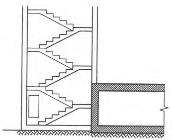
СП 88.13330.2022
Рисунок Д.2 - Определение теплосодержания (энтальпии) внутреннего воздуха при удалении тепловых избытков системой вентиляции в режиме I и допустимых сочетаний температуры и влажности этого воздуха в третьей и четвертой климатических зонах
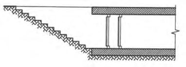
ЕПриложение Е. Методика оценки загазованности территории
- Е.1 Оценку загазованности территории размещения ЗС ГО продуктами горения (СО и СО2) должны проводить по следующей методике.
- Е.1.1 Концентрацию продуктов горения Cx,y , мг/л, вблизи отдельного очага пожара в точке с координатами x , y , (рисунки Е.1, Е.2) вычисляют по формуле
где Qi - интенсивность выделения i -го продукта горения, мг∙м -2 ∙c -1 ;
- n - параметр устойчивости атмосферы, принимаемый равным 0,5 - для умеренного, приморского и континентального климата и 0,2 - для климата за полярным кругом;
- а виртуальный коэффициент диффузий, принимаемый по та6лице Е.1;
- G - коэффициент для пожаров в завалах, принимается равным единице. Для открытых пожаров и пожаров в зданиях высотой до 12 м значение G принимают равным 1,5, в зданиях высотой 30 м и более значение G принимают равным 2,72. В остальных случаях значение G определяют методом линейной интерполяции;
- 2,3 - коэффициент размерности;
- v - скорость ветра в приземном слое, м/с, определяемая по формуле (Е.7); l
- ширина очага пожара, м;
- b - половина длины очага пожара, м;
- х , у - координаты точки, м;
- Z - высота подъема конвективной колонки, м
Рисунок Е.1 - Схема определения размеров зон загазованности от отдельного очага при направлении ветра перпендикулярно к фасаду здания
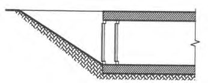
Рисунок Е. 2 - Схема определения размеров зон загазованности от отдельного очага пожара при направлении ветра под острым углом к фасаду здания
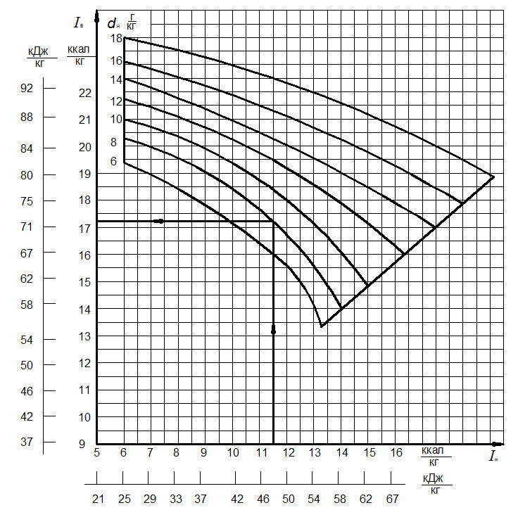
Таблица Е.1
| Значение n | Значение а для различных высот Z , м | Значение а для различных высот Z , м | Значение а для различных высот Z , м | Значение а для различных высот Z , м |
|---|---|---|---|---|
| Значение n | Z ≤ 25 | 25 < Z ≤ 50 | 53 < Z ≤ 75 | Z > 75 |
| 0,2 | 0,21 | 0,17 | 0,15 | 0,12 |
| 0,5 | 0,02 | 0,05 | 0,04 | 0,03 |
- Е.1.2 Интенсивность выделения продуктов горения Qi , мг·м -2 ·с -1 , вычисляют по формуле
где Kп - коэффициент приведения; m г - массовая скорость выгорания горючей нагрузки, кг·м -2 ·с -1 ;
L i - массовая доля i -го продукта горения, выделяющегося при сгорании единицы массы горючей нагрузки.
Значения K п; m г ; Li приведены в таблице Е.2.
Таблица Е.2
| Наименование материала | m г , кг·м -2 ·с -1 | СО L | 2 СО L | K n |
|---|---|---|---|---|
| 1 Горючая нагрузка завала | 0,0002 | 0,15 | 0,85 | 1000 |
| 2 Горючая нагрузка зданий I-III степеней огнестойкости | 0,014 | 0,11 | 0,89 | 100 |
| 3 Древесина сосны | 0,007 | 0,205 | 0,724 | 35 |
| 4 Поролон | 0,0158 | 0,155 | 0,252 | 1 |
| 5 Резина | 0,0168 | 0,15 | 0,416 | 1 |
| 6 Бумага | 0,01 | 0,245 | 0,573 | 1 |
| 7 Шерсть | 0,0108 | 0,235 | 0,70 | 1 |
| 8 Линолеум ПХВ на теплоизолирующей основе | 0,0156 | 1,19 | 0,59 | 1 |
| 9 То же, безосновный экструзионный | 0,018 | 0,12 | 0,50 | 1 |
| 10 », на тканевой основе | 0,0135 | 0,14 | 0,54 | 1 |
| 11 Полистирол гранулированный | 0,038 | 0,07 | 0,97 | 1 |
| 12 То же, самозатухающий | 0,055 | 0,09 | 1,03 | 1 |
| 13 », гранулированный | 0,066 | 0,114 | 0,66 | 1 |
| 14 Декоративные бумажно-слоистые пластики | 0,021 | 0,230 | 0,43 | 1 |
| 15 Бумага оберточная | 0,024 | 0,40 | 0,65 | 1 |
| 16 То же, финская | 0,054 | 0,31 | 0,554 | 1 |
| 17 Изоплен (ПХВ-клеенка на бумажной основе) | 0,032 | 0,22 | 0,537 | 1 |
| 18 Фенольная смола | 0,014 | 0,135 | 0,30 | 1 |
| 19 Фенол | 0,066 | 0,429 | 0,60 | 1 |
| 20 Полиэфирная смола | 0,055 | 0,271 | 0,27 | 1 |
| 21 Диоктилфталат | 0,086 | 0,088 | 0,86 | 1 |
| 22 Бензин | 0,0053 | 0,386 | 0,376 | 1 |
| 23 Керосин | 0,0048 | 0,311 | 0,33 | 1 |
| 24 Дизельное топливо | 0,0055 | 0,413 | 0,337 | 1 |
| 25 Мазут | 0,0030 | 0,321 | 0,347 | 1 |
| 26 Нефть | 0,0020 | 0,383 | 0,388 | 1 |
| 27 Ацетон | 0,0049 | 0,55 | 0,45 | 1 |
| 28 Бензол | 0,0066 | 0,297 | 0,306 | 1 |
| 29 Толуол | 0,0045 | 0,286 | 0,255 | 1 |
| 30 Спирт этиловый | 0,0040 | 0,579 | 0,378 | 1 |
| 31 Мука травяная | 0,0026 | 0,182 | 0,98 | 1 |
| 32 Просо фуражное | 0,0018 | 0,263 | 0,726 | 1 |
| 33 Пшеница фуражная | 0,0023 | 0,272 | 0,786 | 1 |
| 34 Мука костяная | 0,00093 | 0,079 | 0,564 | 1 |
| 35 Кукуруза фуражная | 0,00236 | 0,328 | 0,882 | 1 |
| 36 Отруби | 0,00173 | 0,225 | 0,522 | 1 |
| 37 Ячмень фуражный | 0,002 | 0,34 | 0,852 | 1 |
| 38 Шроты (подсолнечные) | 0,0015 | 0,159 | 0,932 | 1 |
| 39 Жмых (подсолнечный) | 0,00074 | 0,138 | 0,819 | 1 |
| 40 Мука пшеничная | 0,00225 | 0,215 | 0,698 | 1 |
| 41 Мука рыбная | 0,00133 | 0,094 | 0,541 | 1 |
| 42 Овес фуражный | 0,00192 | 0,259 | 0,698 | 1 |
| 43 Мука высококостная | 0,00127 | 0,105 | 0,738 | 1 |
СП 88.13330.2022
- Е.1.3 Высоту подъема конвективной колонки Z , м, для отдельного очага пожара рассчитывают по формуле
где T пл - температура пламени, °С, определяемая по таблице Е.3.
Таблица Е.3
| Вид пожара | Значение температуры T пл , ° С |
|---|---|
| Открытый пожар, пожар в зданиях IV-V степеней огнестойкости | 1100 |
| Пожар в зданиях и сооружениях I-III степеней огнестойкости | 550 |
| Пожары в завалах | 200 |
S - площадь очага пожара, м² ; γ - градиент температуры воздуха, °С/100 м, принимаемый по таблице Е.4.
Таблица Е.4
| Наименование климатической зоны | Расчетный градиент температуры воздуха, °С/100 м |
|---|---|
| Умеренный климат | -1,5 |
| Приморский климат | -3,9 |
| Континентальный климат | -3,0 |
| Климат за полярным кругом | -4,0 |
- 2,53 - коэффициент размерности;
L - высота факела пламени, м.
При пожаре в завалах значение L равно высоте завала, принимаемой по таблице Е.5.
Таблица Е.5
| Число этажей здания | Высота завала, м, при плотности застройки,% | Высота завала, м, при плотности застройки,% | Высота завала, м, при плотности застройки,% | Высота завала, м, при плотности застройки,% |
|---|---|---|---|---|
| Число этажей здания | 20 | 30 | 40 | 50 |
| 2 | 0,9 | 1,1 | 1,4 | 1,8 |
| 4 | 1,9 | 2,1 | 2,7 | 3,9 |
| 6 | 2,7 | 3,1 | 3,9 | 5,7 |
| 8 | 3,4 | 3,9 | 5,1 | 7,9 |
При пожарах в сохранившихся зданиях I-III степеней огнестойкости значение L , м, находят по формуле
где Н зд - высота здания, м;
Н эт - высота этажа, м.
Для открытых пожаров высоту факела пламени рассчитывают по формулам:
- для горючих жидкостей:
- для твердых горючих материалов типа древесины:
где Q н - низшая теплотворная способность горючего материала, кДж·кг -1 ;
- d - характерный линейный размер очага пожара: для пожара на прямоугольной площади и близкой к ней форме - это ширина здания (сооружения), м; для пожара на круговой площади или близкой к ней форме - это диаметр круга, м; h - безразмерный коэффициент, численно равный высоте горящего слоя, м; m г - см. формулу (Е.2).
Е.1.4 Среднее значение скорости ветра вычисляют по формуле
где 𝜐1 - заданная или определенная по розе ветров скорость ветра, м·с -1 ; n см. формулу (Е.1).
Е.1.5 При выборе места строительства убежища расчет загазованности территории предприятия выполняют в следующей последовательности.
Для каждого здания (сооружения) на территории предприятия определяют наиболее вероятный вид пожара (открытый, в завале, в сохранившемся здании).
Генеральный план предприятия покрывают координатной сеткой с размерами квадратов 50×50 м (или других размеров в зависимости от площади предприятия и необходимой точности расчета).
По розе ветров определяют наиболее вероятное направление ветра и его скорость v 1. По формуле (Е.7) вычисляют среднюю скорость ветра в приземном слое v .
Для каждого отдельного очага пожара с применением формул (Е.3) - (Е.7) и таблиц Е.4, Е.5 вычисляют высоту подъема конвективной колонки Z.
По значению Z таблицы Е.1 определяют коэффициент а .
Определяют по какому газу необходимо провести расчет и по формуле (Е.3) с учетом данных таблицы Е.2, для каждого очага пожара вычисляют интенсивность выделения продуктов горения Qi .
Для каждого очага пожара в направлении ветра (рисунки Е.1 и Е.2) проводят лучи АВ и CD и выбирают систему координат. Для направления ветра, перпендикулярного к фасаду здания, за начало координат берут точку в центре фасада с подветренной стороны (см. рисунок Е.1).
Для направления ветра, параллельного фасаду здания, за начало координат берут точку в центре торца с подветренной стороны.
Для направления ветра, составляющего острый угол с фасадом здания, за начало координат берут точку на середине отрезка, полученного путем геометрического построения. Пример такого построения показан на рисунке Е.2.
Линии А 0 М и C 0 N параллельны направлению ветра. АС перпендикулярна к AM и CN . Линия АС проходит через угол здания с подветренной стороны. Ось X параллельна направлению ветра. Для узлов координатной сетки, попавших в полосу, ограниченную лучами АВ и CD , по формуле (Е.1) вычисляют концентрацию продуктов горения.
Описанную последовательность расчета осуществляют для каждого очага пожара. Концентрацию в узлах квадратной сетки, рассчитанную для разных очагов пожара, складывают. Одинаковые значения концентрации соединяют изолиниями, как показано на рисунке Е.3.
(Е.6)
Рисунок Е.3 - Схема определения размеров зон загазованности для разных очагов пожара
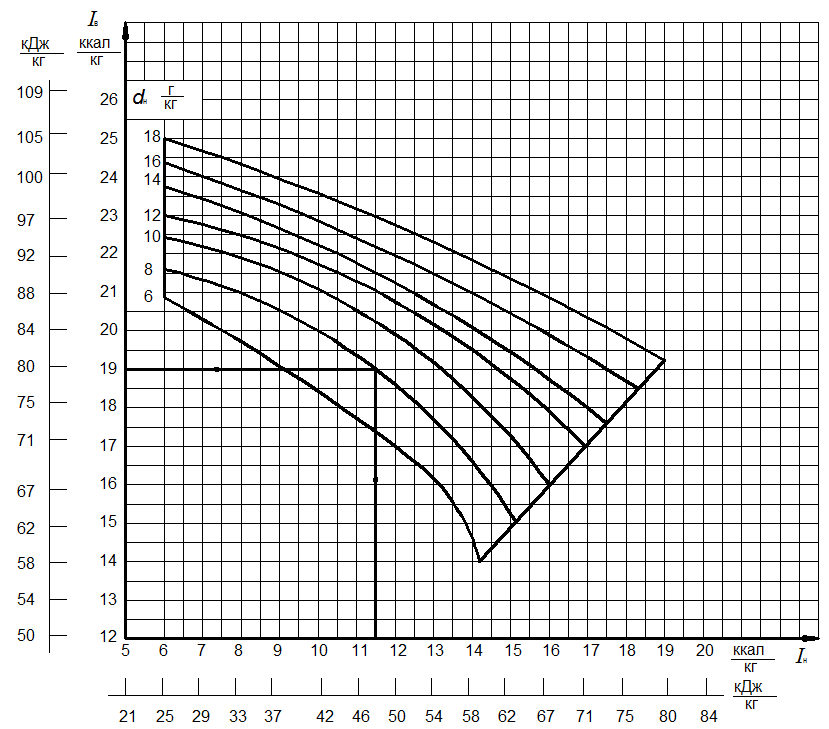
Е.1.6 При заданном месте расположения убежища, концентрацию загазованности определяют только в одной точке - в месте расположения воздухозаборного устройства.
При этом загазованность учитывают только от тех очагов пожара, в секторе которых находится убежище (в секторе, ограниченном лучами АВ и CD , см. рисунки Е.2 и Е.3) .
ЖПриложение Ж. Расчет покрытий убежищ гражданской обороны на податливых опорах
Расчет покрытий убежищ гражданской обороны на податливых опорах следует выполнять на действие динамической нагрузки, изменяющейся по закону
где ∆𝑃ф - давление на фронте ударной волны;
Θ - эффективное время действия ударной волны, определяемое зависимостями
𝜏+ = 1.5 ∙ 10 -3 √𝐶 6 √𝑅 -при воздушном взрыве; 𝜏+ = 1.5 ∙ 10 -3 √𝐶 6 /𝑅 -при наземном взрыве; 𝐶 - масса взрывчатого вещества в тротиловом эквиваленте; 𝑅 -расстояния от местоположения убежища до точки взрыва.
Действие ударной волны на элементы конструкций убежищ при расчетах заменяют действием эквивалентных статических нагрузок 𝑞экв , определяемых по формуле
где 𝑃𝑖 - расчетные нагрузки, определяемые в соответствии с требованиями раздела 9; 𝐾Д -коэффициент динамичности конструкции.
Эквивалентную статическая нагрузка принимают равномерно распределенной по площади и приложенной ортогонально к срединной поверхности конструкции.
Значение коэффициента динамичности определяют подстановкой значения 𝑡max в функцию динамичности 𝐾Д = 𝑇 𝑖 (t max ) , где 𝑡max -время достижения функцией динамичности максимального значения. Функции динамичности жесткозаделанных по контуру плит 𝑇𝑖 (𝑡) и время 𝑡max определяют по формулам (Ж.4) -(Ж.17) .
Частоты собственных колебаний 𝜔𝑒𝑙 и 𝜔𝑝𝑙 в формулах (Ж.8) -(Ж.17) принимают равными:
где g𝑒𝑙 , g𝑝𝑙 - жесткость податливой опоры соответственно в упругой и пластической стадии деформирования; 𝑎 , 𝑏 - размеры плиты в плане ( 𝑎 ≥ 𝑏 ); 𝑚 - масса единицы площади плиты покрытия; 𝑚ст - суммарная масса вертикальных несущих конструкций между отметками верха податливой опоры и низа плиты покрытия; 𝜔1 - частота собственных колебаний жесткозащемленной плиты, опертой на несмещаемый контур, определяемая по формуле
где 𝐷 = 𝐸h 3 12(1-𝜈 2 ) - цилиндрическая жесткость плиты; 𝜈 - коэффициент Пуассона бетона.
СП 88.13330.2022
Начальные условия при переходе податливых опор из упругой стадии в пластическую 𝑇𝑝𝑙 (𝑡 𝑆𝑌,𝑒𝑙) и 𝑇 ̇ 𝑝𝑙 (𝑡 𝑆𝑌,𝑒𝑙) определяют по формулам:
Функцию динамичности и время достижения ею максимального значения, при деформировании податливых опор в упругой стадии, определяют по формулам:
при Θ < 𝑡 (𝑓(𝑡) = 0)
Функцию динамичности и время достижения ею максимального значения, при деформировании податливых опор в упруго-пластической стадии и при переходе податливых опор в пластическую стадию деформирования на этапе спада нагрузки ( 0 < 𝑡 𝑆𝑌,𝑒𝑙 ≤ Θ ), определяют по формулам:
при Θ < 𝑡 (𝑓(𝑡) = 0)
При переходе податливых опор в пластическую стадию деформирования на этапе нулевой нагрузки ( Θ < 𝑡𝑆𝑌,𝑒𝑙 ) коэффициент динамичности определяют по формулам:
- при 𝑡 𝑆𝑌,𝑒𝑙 < 𝑡 (𝑓(𝑡) = 0)
Библиография
- [1] Федеральный закон от 22 июля 2008 г. № 123-ФЗ «Технический регламент о требованиях пожарной безопасности»
- [2] Постановление Правительства Российской Федерации от 29 ноября 1999 г. № 1309 «О порядке создания убежищ и иных объектов гражданской обороны» 3] Постановление Правительства Российской Федерации от 16 февраля 2008 г. № 87 «О составе разделов проектной документации и требованиях к их содержанию»
- [4] СанПиН 2.1.3684-21 Санитарно-эпидемиологические требования к содержанию территорий городских и сельских поселений, к водным объектам, питьевой воде и питьевому водоснабжению, атмосферному воздуху, почвам, жилым помещениям, эксплуатации производственных, общественных помещений, организации и проведению санитарно-противоэпидемических (профилактических) мероприятий
- [5] ПУЭ Правила устройства электроустановок (7-е изд.)
- [6] Постановление Правительства Российской Федерации от 16 сентября 2020 г. № 1479 «Об утверждении правил противопожарного режима в Российской Федерации»
- [7] Приказ Министерства Российской Федерации по делам гражданской обороны, чрезвычайным ситуациям и ликвидации последствий стихийных бедствий от 15 декабря 2002 г. № 583 «Об утверждении и введении в действие Правил эксплуатации защитных сооружений гражданской обороны»